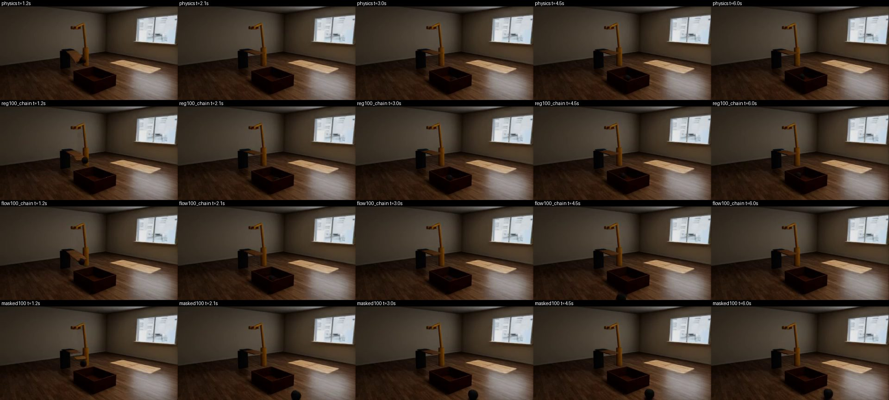
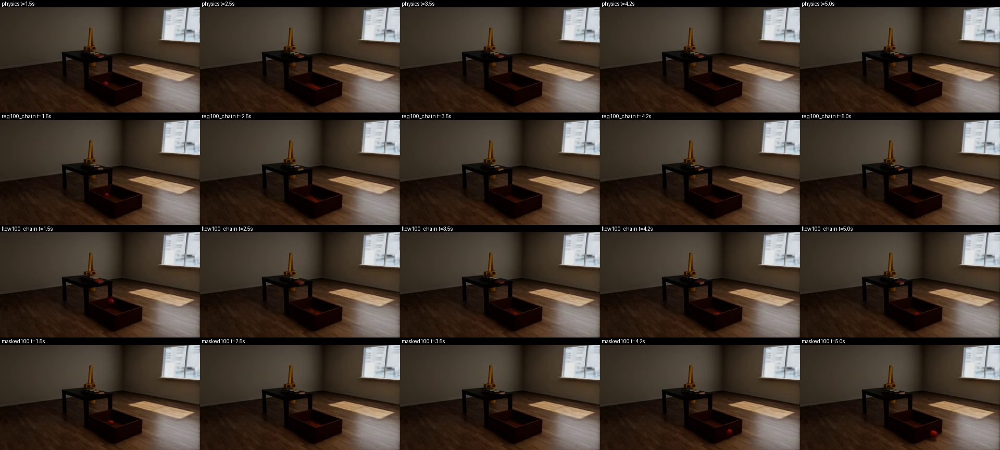

State predictors
Learned simulators trained on the simple set: given a scene, its objects' properties and the robot's force, they predict how everything moves. Stage 1 of the plan is complete (100,000 steps per run); stage 2, chained fine-tunes of the block models, is running. Updated 06 November 2026, 16:08 UTC.
In short
Best on rooms never seen in training: reg 100M, chain of 10 , 0.19 m mean error on the objects that move, 0.31 m at the last frame, over clips of 4 to 8 s.Training through chains of blocks lowers the error: flow 25M 0.38 → 0.28 m, flow 50M 0.36 → 0.27 m, flow 100M 0.34 → 0.26 m, reg 25M 0.38 → 0.19 m, reg 100M 0.36 → 0.19 m.Every model still invents motion. Of the objects that stay still in the simulation, 19% to 99% get moved more than 5 cm, depending on the model.Hardest for reg 100M, chain of 10: orbital (0.97 m), granular (0.73 m), balloon (0.49 m). Easiest: ramp spring domino (0.03 m), pendulum jenga (0.03 m), crank (0.03 m).Forward error (metres, lower is better) and false motion
model validation test test, last frame test, false motion best chain validation test test, last frame test, false motion ■ Block flow 25M0.448 0.379 0.581 58.4% 5 0.364 0.283 0.449 31.1% ■ Block flow 50M0.428 0.360 0.551 50.9% 5 0.352 0.270 0.432 31.8% ■ Block flow 100M0.397 0.338 0.517 44.4% 5 0.331 0.261 0.422 31.9% ■ Block regression 25M0.454 0.385 0.606 99.0% 15 0.263 0.191 0.305 24.0% ■ Block regression 100M0.418 0.356 0.558 94.3% 10 0.257 0.190 0.307 19.0% ■ Masked flow 25M0.427 0.363 0.550 54.9% – – – – – ■ Masked flow 100M0.369 0.315 0.480 38.6% – – – – –
Error: mean distance between predicted and simulated positions of the objects that move in the simulation, over the whole 4-8 s clip,
from the true first frame and the action; each moving object counts once. Validation: 1,024 clips (512 for the masked model) in rooms seen in training. Test: all
28,646 clips of the final data in rooms never seen in training. False motion: of the objects that stay still in the simulation (not acted on, never more than 1 cm from their
start), the share the model moves more than 5 cm at some point. Best chain: the block model fine-tuned through the chain length with the lowest validation error; the masked
model generates a whole clip at once and has no chains. Test below validation does not mean test is easier: the two sets mix the families differently (granular scenes are 14% of
the moving objects in validation, 8% in test). Checked on regression 25M, chain of 15: validation's per-family errors on test's mix give 0.192 m against 0.191 m on test, so
unseen rooms show no gap.
Clips: the physics engine next to every model · qualitative comparison, one typical scene per family of objects and motions, in rooms never seen in training One grid of methods on the same scenes. Top row: the physics engine, the non-block methods and masked flow. Second row: block flow 100M by chain length, then masked regression. Third row: block regression 100M by chain length, then the first masked flow model. Fourth row: the smaller sizes, each with its best chain. A grey tile is still training. One scene per family in a room never seen in training: the record at the family's median error, so a clip shows a typical result, not a hand-picked one, and the scenes stay the same in later rounds. Each tile is the same room and camera; the label gives the model and its error on this record. The camera fits the simulated motion, so a prediction that flies away leaves the picture. The robot arm follows the recorded motion in every tile, because its force and timing are an input. Nothing is shown below the floor: a piece that would sink is lifted onto it, after every block for block models and on the finished clip for whole-clip models. The tables are without this lift. Open a group; clips play while the pointer is over them, or on a tap.
Falls, throws and flight 9 scenes drop, projectile, rocket, balloon, orbital, gravity change, drag wind, spin, top drop · a material swap · 4 s
projectile · graded change: friction · 5 s
rocket · a property and a material changed together · 6 s
balloon · an object property changed · 6 s
orbital · graded change: mass · 8 s
gravity change · graded change: floor · 6 s
drag wind · an object removed late in the motion · 6 s
spin · graded change: friction · 4 s
top · graded change: gravity · 8 s
Slides, rolls and collisions 8 scenes sliding, slip roll, collision, billiards, bowling, ramp, carrying cart, granular sliding · gravity x0.6 or x1.4 · 4 s
slip roll · the action as planned · 5 s
collision · graded change: restitution · 4 s
billiards · graded change: gravity · 6 s
bowling · a property and a material changed together · 5 s
ramp · gravity x0.6 or x1.4 · 5 s
carrying cart · an object property changed · 6 s
granular · an object property changed · 6 s
Toppling, towers and dominoes 10 scenes topple, cascade, domino branch, chair row domino, pendulum jenga, pendulum tower box, launcher tower, table topple items, cabinet tip shed, rubble topple · graded change: friction · 5 s
cascade · graded change: restitution · 5 s
domino branch · graded change: action · 6 s
chair row domino · a property and a material changed together · 6 s
pendulum jenga · floor friction x0.5 or x2 · 6 s
pendulum tower box · a change during the motion · 7 s
launcher tower · graded change: restitution · 6 s
table topple items · graded change: action · 5 s
cabinet tip shed · graded change: restitution · 5 s
rubble · graded change: mass · 4 s
Furniture and catching 6 scenes chair push table, chair spill, chair throw table, crate drop table, books ball catch, ball block catch chair push table · graded change: restitution · 5 s
chair spill · graded change: gravity · 5 s
chair throw table · an object removed late in the motion · 5 s
crate drop table · gravity x0.6 or x1.4 · 5 s
books ball catch · graded change: friction · 5 s
ball block catch · graded change: friction · 5 s
Pendulums, springs and elastic parts 9 scenes pendulum, double pendulum, pendulum spring, spring, coupled springs, trampoline, elastic bridge, diving board, rope chain pendulum · graded change: restitution · 8 s
double pendulum · graded change: gravity · 8 s
pendulum spring · an object property changed · 8 s
spring · graded change: restitution · 8 s
coupled springs · graded change: action · 8 s
trampoline · floor friction x0.5 or x2 · 5 s
elastic bridge · a change during the motion · 6 s
diving board · graded change: gravity · 6 s
rope chain · gravity x0.6 or x1.4 · 8 s
Mechanisms 10 scenes lever, catapult, crank, hinge slider, pulley, opposing wheels, rotating apparatus, composite, ramp lever projectile, ramp spring domino lever · graded change: action · 5 s
catapult · graded change: mass · 5 s
crank · a change during the motion · 6 s
hinge slider · graded change: mass · 4 s
pulley · graded change: mass · 6 s
opposing wheels · graded change: action · 5 s
rotating apparatus · graded change: mass · 6 s
composite · graded change: restitution · 5 s
ramp lever projectile · an object property changed · 6 s
ramp spring domino · graded change: restitution · 6 s
The apples-to-apples comparison · non-block and masked methods trained under the same setup, and the still-object weight test method step of 100,000 validation error (m) false motion, latest test error (m) test false motion passes every check velocity jump at 0.2 s (m/s) Non-block regression 100,000 0.257 40.3% 0.177 27.1% 0.0% 1.44 Non-block flow 100,000 0.348 45.8% 0.258 39.0% 0.0% 1.08 Non-block diffusion 100,000 0.846 98.1% 0.680 99.1% 0.0% 1.88 Masked regression, forward only 100,000 0.251 40.3% 0.175 27.2% 0.0% 1.45 Masked regression, all questions 100,000 0.268 57.9% 0.192 45.2% 0.0% 3.22 Masked flow, forward only 100,000 0.352 79.2% 0.264 28.0% 0.0% 1.06 Masked flow, all questions 100,000 0.440 51.9% 0.333 42.4% 0.0% 1.71 Non-block regression, still weight 1 100,000 0.257 31.5% 0.176 22.3% 0.0% 1.46 Non-block regression, still weight 3 100,000 0.249 26.4% 0.174 21.0% 0.0% 1.46
All 100M, on the final data, with 100,000 steps, batch 32 and the same training settings, no priors and no physics losses. Validation: 512 clips, so differences of a few centimetres are noise. Test and plausibility numbers appear when a run has finished. Two small differences come with the trainers: the masked trainer averages the motion loss per clip, the non-block one over the batch; and all-questions runs pick their best checkpoint from 60% of training on. The still-weight rows differ from non-block regression only in how much still objects count (0.1 in every other run).
Physical plausibility · what displacement error does not show: shaking, wandering, running away, invented motion, energy from nowhere The same 1,040 test simulations for every model, 20 per family, without the floor lift. Each check passes when a clip is within what the true motion does: the 99th percentile of the truth across clips, never tighter than a small measuring tolerance (2 cm overlap, 0.5 cm trembling, 0.3 m/s stutter, 2 cm/s wander, 2 times the range of motion, 1 J). Each column counts only the clips that check applies to: for example, wall crossing only in scenes with a catch box, settling only where something is truly at rest in the last second. The combined score is strict: one failed check fails the clip, so read it together with the columns. Masked and non-block models have no blocks, but they generate in 0.2-s patches, so the same boundary test applies. Mesh parts count as no obstacle.
model error (m) passes every check no overlap over 2 cm never crosses a box wall moves no still object settles no stutter at 0.2 s no trembling no runaway no energy from nowhere stays above the floor joints hold Physics engine (truth) 0.000 97.8% 100.0% 100.0% 100.0% 100.0% 99.0% 99.0% 100.0% 100.0% 100.0% 99.4% Non-block regression 100M 0.145 0.0% 48.9% 87.0% 61.8% 0.0% 0.0% 76.7% 95.4% 24.8% 42.2% 75.0% Non-block flow 100M 0.228 0.0% 48.1% 63.0% 42.9% 0.0% 0.1% 91.6% 90.0% 47.5% 62.4% 80.0% Non-block diffusion 100M 0.784 0.0% 40.6% 32.0% 0.6% 0.0% 0.0% 31.2% 63.0% 67.6% 33.5% 11.7% Masked flow 100M, forward only 0.235 0.0% 49.9% 64.0% 68.8% 0.0% 0.7% 89.8% 87.3% 45.3% 60.0% 83.9% Masked flow 100M, all questions 0.337 0.0% 42.1% 59.0% 41.8% 0.0% 0.0% 48.0% 82.9% 25.6% 44.2% 66.7% Masked regression 100M, forward only 0.131 0.0% 45.9% 82.0% 50.6% 0.0% 0.0% 74.8% 93.8% 21.1% 40.5% 87.8% Masked regression 100M, all questions 0.166 0.0% 43.8% 85.0% 37.6% 0.0% 0.0% 34.3% 92.7% 9.1% 37.8% 85.0% Non-block regression 100M, still weight 1 0.133 0.0% 45.7% 86.0% 65.3% 0.0% 0.0% 75.1% 94.2% 25.3% 40.6% 76.1% Non-block regression 100M, still weight 3 0.132 0.0% 45.9% 83.0% 71.2% 0.0% 0.0% 72.6% 94.6% 26.1% 41.4% 79.4% Masked flow 100M, first run 0.315 0.0% 42.9% 54.0% 42.9% 0.0% 0.0% 54.8% 85.1% 27.5% 48.7% 76.7% Masked flow 25M, first run 0.370 0.0% 40.3% 48.0% 32.9% 0.0% 0.0% 28.8% 79.2% 16.8% 38.6% 58.9% Block flow 100M, 1 block 0.401 12.9% 42.1% 50.0% 31.2% 6.5% 99.9% 99.9% 83.6% 83.6% 57.0% 43.3% Block flow 50M, 1 block 0.442 11.9% 43.5% 40.0% 27.1% 0.0% 100.0% 99.9% 79.1% 79.0% 53.7% 36.1% Block flow 25M, 1 block 0.475 9.5% 39.8% 46.0% 18.2% 0.3% 100.0% 100.0% 79.7% 80.1% 46.9% 30.0% Block regression 100M, 1 block 0.479 8.8% 39.8% 43.0% 1.8% 0.0% 100.0% 100.0% 76.9% 84.1% 36.5% 15.0% Block regression 25M, 1 block 0.494 7.7% 40.0% 48.0% 1.2% 0.0% 100.0% 100.0% 73.7% 80.7% 33.3% 1.7% Block flow 100M, best chain 0.246 0.0% 39.6% 64.0% 51.8% 0.0% 0.0% 6.2% 83.5% 3.5% 39.4% 77.8% Block flow 50M, best chain 0.261 0.0% 42.0% 68.0% 54.7% 0.0% 0.0% 5.6% 82.8% 2.9% 40.9% 75.6% Block flow 25M, best chain 0.249 0.0% 40.8% 69.0% 58.8% 0.0% 0.0% 4.6% 82.9% 3.3% 40.7% 84.4% Block regression 100M, best chain 0.159 0.0% 49.5% 89.0% 72.9% 0.0% 0.0% 94.4% 94.3% 36.8% 49.8% 81.7% Block regression 25M, best chain 0.165 0.0% 49.5% 89.0% 64.7% 0.0% 0.0% 99.5% 94.0% 46.3% 48.9% 70.6% Block regression 100M, chain 3 0.223 13.0% 44.0% 63.0% 32.9% 0.0% 95.6% 100.0% 87.7% 81.1% 45.4% 58.3% Block regression 100M, chain 5 0.187 11.1% 49.3% 87.0% 58.8% 0.0% 67.1% 100.0% 91.6% 75.4% 49.6% 72.8% Block regression 100M, chain 10 0.164 1.6% 48.9% 89.0% 72.4% 0.0% 14.7% 100.0% 93.4% 46.7% 51.1% 77.8% Block regression 100M, chain 15 0.159 0.0% 49.4% 90.0% 72.4% 0.0% 0.0% 94.4% 94.4% 36.8% 49.9% 81.7% Block flow 100M, chain 3 0.322 0.0% 42.1% 51.0% 54.7% 0.0% 0.1% 43.7% 84.9% 16.6% 49.3% 70.0% Block flow 100M, chain 5 0.256 0.0% 41.2% 57.0% 61.2% 0.0% 0.0% 19.0% 82.4% 6.9% 39.7% 76.1%
Typical values · the median over clips of each measure, with the true motion on the first row model velocity jump at 0.2 s boundaries (m/s) velocity jump inside a block (m/s) fast trembling (cm) wobble at 0.1 to 0.4 s (cm) jerk (m/s³) resting objects wander (cm/s) largest motion against the truth (×) smallest motion against the truth (×) energy from nowhere (J) moves before it is touched free-flight acceleration error (m/s²) velocity against its own path (m/s) Physics engine (truth) 0.036 0.034 0.15 1.54 0 0.0 1.00 1.00 0.00 0% 0.0 0.022 Non-block regression 100M 1.440 0.272 0.63 1.68 866 13.8 1.06 0.96 5.07 86% 9.8 0.210 Non-block flow 100M 1.083 0.469 0.53 1.57 2625 24.5 1.08 0.93 1.22 86% 8.5 0.306 Non-block diffusion 100M 1.884 1.062 1.10 1.98 6040 64.0 1.51 0.93 0.00 100% 13.9 0.674 Masked flow 100M, forward only 1.061 0.494 0.53 1.58 2721 23.5 1.09 0.91 1.34 81% 8.8 0.316 Masked flow 100M, all questions 1.715 0.711 0.85 1.91 3917 32.6 1.13 0.86 6.17 100% 13.9 0.460 Masked regression 100M, forward only 1.452 0.255 0.63 1.69 720 12.7 1.07 0.96 5.15 100% 10.4 0.195 Masked regression 100M, all questions 3.222 0.441 0.98 1.68 902 31.7 1.08 0.93 10.13 100% 13.5 0.369 Non-block regression 100M, still weight 1 1.463 0.270 0.65 1.66 819 13.5 1.07 0.96 5.15 92% 10.4 0.210 Non-block regression 100M, still weight 3 1.461 0.272 0.64 1.68 819 13.2 1.06 0.97 4.77 88% 10.1 0.209 Masked flow 100M, first run 1.517 0.686 0.78 1.89 3793 31.1 1.12 0.88 5.07 100% 13.5 0.438 Masked flow 25M, first run 2.270 1.019 1.16 2.38 5589 46.7 1.21 0.85 17.35 100% 18.4 0.652 Block flow 100M, 1 block 0.047 0.051 0.12 1.40 204 2.7 1.16 0.93 0.00 50% 3.7 0.034 Block flow 50M, 1 block 0.050 0.054 0.12 1.36 238 3.4 1.21 0.93 0.02 42% 3.8 0.037 Block flow 25M, 1 block 0.053 0.057 0.12 1.34 256 3.7 1.18 0.88 0.02 60% 4.1 0.039 Block regression 100M, 1 block 0.063 0.051 0.10 1.23 181 6.7 1.19 0.94 0.03 83% 3.8 0.037 Block regression 25M, 1 block 0.068 0.052 0.09 1.05 177 7.8 1.23 0.91 0.02 100% 4.0 0.033 Block flow 100M, best chain 5.276 0.931 2.08 4.75 2662 40.7 1.13 0.99 48.11 57% 21.7 0.810 Block flow 50M, best chain 5.427 0.919 2.17 4.99 2459 39.9 1.13 0.98 49.40 57% 22.1 0.818 Block flow 25M, best chain 5.694 1.009 2.19 4.87 3034 48.0 1.15 0.99 51.76 60% 22.3 0.900 Block regression 100M, best chain 1.216 0.148 0.36 1.20 163 9.0 1.03 0.92 2.48 75% 6.6 0.134 Block regression 25M, best chain 0.980 0.121 0.29 1.17 163 6.9 1.02 0.91 1.33 75% 6.0 0.113 Block regression 100M, chain 3 0.253 0.056 0.12 1.30 171 4.5 1.05 0.95 0.05 12% 3.3 0.052 Block regression 100M, chain 5 0.366 0.065 0.14 1.27 158 4.5 1.04 0.96 0.18 17% 3.7 0.062 Block regression 100M, chain 10 0.639 0.088 0.21 1.24 147 5.5 1.03 0.94 1.20 40% 4.9 0.083 Block regression 100M, chain 15 1.218 0.148 0.36 1.20 160 9.0 1.03 0.92 2.49 75% 6.6 0.134 Block flow 100M, chain 3 1.939 0.404 0.91 2.43 1475 12.1 1.12 0.95 12.11 14% 12.7 0.336 Block flow 100M, chain 5 3.838 0.728 1.58 3.79 2237 27.3 1.11 0.98 28.04 7% 16.3 0.614
Video diffusion models on the same scenes · Wan and Cosmos next to our models and the physics engine, six scenes, the same starting picture One scene per kind of motion, from the clips above, all in a test room. Every model starts from the same rendered picture. Top row: the physics engine and our models. Second row: Wan and Cosmos given a sentence stating what our state predictors are given (the scene, each object's properties, the action with its force and timing). Third row: the same video models also told what happens, a generous upper bound. Same 5 s timeline and camera; each video model is one sample with seed 0. Open a scene; clips play while the pointer is over them, or on a tap.
balloon Falls, throws and flight Told the action: A fixed camera looks at a 3D-rendered empty room with a dark wooden floor and plain walls. An orange robot arm stands on the floor and holds three large balloons on short tethers in the air above it, touching one another: a black rubber one, a blue plastic one and a silver metal one, each 44 cm across. The black balloon weighs 62 g and the blue and silver balloons 45 g each, and each balloon is lifted by a constant upward force of 0.64 N, more than its weight, against gravity of 9.8 m/s squared and air drag. At 0.75 s the arm lets go of the balloons and stays still. The camera does not move. The objects are rigid and keep their shape, size and color. Realistic physics.
Also told the outcome: A fixed camera looks at a 3D-rendered empty room with a dark wooden floor and plain walls. An orange robot arm stands on the floor and holds three large balloons on short tethers in the air above it, touching one another: a black rubber one, a blue plastic one and a silver metal one, each 44 cm across. The black balloon weighs 62 g and the blue and silver balloons 45 g each, and each balloon is lifted by a constant upward force of 0.64 N, more than its weight, against gravity of 9.8 m/s squared and air drag. At 0.75 s the arm lets go of the balloons and stays still. As soon as the arm lets go, the balloons float upward. The blue and silver ones reach the ceiling after 1.2 s and the heavier black one after 2 s. All three then stay pressed against the ceiling, side by side, until the end. The camera does not move. The objects are rigid and keep their shape, size and color. Realistic physics.
bowling Slides, rolls and collisions Told the action: A fixed camera looks at a 3D-rendered empty room with a dark wooden floor and plain walls. On the floor lie a wooden ball, 24 cm across, with the end of an orange robot arm against it, and in front of it six bowling pins, 28 cm tall, standing in a triangle of one, two and three pins in different colours. The ball weighs 5 kg and hardly bounces (restitution 0.1). Each pin weighs 70 g. At 0.35 s the arm pushes the ball towards the pins with a force of 100 N for 0.4 s. The camera does not move. The objects are rigid and keep their shape, size and color. Realistic physics.
Also told the outcome: A fixed camera looks at a 3D-rendered empty room with a dark wooden floor and plain walls. On the floor lie a wooden ball, 24 cm across, with the end of an orange robot arm against it, and in front of it six bowling pins, 28 cm tall, standing in a triangle of one, two and three pins in different colours. The ball weighs 5 kg and hardly bounces (restitution 0.1). Each pin weighs 70 g. At 0.35 s the arm pushes the ball towards the pins with a force of 100 N for 0.4 s. The ball rolls forward and reaches the first pin at 0.62 s. The pins are knocked over one after another and scatter across the floor by about 1 s, sliding and rolling away from the ball, and one pin may stay upright. After about 2 s nothing moves any more. The camera does not move. The objects are rigid and keep their shape, size and color. Realistic physics.
table topple items Toppling, towers and dominoes Told the action: A fixed camera looks at a 3D-rendered empty room with a dark wooden floor and plain walls. A large white-painted wooden table with shelves underneath stands on the floor, 130 cm wide, 83 cm deep and 94 cm tall, with a cup and a book on top of it. The table weighs 33.6 kg, the cup 0.6 kg and the book 0.85 kg. Right at the start the table is struck so that it moves towards the camera at 1.6 m/s and upward at 1.4 m/s while turning at 3.5 radians per second, with nothing visible hitting it. The camera does not move. The objects are rigid and keep their shape, size and color. Realistic physics.
Also told the outcome: A fixed camera looks at a 3D-rendered empty room with a dark wooden floor and plain walls. A large white-painted wooden table with shelves underneath stands on the floor, 130 cm wide, 83 cm deep and 94 cm tall, with a cup and a book on top of it. The table weighs 33.6 kg, the cup 0.6 kg and the book 0.85 kg. Right at the start the table is struck so that it moves towards the camera at 1.6 m/s and upward at 1.4 m/s while turning at 3.5 radians per second, with nothing visible hitting it. The table tips over towards the camera and lands on its side on the floor after 0.7 s, then stays there. The cup and the book fly off the top as it tips and fall to the floor by 1.1 s. The cup bounces and rolls a little way to the right and stops after about 3 s. The camera does not move. The objects are rigid and keep their shape, size and color. Realistic physics.
books ball catch Furniture and catching Told the action: A fixed camera looks at a 3D-rendered empty room with a dark wooden floor and plain walls. A black table stands on the floor. On it five upright books stand in a row, with an orange robot arm at one end of the row and a red ball at the other end, near the edge of the table. Below that edge an open brown box with thin walls, 1 m by 0.8 m and 32 cm high, stands on the floor. Each book weighs 250 g and is 23 cm tall and 4.6 cm thick. The ball weighs 269 g, is 15 cm across and has a friction of 0.84. At 0.35 s the arm pushes the first book along the row with a force of 2.2 N for 0.4 s. The camera does not move. The objects are rigid and keep their shape, size and color. Realistic physics.
Also told the outcome: A fixed camera looks at a 3D-rendered empty room with a dark wooden floor and plain walls. A black table stands on the floor. On it five upright books stand in a row, with an orange robot arm at one end of the row and a red ball at the other end, near the edge of the table. Below that edge an open brown box with thin walls, 1 m by 0.8 m and 32 cm high, stands on the floor. Each book weighs 250 g and is 23 cm tall and 4.6 cm thick. The ball weighs 269 g, is 15 cm across and has a friction of 0.84. At 0.35 s the arm pushes the first book along the row with a force of 2.2 N for 0.4 s. The books fall against each other one after another, the first at 0.6 s and the last at 1 s. The last book pushes the ball at 0.86 s. The ball rolls off the edge of the table, falls into the box at 1.4 s, bounces and rolls on the bottom of the box and stays inside it, never passing through the walls of the box. The camera does not move. The objects are rigid and keep their shape, size and color. Realistic physics.
diving board Pendulums, springs and elastic parts Told the action: A fixed camera looks at a 3D-rendered empty room with a dark wooden floor and plain walls. A thin wooden board, 3 cm thick and 40 cm wide, made of five hinged segments, sticks out horizontally from a dark post like a diving board. An orange robot arm holds a heavy black rubber ball, 22 cm across, above the free end of the board. Below and beyond that end an open brown box with thin walls, 1 m by 0.8 m and 32 cm high, stands on the floor. The ball weighs 5 kg and each board segment 150 g. Gravity here is 17.4 m/s squared, 1.77 times normal. At 0.75 s the arm lets go of the ball and stays still. The camera does not move. The objects are rigid and keep their shape, size and color. Realistic physics.
Also told the outcome: A fixed camera looks at a 3D-rendered empty room with a dark wooden floor and plain walls. A thin wooden board, 3 cm thick and 40 cm wide, made of five hinged segments, sticks out horizontally from a dark post like a diving board. An orange robot arm holds a heavy black rubber ball, 22 cm across, above the free end of the board. Below and beyond that end an open brown box with thin walls, 1 m by 0.8 m and 32 cm high, stands on the floor. The ball weighs 5 kg and each board segment 150 g. Gravity here is 17.4 m/s squared, 1.77 times normal. At 0.75 s the arm lets go of the ball and stays still. The ball falls and hits the free end of the board at 1.04 s. The board bends down sharply under it, the ball rolls off the end and falls into the box at 1.43 s, where it bounces and then stays inside without passing through the walls. The board springs back up, swings up and down a few times and comes to rest close to horizontal. The camera does not move. The objects are rigid and keep their shape, size and color. Realistic physics.
ramp lever projectile Mechanisms Told the action: A fixed camera looks at a 3D-rendered empty room with a dark wooden floor and plain walls. A brown ramp, 150 cm long, slopes down towards a blue lever, 1 m long, that rests on a small pivot on the floor. An orange robot arm holds a metal ball, 12 cm across, at the top of the ramp. A small metal cube, 8 cm wide, rests on the far end of the lever. Further on an open brown box stands on the floor. The ball weighs 523 g, the lever 400 g and the cube 50 g. At 0.75 s the arm lets go of the ball and stays still. The camera does not move. The objects are rigid and keep their shape, size and color. Realistic physics.
Also told the outcome: A fixed camera looks at a 3D-rendered empty room with a dark wooden floor and plain walls. A brown ramp, 150 cm long, slopes down towards a blue lever, 1 m long, that rests on a small pivot on the floor. An orange robot arm holds a metal ball, 12 cm across, at the top of the ramp. A small metal cube, 8 cm wide, rests on the far end of the lever. Further on an open brown box stands on the floor. The ball weighs 523 g, the lever 400 g and the cube 50 g. At 0.75 s the arm lets go of the ball and stays still. The ball rolls down the ramp, slowly at first, and reaches the near end of the lever at 2.05 s. The lever tips about its pivot and throws the cube up. The cube and the ball bounce, the cube lands on the floor at 3.2 s, short of the box, and the ball comes down on the floor at 4.2 s. The camera does not move. The objects are rigid and keep their shape, size and color. Realistic physics.
Why objects pass through walls · the causes tested one by one, on the catch box with its 2.5 cm walls and across all families Nothing stops the object. These models have no contact rule, no overlap penalty and no prior, and the network itself barely reacts to a wall. The catch box's walls are only 2.5 cm thick, so an ordinary error puts a ball out the other side, where it is easy to see.
It is not bad data, not a shortage of examples and not high speed. Turning on a contact constraint at prediction time nearly removes it for regression, at a modest cost in error, so this can be prevented.
possible cause how it was tested result verdict Bad data The same measures on the true motion 0% of box scenes cross a wall; overlap averages 0.2 cm No Too few wall hits in training Training scenes against test rooms; families with few wall hits against many (1,000 simulations per split) Crossing is about the same on scenes the models trained on: flow chain 41% against 45% on test rooms, masked 43% against 42%, regression chain 5.7% against 7.1%. Pendulum tower box has wall hits in 95% of its training clips and crosses the most (86 to 99% for masked and flow). A family with more hits also has more chances to cross, so this does not prove the reverse Not the main cause Too fast for the frame rate Speed when the ball crosses, in the two flagged scenes Nearly all crossings are slow, 0.1 to 1.6 m/s, or 0.2 to 2.6 cm per frame; one masked crossing is fast (10.8 m/s) No The walls are thin A ball sent at a 2.5 cm box wall and at a 16 cm room wall; which objects overlaps are against At 1 m/s it goes 6 to 9 cm past the thick wall and 8 to 11 cm past the thin one; most overlaps over 2 cm are against thick objects (412 against 116, regression chain) No: thin walls only make the same error visible Nothing enforces contact The exact-shape constraint switched on at prediction time Regression chain: overlap over 5 cm 27.5% to 0.7%, crossing 11% to 0%, error 0.216 to 0.242 m, about 9 times slower. Regression 100M: 43% to 1.3%, 57% to 13%. Flow 100M: 37% to 2.9%, 53% to 4%. Flow chain: 38% to 8.4%, 46% to 37% Main cause The network barely reacts to a wall A ball placed in front of a wall moving into it, predicted with the wall in the input and with it removed. The placed ball may be an unusual situation for the models It is stopped within 3 cm in 0 to 12% of cases. Removing the wall moves the 0.2-s prediction by only 1 to 3.4 cm Main cause Drift during the rollout Every 0.2-s block started from the true state Crossing falls a lot: regression chain 11% to 2%, flow chain 46% to 9%, regression 100M 57% to 3%, flow 100M 53% to 10%. Overlap at contact falls less: regression chain 27.5% to 18.6% Large for crossing, smaller for overlap Collision guidance while sampling Flow chain with overlap guidance, one setting (strength 4) No real change: crossing 46% to 43%, overlap over 5 cm 38.3% to 38.1% Did not help at this setting
What would prevent it
Turn on the exact-shape constraint at prediction time for the block models. It nearly removes penetration for regression; on the best model it costs about 12% more error and makes prediction about 9 times slower. The flow chain needs more than that: its crossings only fall to 37%. Its large velocity jumps at block boundaries are a likely reason, but that has not been tested. Train with contact in the loop, so the network learns to stop rather than being corrected afterwards: an overlap penalty, or chains through the constraint. Not tested yet. Give the block models neighbour geometry (rel_geom). It is off in these runs; earlier block models that had it overlapped less (Improved Results V2). The masked model has no blocks to correct between. The collaborator's newer masked prior, not merged yet, is the direct test for it. Before and after: the same scenes with the constraint on · the physics engine, each model as trained, and the same model with the exact-shape constraint Diving board, as trained and with the constraint on.
Books ball catch, as trained and with the constraint on.
Diving board: physics engine, regression 100M chain, flow 100M chain, masked 100M (rows), at five moments. In the last two the ball leaves through the box wall.

Books ball catch: same rows. In the masked model the ball creeps through the front wall near the end.

Every model under every condition · 20 simulations per family, test rooms and training scenes model how it was run test rooms: error (m) overlap over 5 cm crosses a box wall training scenes: error (m) overlap over 5 cm crosses a box wall regression 100M, chain full rollout 0.216 27.5% 11.0% 0.190 25.1% 4.0% regression 100M, chain every block from the true state 0.009 18.6% 2.0% 0.008 18.0% 3.0% regression 100M, chain rollout + box-based projection 0.346 6.4% 9.0% 0.328 7.0% 13.0% regression 100M, chain rollout + exact-shape projection 0.242 0.7% 0.0% 0.215 1.2% 0.0% regression 100M full rollout 0.388 42.8% 57.0% 0.376 40.4% 51.0% regression 100M every block from the true state 0.005 17.5% 3.0% 0.005 14.9% 8.0% regression 100M rollout + box-based projection 0.460 8.1% 13.0% 0.454 8.8% 18.0% regression 100M rollout + exact-shape projection 0.413 1.3% 13.0% 0.397 1.9% 9.0% flow 100M, chain full rollout 0.288 38.3% 46.0% 0.278 33.5% 44.0% flow 100M, chain every block from the true state 0.007 25.3% 9.0% 0.007 23.2% 15.0% flow 100M, chain rollout + box-based projection 0.443 10.2% 67.0% 0.429 10.0% 65.0% flow 100M, chain rollout + exact-shape projection 0.315 8.4% 37.0% 0.305 9.9% 33.0% flow 100M, chain rollout + collision guidance 0.289 38.1% 43.0% – – – flow 100M full rollout 0.375 37.1% 53.0% 0.358 36.1% 47.0% flow 100M every block from the true state 0.005 23.8% 10.0% 0.005 22.0% 13.0% flow 100M rollout + box-based projection 0.456 5.7% 35.0% 0.435 6.0% 31.0% flow 100M rollout + exact-shape projection 0.404 2.9% 4.0% 0.391 1.4% 9.0% masked flow 100M full rollout 0.347 39.0% 53.0% 0.341 38.3% 55.0%
Is it too few wall hits in training? · how often training clips hit a box wall, against how often the models cross one, 200 test simulations per family family training clips with a wall hit wall hits per clip bottom hits per clip speed into the wall (m/s) crossing: regression 100M chain regression 100M flow 100M chain masked 100M ball block catch 63% 0.97 2.13 0.05 0.5% 41.0% 36.0% 40.0% books ball catch 12% 0.20 5.91 0.36 0.0% 48.0% 10.5% 29.5% diving board 56% 1.54 2.80 0.25 9.5% 67.5% 63.0% 48.5% elastic bridge 6% 0.34 0.00 0.49 0.5% 5.5% 16.5% 8.0% pendulum tower box 95% 8.02 4.67 0.55 25.0% 98.0% 99.0% 85.5%
Does the wall change the prediction? · a ball sent into a wall, the first 0.2 s, with the wall in the input and with it removed model wall speed (m/s) goes past the wall by (cm) in free flight (cm) stopped within 3 cm wall removed: prediction moves by (cm) regression 100M, chain box wall 1 7.9 15.0 11.9% 3.4 regression 100M, chain box wall 2 12.7 30.0 14.7% 9.5 regression 100M, chain room wall 1 6.2 15.0 4.4% 3.8 regression 100M, chain room wall 2 10.9 30.0 2.2% 8.2 reg25 chain box wall 1 8.5 15.0 5.0% 2.3 reg25 chain box wall 2 13.8 30.0 9.4% 8.4 reg25 chain room wall 1 9.3 15.0 4.4% 2.6 reg25 chain room wall 2 14.1 30.0 4.4% 6.5 regression 100M box wall 1 10.4 15.0 0.0% 1.0 regression 100M box wall 2 18.4 30.0 0.6% 4.9 regression 100M room wall 1 8.4 15.0 3.3% 1.3 regression 100M room wall 2 14.7 30.0 7.8% 4.5 flow 100M, chain box wall 1 10.8 15.0 0.8% 1.8 flow 100M, chain box wall 2 16.3 30.0 5.8% 10.3 flow 100M, chain room wall 1 7.6 15.0 13.3% 2.9 flow 100M, chain room wall 2 10.6 30.0 35.6% 7.9 flow 100M box wall 1 10.2 15.0 7.2% 3.2 flow 100M box wall 2 15.9 30.0 14.7% 11.3 flow 100M room wall 1 9.0 15.0 15.6% 7.2 flow 100M room wall 2 11.8 30.0 27.8% 14.1
The two scenes you flagged · for every model, when the ball crosses, how fast, and how far off it already was Diving board, gravity x1.77 : ball 11.1 cm radius, walls 2.5 cm
model error (m) crosses a wall at (s) speed (m/s) per frame (cm) already off the truth by (m) ends in the box truth 0.00 – – – – yes flow100 0.47 – – – – yes flow100 chain 0.68 3.72 0.55 0.9 0.51 no flow25 0.60 2.95 0.25 0.4 0.54 no flow25 chain 0.76 3.55 0.99 1.6 0.51 no flow50 0.94 1.68 0.57 1.0 0.83 no flow50 chain 0.30 5.63 0.39 0.6 0.48 yes masked100 0.70 1.60 10.77 17.9 0.14 no masked25 0.79 1.43 1.55 2.6 0.50 no reg100 0.39 – – – – yes reg100 chain 0.14 – – – – yes reg25 0.30 5.18 0.30 0.5 0.40 no reg25 chain 0.11 – – – – yes
Books ball catch, ball friction 0.84 : ball 7.5 cm radius, walls 2.5 cm
model error (m) crosses a wall at (s) speed (m/s) per frame (cm) already off the truth by (m) ends in the box truth 0.00 – – – – yes flow100 0.36 2.05 0.81 1.3 0.50 no flow100 chain 0.13 – – – – yes flow25 0.21 4.02 0.12 0.2 0.23 no flow25 chain 0.14 3.27 0.44 0.7 0.22 yes flow50 0.50 1.95 0.65 1.1 0.54 no flow50 chain 0.51 2.23 0.91 1.5 0.40 no masked100 0.15 4.20 1.42 2.4 0.17 no masked25 0.24 3.55 1.19 2.0 0.17 no reg100 0.33 2.20 0.34 0.6 0.40 yes reg100 chain 0.06 – – – – yes reg25 0.29 – – – – yes reg25 chain 0.06 – – – – yes
Overlap: deepest overlap of a moving object with another object beyond the same pair in the true motion, on the exact shapes (boxes, spheres, cylinders, capsules), jointed pairs left out, mesh parts counted as no obstacle; the true motion itself averages 0.2 cm. Crossing: the centre of an object crosses a side of the catch box below its rim, in scenes that have one (true motion: 0.0%). Wall test: the ball is placed in front of a wall moving into it, all else as at 2 s, the simulator not run; a real ball would stop at about 0.
Open decisions · questions still to settle about how these models are trained Noise on object properties in training: keep it or drop it? Not decided. Runs continue unchanged until then.
The question. Do we want the models to ignore noisy properties, or to respond to them? A real change (the ball really is heavier, the push really is stronger) should change the output. A measurement error (the same ball, a wrong estimate) should not, and the model should trust the input less the less certain it is.What happens now. In 30% of training examples, from 20% of training onward, mass, friction, restitution and joint values get noise while the target stays the true motion. The model is told the noise level. Actions never get noise. Clips and test tables use exact properties.Why it is open. The models may already barely use properties: hiding all of them costs only 1 to 12% more error (flow 100M 0.398 to 0.401 m, regression chain 0.256 to 0.288 m). This does not show whether properties rarely matter for this error, whether the models ignore them, or whether the noise is the cause.Next step. Measure sensitivity on the graded test sweeps: how much the prediction changes against how much the true motion changes (1 responds fully, 0 ignores the change), about 1 GPU-hour. If it is low, train non-block regression 100M without the noise (about 4 hours) and compare. For flow, also check whether the spread of its outputs grows with the noise level.Test results per family · error and false motion of every tested model on each of the 52 families family flow 25M flow 50M flow 100M reg 25M reg 100M masked 25M masked 100M flow 25M, chain of 5 flow 50M, chain of 5 flow 100M, chain of 5 reg 25M, chain of 15 reg 100M, chain of 10 drop 0.288 0.282 0.253 0.239 0.268 0.098 0.066 0.054 0.050 0.053 0.036 0.035 projectile 0.378 0.377 0.347 0.410 0.361 0.417 0.393 0.349 0.344 0.339 0.245 0.236 rocket 1.014 0.941 0.866 0.831 0.955 0.867 0.782 0.697 0.701 0.716 0.400 0.408 balloon 1.102 1.020 1.057 1.055 0.759 0.760 0.708 0.708 0.694 0.613 0.500 0.495 orbital 2.472 2.021 2.162 2.472 3.843 1.747 1.475 1.636 1.587 1.673 0.969 0.966 gravity change 0.731 0.476 0.475 0.762 0.424 0.282 0.232 0.240 0.341 0.187 0.139 0.138 drag wind 0.438 0.371 0.391 0.902 1.342 0.257 0.245 0.168 0.241 0.173 0.052 0.045 spin 0.309 0.517 0.282 0.399 0.219 0.187 0.164 0.132 0.137 0.119 0.071 0.067 top 0.287 0.335 0.287 0.373 0.263 0.149 0.139 0.190 0.170 0.166 0.102 0.110 sliding 0.835 0.817 0.790 0.866 1.134 0.535 0.371 0.457 0.394 0.390 0.142 0.174 slip roll 0.813 0.618 0.678 0.929 0.611 0.364 0.319 0.272 0.200 0.249 0.143 0.150 collision 0.705 0.604 0.556 0.833 0.591 0.489 0.388 0.387 0.323 0.283 0.143 0.151 billiards 0.493 0.471 0.428 0.548 0.527 0.447 0.356 0.367 0.308 0.291 0.211 0.208 bowling 0.689 0.615 0.594 0.540 0.437 0.723 0.496 0.488 0.485 0.417 0.319 0.312 ramp 0.636 0.510 0.524 0.946 0.665 0.277 0.175 0.136 0.129 0.098 0.058 0.070 carrying cart 0.205 0.172 0.167 0.532 0.255 0.181 0.162 0.141 0.129 0.126 0.098 0.098 granular 1.005 0.986 0.975 0.819 0.786 1.032 0.983 0.908 0.899 0.841 0.739 0.725 topple 0.563 0.626 0.580 0.643 1.034 0.452 0.411 0.463 0.396 0.376 0.243 0.277 cascade 0.681 0.656 0.690 0.826 0.702 0.663 0.543 0.548 0.588 0.493 0.309 0.363 domino branch 0.430 0.442 0.432 0.503 0.459 0.561 0.479 0.385 0.379 0.408 0.281 0.286 chair row domino 0.428 0.406 0.371 0.338 0.399 0.462 0.367 0.270 0.235 0.243 0.142 0.149 pendulum jenga 0.085 0.076 0.056 0.170 0.112 0.108 0.096 0.051 0.062 0.045 0.031 0.030 pendulum tower box 0.509 0.441 0.412 0.465 0.456 0.475 0.405 0.322 0.315 0.317 0.261 0.257 launcher tower 0.417 0.373 0.372 0.391 0.357 0.372 0.327 0.273 0.269 0.280 0.158 0.162 table topple items 0.512 0.475 0.431 0.488 0.411 0.646 0.558 0.367 0.341 0.337 0.239 0.241 cabinet tip shed 0.504 0.469 0.427 0.480 0.458 0.599 0.533 0.334 0.325 0.323 0.261 0.240 rubble 0.371 0.329 0.343 0.343 0.351 0.308 0.251 0.259 0.307 0.299 0.143 0.165 chair push table 0.233 0.191 0.175 0.292 0.209 0.169 0.163 0.108 0.087 0.088 0.051 0.054 chair spill 0.623 0.559 0.501 0.608 0.443 0.613 0.578 0.450 0.398 0.377 0.317 0.297 chair throw table 0.366 0.319 0.268 0.342 0.461 0.401 0.328 0.250 0.235 0.225 0.170 0.165 crate drop table 0.082 0.054 0.052 0.084 0.105 0.144 0.100 0.037 0.034 0.035 0.038 0.032 books ball catch 0.100 0.107 0.074 0.293 0.184 0.116 0.087 0.049 0.050 0.053 0.040 0.034 ball block catch 0.488 0.390 0.392 0.514 0.383 0.399 0.346 0.284 0.293 0.279 0.219 0.209 pendulum 0.354 0.298 0.239 0.316 0.231 0.318 0.264 0.162 0.168 0.159 0.103 0.095 double pendulum 0.169 0.145 0.122 0.173 0.113 0.215 0.187 0.093 0.093 0.091 0.067 0.066 pendulum spring 0.106 0.117 0.094 0.222 0.145 0.079 0.060 0.056 0.048 0.046 0.040 0.035 spring 0.308 0.451 0.342 0.403 0.250 0.271 0.235 0.165 0.156 0.142 0.077 0.075 coupled springs 0.263 0.389 0.277 0.337 0.236 0.304 0.242 0.167 0.145 0.128 0.075 0.067 trampoline 0.064 0.056 0.054 0.064 0.061 0.069 0.051 0.045 0.045 0.042 0.038 0.036 elastic bridge 0.252 0.231 0.221 0.232 0.217 0.208 0.182 0.169 0.168 0.178 0.122 0.120 diving board 0.146 0.141 0.140 0.187 0.155 0.117 0.095 0.073 0.070 0.088 0.056 0.045 rope chain 0.216 0.197 0.109 0.198 0.175 0.115 0.096 0.091 0.093 0.082 0.078 0.042 lever 0.567 0.371 0.316 0.444 0.492 0.291 0.255 0.192 0.170 0.183 0.127 0.121 catapult 0.576 0.422 0.360 0.397 0.545 0.419 0.350 0.288 0.280 0.259 0.178 0.214 crank 0.226 0.185 0.114 0.350 0.169 0.182 0.149 0.074 0.061 0.046 0.036 0.030 hinge slider 0.382 0.375 0.328 0.309 0.281 0.150 0.139 0.112 0.093 0.094 0.066 0.063 pulley 0.178 0.175 0.150 0.157 0.115 0.212 0.152 0.167 0.117 0.108 0.089 0.086 opposing wheels 0.292 0.285 0.264 0.297 0.279 0.326 0.297 0.264 0.257 0.253 0.186 0.190 rotating apparatus 0.510 0.472 0.313 0.562 0.299 0.170 0.134 0.152 0.139 0.126 0.084 0.086 composite 0.365 0.388 0.367 0.382 0.379 0.324 0.287 0.244 0.232 0.241 0.192 0.189 ramp lever projectile 0.397 0.385 0.375 0.449 0.566 0.300 0.248 0.213 0.186 0.201 0.107 0.095 ramp spring domino 0.136 0.153 0.141 0.124 0.150 0.084 0.067 0.048 0.043 0.037 0.029 0.028
False motion
family flow 25M flow 50M flow 100M reg 25M reg 100M masked 25M masked 100M flow 25M, chain of 5 flow 50M, chain of 5 flow 100M, chain of 5 reg 25M, chain of 15 reg 100M, chain of 10 drop – – – – – – – – – – – – projectile 51.7% 57.2% 38.5% 98.8% 94.5% 79.7% 52.8% 58.8% 53.4% 56.0% 48.2% 26.2% rocket – – – – – – – – – – – – balloon – – – – – – – – – – – – orbital – – – – – – – – – – – – gravity change – – – – – – – – – – – – drag wind 99.6% 99.1% 81.1% 100.0% 99.6% 60.1% 41.2% 17.5% 17.8% 15.8% 20.6% 28.5% spin – – – – – – – – – – – – top – – – – – – – – – – – – sliding – – – – – – – – – – – – slip roll – – – – – – – – – – – – collision 100.0% 92.9% 100.0% 100.0% 100.0% 96.4% 85.7% 89.3% 92.9% 89.3% 71.4% 32.1% billiards 57.1% 14.3% 57.1% 100.0% 100.0% 42.9% 28.6% 14.3% 28.6% 57.1% 57.1% 57.1% bowling 100.0% 90.0% 75.0% 100.0% 100.0% 100.0% 100.0% 100.0% 100.0% 100.0% 100.0% 100.0% ramp – – – – – – – – – – – – carrying cart 100.0% 100.0% 87.1% 100.0% 100.0% 61.3% 77.4% 12.9% 16.1% 0.0% 0.0% 0.0% granular – – – – – – – – – – – – topple 100.0% 98.5% 100.0% 100.0% 100.0% 100.0% 80.1% 100.0% 99.6% 99.9% 97.8% 89.4% cascade 99.5% 99.3% 99.8% 100.0% 100.0% 100.0% 86.3% 99.5% 89.0% 91.8% 83.9% 70.5% domino branch 100.0% 100.0% 100.0% 100.0% 100.0% 100.0% 100.0% 100.0% 100.0% 100.0% 100.0% 100.0% chair row domino 100.0% 100.0% 100.0% 100.0% 100.0% 100.0% 100.0% 100.0% 100.0% 100.0% 100.0% 100.0% pendulum jenga 44.0% 27.5% 31.6% 99.6% 91.0% 14.8% 7.1% 1.0% 3.1% 3.0% 0.6% 0.5% pendulum tower box 99.4% 80.8% 88.9% 99.4% 99.6% 93.9% 72.1% 54.5% 42.5% 46.6% 21.7% 14.6% launcher tower 58.4% 66.7% 25.7% 100.0% 100.0% 98.7% 67.4% 18.3% 23.0% 43.0% 12.1% 19.5% table topple items – – – – – – – – – – – – cabinet tip shed – – – – – – – – – – – – rubble 52.5% 50.6% 48.1% 98.8% 76.9% 66.2% 61.9% 39.4% 39.4% 40.0% 40.6% 42.5% chair push table 93.2% 55.9% 57.6% 100.0% 98.3% 88.1% 78.0% 32.2% 32.2% 30.5% 0.0% 0.0% chair spill – – – – – – – – – – – – chair throw table 71.6% 24.7% 33.8% 100.0% 96.0% 23.6% 12.0% 4.0% 4.7% 8.0% 0.0% 1.1% crate drop table 53.9% 15.0% 8.4% 94.3% 86.4% 42.6% 16.7% 0.3% 1.0% 2.1% 0.7% 0.0% books ball catch 100.0% 100.0% 100.0% 100.0% 100.0% 100.0% 98.3% 100.0% 100.0% 100.0% 33.0% 24.3% ball block catch 12.5% 62.5% 75.0% 100.0% 0.0% 100.0% 100.0% 100.0% 100.0% 75.0% 100.0% 100.0% pendulum – – – – – – – – – – – – double pendulum – – – – – – – – – – – – pendulum spring 100.0% 100.0% 66.7% 100.0% 100.0% 83.3% 16.7% 16.7% 16.7% 0.0% 16.7% 16.7% spring – – – – – – – – – – – – coupled springs – – – – – – – – – – – – trampoline – – – – – – – – – – – – elastic bridge – – – – – – – – – – – – diving board 19.2% 9.3% 19.5% 98.3% 98.3% 10.2% 1.7% 1.0% 1.2% 1.4% 5.9% 7.1% rope chain 91.1% 97.8% 91.7% 100.0% 100.0% 100.0% 100.0% 89.4% 79.4% 79.4% 60.6% 11.1% lever – – – – – – – – – – – – catapult – – – – – – – – – – – – crank – – – – – – – – – – – – hinge slider – – – – – – – – – – – – pulley 100.0% 99.9% 100.0% 100.0% 100.0% 100.0% 99.5% 78.4% 94.9% 52.0% 36.3% 33.3% opposing wheels 70.5% 68.1% 60.0% 94.9% 97.5% 95.5% 68.1% 75.6% 71.7% 71.1% 62.1% 63.0% rotating apparatus – – – – – – – – – – – – composite 100.0% 98.1% 99.1% 100.0% 100.0% 98.1% 94.4% 81.3% 72.9% 79.4% 56.1% 85.0% ramp lever projectile 79.2% 100.0% 72.5% 100.0% 100.0% 40.0% 45.0% 41.7% 24.2% 23.3% 13.3% 13.3% ramp spring domino 91.8% 94.9% 86.2% 96.9% 95.4% 84.7% 48.0% 2.6% 85.7% 29.1% 29.6% 10.7%
Test results per kind of simulation · the action as planned against changed properties, materials, gravity, floors, removals and interventions what differs in the simulation flow 25M flow 50M flow 100M reg 25M reg 100M masked 25M masked 100M flow 25M, chain of 5 flow 50M, chain of 5 flow 100M, chain of 5 reg 25M, chain of 15 reg 100M, chain of 10 the action as planned 0.363 0.341 0.324 0.365 0.337 0.349 0.299 0.260 0.254 0.246 0.182 0.180 an object property changed 0.362 0.355 0.329 0.384 0.342 0.363 0.317 0.290 0.287 0.275 0.191 0.195 a material swap 0.354 0.346 0.329 0.364 0.340 0.344 0.294 0.260 0.250 0.238 0.183 0.181 a shape swap 0.391 0.378 0.355 0.424 0.394 0.377 0.337 0.293 0.290 0.271 0.201 0.202 floor friction x0.5 or x2 0.433 0.391 0.387 0.422 0.409 0.391 0.346 0.309 0.293 0.284 0.208 0.211 gravity x0.6 or x1.4 0.363 0.336 0.326 0.372 0.344 0.345 0.295 0.265 0.255 0.245 0.183 0.180 a property and a material changed together 0.355 0.358 0.329 0.376 0.342 0.361 0.311 0.286 0.276 0.261 0.189 0.190 graded changes of mass, friction, bounce, force, gravity, floor 0.385 0.361 0.344 0.389 0.362 0.366 0.317 0.279 0.273 0.263 0.197 0.196 a change during the motion 0.392 0.357 0.332 0.387 0.356 0.359 0.320 0.288 0.280 0.280 0.198 0.197 a change late in the motion 0.375 0.362 0.344 0.389 0.356 0.366 0.313 0.285 0.275 0.272 0.189 0.193 an object removed during the motion 0.438 0.446 0.334 0.370 0.339 0.389 0.344 0.421 0.269 0.248 0.165 0.157 an object removed late in the motion 0.268 0.273 0.243 0.328 0.292 0.298 0.276 0.184 0.183 0.194 0.123 0.128 controls: nothing changes 0.396 0.382 0.355 0.402 0.334 0.377 0.336 0.301 0.313 0.265 0.230 0.235
False motion
what differs in the simulation flow 25M flow 50M flow 100M reg 25M reg 100M masked 25M masked 100M flow 25M, chain of 5 flow 50M, chain of 5 flow 100M, chain of 5 reg 25M, chain of 15 reg 100M, chain of 10 the action as planned 59.4% 45.9% 44.4% 99.0% 94.5% 50.4% 35.6% 33.9% 35.5% 32.4% 24.8% 21.4% an object property changed 60.0% 48.7% 48.5% 99.7% 94.7% 50.1% 38.9% 36.5% 36.1% 33.3% 27.9% 22.4% a material swap 57.2% 43.7% 43.6% 99.1% 93.5% 46.4% 37.0% 33.2% 31.8% 27.2% 20.9% 17.7% a shape swap 63.8% 66.2% 53.9% 99.6% 95.9% 85.2% 59.6% 58.8% 75.3% 62.5% 46.2% 37.2% floor friction x0.5 or x2 60.2% 53.5% 52.4% 99.2% 97.2% 44.1% 32.1% 31.6% 26.7% 27.0% 23.7% 18.3% gravity x0.6 or x1.4 55.7% 54.0% 46.4% 99.8% 95.1% 54.9% 39.4% 33.6% 33.8% 32.0% 31.1% 24.2% a property and a material changed together 58.5% 46.5% 46.9% 99.8% 94.6% 49.5% 38.5% 33.3% 30.9% 33.1% 23.7% 19.9% graded changes of mass, friction, bounce, force, gravity, floor 56.9% 47.9% 44.3% 99.5% 93.0% 47.1% 31.0% 26.8% 26.6% 25.1% 21.5% 16.9% a change during the motion 64.5% 52.5% 47.0% 98.1% 95.6% 52.7% 39.4% 38.0% 40.2% 39.0% 27.7% 23.7% a change late in the motion 55.3% 41.8% 39.6% 97.8% 95.0% 52.2% 34.4% 33.5% 36.6% 33.4% 23.1% 20.3% an object removed during the motion 63.6% 60.4% 39.1% 99.9% 98.3% 77.5% 45.2% 29.9% 26.8% 29.7% 21.5% 9.8% an object removed late in the motion 54.3% 56.3% 39.1% 95.6% 91.6% 68.8% 61.1% 22.9% 27.2% 46.6% 20.0% 20.9% controls: nothing changes 50.0% 50.0% 55.0% 100.0% 90.0% 20.0% 15.0% 10.0% 10.0% 15.0% 5.0% 5.0%
Training progress of stage 1 · steps, cards and speed of the first training round model size step now best so far false motion card s / step time left ■ Block flow 25M24M 100,000 / 100,000 0.450 0.448 57.7% L40S 0.31 done ■ Block flow 50M51M 100,000 / 100,000 0.431 0.428 55.4% L40S 0.47 done ■ Block flow 100M104M 100,000 / 100,000 0.398 0.397 40.8% H100 NVL 0.26 done ■ Block regression 25M24M 100,000 / 100,000 0.478 0.454 97.9% L40S 0.31 done ■ Block regression 100M104M 100,000 / 100,000 0.446 0.418 97.5% RTX PRO 6000 0.35 done ■ Masked flow 25M24M 100,000 / 100,000 0.428 0.427 53.6% L40S 0.48 done ■ Masked flow 100M104M 100,000 / 100,000 0.372 0.369 43.5% H100 80GB HBM3 0.58 done
Error during training · validation error at every evaluation, per model Block models: forward error on validation clips 0.00 0.25 0.50 0.75 1.00 0k 20k 40k 60k 80k 100k training step metres flow 25M · step 5,000: 0.76 flow 25M · step 10,000: 0.70 flow 25M · step 15,000: 0.64 flow 25M · step 20,000: 0.59 flow 25M · step 25,000: 0.55 flow 25M · step 30,000: 0.53 flow 25M · step 35,000: 0.51 flow 25M · step 40,000: 0.50 flow 25M · step 45,000: 0.48 flow 25M · step 50,000: 0.47 flow 25M · step 55,000: 0.46 flow 25M · step 60,000: 0.46 flow 25M · step 65,000: 0.46 flow 25M · step 70,000: 0.46 flow 25M · step 75,000: 0.46 flow 25M · step 80,000: 0.45 flow 25M · step 85,000: 0.45 flow 25M · step 90,000: 0.45 flow 25M · step 95,000: 0.45 flow 25M · step 100,000: 0.45 flow 50M · step 5,000: 0.71 flow 50M · step 10,000: 0.64 flow 50M · step 15,000: 0.56 flow 50M · step 20,000: 0.51 flow 50M · step 25,000: 0.49 flow 50M · step 30,000: 0.47 flow 50M · step 35,000: 0.47 flow 50M · step 40,000: 0.45 flow 50M · step 45,000: 0.43 flow 50M · step 50,000: 0.44 flow 50M · step 55,000: 0.44 flow 50M · step 60,000: 0.43 flow 50M · step 65,000: 0.43 flow 50M · step 70,000: 0.43 flow 50M · step 75,000: 0.43 flow 50M · step 80,000: 0.43 flow 50M · step 85,000: 0.43 flow 50M · step 90,000: 0.43 flow 50M · step 95,000: 0.43 flow 50M · step 100,000: 0.43 flow 100M · step 5,000: 0.71 flow 100M · step 10,000: 0.60 flow 100M · step 15,000: 0.52 flow 100M · step 20,000: 0.48 flow 100M · step 25,000: 0.47 flow 100M · step 30,000: 0.45 flow 100M · step 35,000: 0.45 flow 100M · step 40,000: 0.44 flow 100M · step 45,000: 0.43 flow 100M · step 50,000: 0.43 flow 100M · step 55,000: 0.42 flow 100M · step 60,000: 0.42 flow 100M · step 65,000: 0.41 flow 100M · step 70,000: 0.41 flow 100M · step 75,000: 0.40 flow 100M · step 80,000: 0.40 flow 100M · step 85,000: 0.40 flow 100M · step 90,000: 0.40 flow 100M · step 95,000: 0.40 flow 100M · step 100,000: 0.40 reg 25M · step 5,000: 0.61 reg 25M · step 10,000: 0.54 reg 25M · step 15,000: 0.52 reg 25M · step 20,000: 0.49 reg 25M · step 25,000: 0.47 reg 25M · step 30,000: 0.47 reg 25M · step 35,000: 0.46 reg 25M · step 40,000: 0.45 reg 25M · step 45,000: 0.46 reg 25M · step 50,000: 0.46 reg 25M · step 55,000: 0.47 reg 25M · step 60,000: 0.46 reg 25M · step 65,000: 0.46 reg 25M · step 70,000: 0.46 reg 25M · step 75,000: 0.47 reg 25M · step 80,000: 0.47 reg 25M · step 85,000: 0.48 reg 25M · step 90,000: 0.47 reg 25M · step 95,000: 0.48 reg 25M · step 100,000: 0.48 reg 100M · step 5,000: 0.58 reg 100M · step 10,000: 0.53 reg 100M · step 15,000: 0.47 reg 100M · step 20,000: 0.44 reg 100M · step 25,000: 0.44 reg 100M · step 30,000: 0.43 reg 100M · step 35,000: 0.43 reg 100M · step 40,000: 0.42 reg 100M · step 45,000: 0.42 reg 100M · step 50,000: 0.43 reg 100M · step 55,000: 0.43 reg 100M · step 60,000: 0.43 reg 100M · step 65,000: 0.43 reg 100M · step 70,000: 0.44 reg 100M · step 75,000: 0.44 reg 100M · step 80,000: 0.45 reg 100M · step 85,000: 0.45 reg 100M · step 90,000: 0.45 reg 100M · step 95,000: 0.45 reg 100M · step 100,000: 0.45 reg 100M reg 25M flow 100M flow 50M flow 25M Masked model: forward error on validation clips 0.00 0.25 0.50 0.75 1.00 0k 20k 40k 60k 80k 100k training step metres masked 25M · step 5,000: 0.58 masked 25M · step 10,000: 0.54 masked 25M · step 15,000: 0.49 masked 25M · step 20,000: 0.45 masked 25M · step 25,000: 0.47 masked 25M · step 30,000: 0.46 masked 25M · step 35,000: 0.44 masked 25M · step 40,000: 0.43 masked 25M · step 45,000: 0.43 masked 25M · step 50,000: 0.45 masked 25M · step 55,000: 0.44 masked 25M · step 60,000: 0.44 masked 25M · step 65,000: 0.44 masked 25M · step 70,000: 0.43 masked 25M · step 75,000: 0.43 masked 25M · step 80,000: 0.43 masked 25M · step 85,000: 0.43 masked 25M · step 90,000: 0.43 masked 25M · step 95,000: 0.43 masked 25M · step 100,000: 0.43 masked 100M · step 5,000: 0.54 masked 100M · step 10,000: 0.48 masked 100M · step 15,000: 0.44 masked 100M · step 20,000: 0.41 masked 100M · step 25,000: 0.44 masked 100M · step 30,000: 0.42 masked 100M · step 35,000: 0.41 masked 100M · step 40,000: 0.40 masked 100M · step 45,000: 0.40 masked 100M · step 50,000: 0.41 masked 100M · step 55,000: 0.40 masked 100M · step 60,000: 0.39 masked 100M · step 65,000: 0.38 masked 100M · step 70,000: 0.38 masked 100M · step 75,000: 0.38 masked 100M · step 80,000: 0.37 masked 100M · step 85,000: 0.37 masked 100M · step 90,000: 0.37 masked 100M · step 95,000: 0.37 masked 100M · step 100,000: 0.37 masked 100M masked 25M Table view · one row per evaluation, newest first step flow 25M flow 50M flow 100M reg 25M reg 100M masked 25M masked 100M 100,000 0.450 0.431 0.398 0.478 0.446 0.428 0.372 95,000 0.448 0.432 0.399 0.475 0.446 0.429 0.375 90,000 0.450 0.432 0.397 0.475 0.445 0.428 0.369 85,000 0.451 0.432 0.400 0.478 0.446 0.430 0.375 80,000 0.453 0.429 0.400 0.474 0.447 0.427 0.374 75,000 0.457 0.432 0.403 0.468 0.442 0.434 0.380 70,000 0.457 0.428 0.411 0.460 0.436 0.432 0.382 65,000 0.459 0.430 0.412 0.457 0.432 0.439 0.379 60,000 0.460 0.434 0.418 0.460 0.428 0.444 0.387 55,000 0.465 0.438 0.423 0.470 0.427 0.443 0.398 50,000 0.472 0.438 0.427 0.462 0.432 0.454 0.405 45,000 0.479 0.434 0.433 0.462 0.418 0.434 0.400 40,000 0.497 0.450 0.439 0.454 0.422 0.433 0.404 35,000 0.509 0.466 0.450 0.455 0.426 0.441 0.411 30,000 0.528 0.472 0.454 0.467 0.434 0.458 0.423 25,000 0.546 0.488 0.465 0.474 0.440 0.467 0.442 20,000 0.586 0.510 0.483 0.493 0.439 0.451 0.413 15,000 0.637 0.555 0.523 0.520 0.471 0.492 0.443 10,000 0.696 0.638 0.605 0.544 0.526 0.538 0.480 5,000 0.757 0.708 0.710 0.609 0.581 0.580 0.541
Stage 2: chained fine-tunes · block models trained through chains of 3, 5, 10 and 15 blocks, best validation error and false motion model stage 1: 1 block chain of 3 chain of 5 chain of 10 chain of 15 flow 25M 0.448 0.428 (step 8,000) 0.364 (step 8,000) 0.301 (step 8,000) – flow 50M 0.428 0.416 (step 8,000) 0.352 (step 8,000) 0.300 (step 6,000) – flow 100M 0.397 0.384 (step 8,000) 0.331 (step 8,000) 0.292 (step 6,000) – reg 25M 0.454 0.314 (step 8,000) 0.289 (step 8,000) 0.268 (step 8,000) 0.263 (step 8,000) reg 100M 0.418 0.305 (step 8,000) 0.270 (step 8,000) 0.257 (step 8,000) 0.256 (step 8,000)
False motion at the latest evaluation
model stage 1: 1 block chain of 3 chain of 5 chain of 10 chain of 15 flow 25M 57.7% 47.5% 50.9% 48.4% – flow 50M 55.4% 41.8% 48.0% 43.4% – flow 100M 40.8% 42.7% 44.8% 43.0% – reg 25M 97.9% 59.1% 52.7% 44.1% 42.3% reg 100M 97.5% 61.4% 37.3% 34.1% 36.1%
Best validation error so far (metres). Stage 2 trains each block model with the gradient through a chain of 3, then 5, 10 and 15 blocks (8,000 steps each, each from the previous best), on the final filtered data (eligibility v5b: the same validation scenes, 0.1% of their records excluded, the chair families re-simulated with the fixed pusher). On the old data chains helped regression and hurt flow.
Block models: other measures · latest evaluation: end of clip, acted object, still objects, contacts, rotation, hidden or noisy properties model step error error at the end acted object still objects drift false motion contact F1 orientation (deg) spin (rad/s) properties hidden properties noisy mass from motion (guess the mean) flow 25M 100,000 0.450 0.698 0.579 0.301 57.7% 0.59 55 2.76 0.452 0.451 0.09 (1.48) flow 50M 100,000 0.431 0.671 0.532 0.249 55.4% 0.60 53 2.71 0.425 0.429 0.09 (1.48) flow 100M 100,000 0.398 0.624 0.470 0.173 40.8% 0.61 52 2.68 0.401 0.399 0.09 (1.48) reg 25M 100,000 0.478 0.780 0.704 0.344 97.9% 0.53 62 2.75 0.478 0.480 0.08 (1.48) reg 100M 100,000 0.446 0.738 0.633 0.257 97.5% 0.55 60 2.78 0.453 0.452 0.08 (1.48)
Masked model: the other questions · latest evaluation: hidden properties, completion, infilling, properties from motion, the cause of an end state model step forward still objects drift false motion some properties hidden rest of a clip from its start middle of a clip from both ends mass from motion (guess the mean) friction from motion (guess the mean) cause: action type cause: acted object cause: end-state error cause: replay error masked 25M 100,000 0.428 0.097 53.6% 0.449 0.214 0.079 0.05 (1.41) 0.14 (0.16) 98% 53% 0.059 0.604 masked 100M 100,000 0.372 0.073 43.5% 0.399 0.160 0.067 0.05 (1.41) 0.13 (0.16) 98% 53% 0.056 0.544
Errors in metres (mean over moving objects and frames). Mass from motion: mean |log ratio| of estimated to true mass, with predicting the training mean in brackets; friction likewise in absolute units. Cause: given the start at rest and the final state, the model names the action and the object it acted on, and generates the motion; end-state error compares its generated end with the given one, replay error runs its own action forward again. The questions enter training in stages: forward only to 20% of the steps, completion and infilling from 20%, hidden properties and properties from motion from 40%, the cause from 40% to 60%, so the cause columns stay near chance until then.
Training loss · every 100 steps Block models: training loss 0.00 0.50 1.00 1.50 2.00 0k 20k 40k 60k 80k 100k training step loss (flow and regression differ in scale) flow 25M · step 500: 1.26 flow 25M · step 600: 1.14 flow 25M · step 700: 1.26 flow 25M · step 800: 1.00 flow 25M · step 900: 1.04 flow 25M · step 1,000: 0.89 flow 25M · step 1,100: 1.02 flow 25M · step 1,200: 0.98 flow 25M · step 1,300: 0.90 flow 25M · step 1,400: 1.08 flow 25M · step 1,500: 1.06 flow 25M · step 1,600: 0.91 flow 25M · step 1,700: 0.77 flow 25M · step 1,800: 0.87 flow 25M · step 1,900: 0.87 flow 25M · step 2,000: 0.63 flow 25M · step 2,100: 0.96 flow 25M · step 2,200: 0.71 flow 25M · step 2,300: 0.64 flow 25M · step 2,400: 0.75 flow 25M · step 2,500: 0.72 flow 25M · step 2,600: 0.72 flow 25M · step 2,700: 0.78 flow 25M · step 2,800: 0.79 flow 25M · step 2,900: 0.73 flow 25M · step 3,000: 0.64 flow 25M · step 3,100: 0.68 flow 25M · step 3,200: 0.70 flow 25M · step 3,300: 0.67 flow 25M · step 3,400: 0.67 flow 25M · step 3,500: 0.58 flow 25M · step 3,600: 0.62 flow 25M · step 3,700: 0.60 flow 25M · step 3,800: 0.73 flow 25M · step 3,900: 0.65 flow 25M · step 4,000: 0.65 flow 25M · step 4,100: 0.82 flow 25M · step 4,200: 0.91 flow 25M · step 4,300: 0.59 flow 25M · step 4,400: 0.59 flow 25M · step 4,500: 0.74 flow 25M · step 4,600: 0.61 flow 25M · step 4,700: 0.77 flow 25M · step 4,800: 0.79 flow 25M · step 4,900: 0.65 flow 25M · step 5,000: 0.74 flow 25M · step 5,100: 0.75 flow 25M · step 5,200: 0.80 flow 25M · step 5,300: 0.76 flow 25M · step 5,400: 0.70 flow 25M · step 5,500: 0.64 flow 25M · step 5,600: 0.66 flow 25M · step 5,700: 0.63 flow 25M · step 5,800: 0.63 flow 25M · step 5,900: 0.78 flow 25M · step 6,000: 0.70 flow 25M · step 6,100: 0.71 flow 25M · step 6,200: 0.66 flow 25M · step 6,300: 0.72 flow 25M · step 6,400: 0.61 flow 25M · step 6,500: 0.66 flow 25M · step 6,600: 0.59 flow 25M · step 6,700: 0.64 flow 25M · step 6,800: 0.58 flow 25M · step 6,900: 0.56 flow 25M · step 7,000: 0.56 flow 25M · step 7,100: 0.69 flow 25M · step 7,200: 0.52 flow 25M · step 7,300: 0.59 flow 25M · step 7,400: 0.63 flow 25M · step 7,500: 0.55 flow 25M · step 7,600: 0.61 flow 25M · step 7,700: 0.63 flow 25M · step 7,800: 0.63 flow 25M · step 7,900: 0.52 flow 25M · step 8,000: 0.59 flow 25M · step 8,100: 0.55 flow 25M · step 8,200: 0.58 flow 25M · step 8,300: 0.60 flow 25M · step 8,400: 0.66 flow 25M · step 8,500: 0.57 flow 25M · step 8,600: 0.69 flow 25M · step 8,700: 0.77 flow 25M · step 8,800: 0.64 flow 25M · step 8,900: 0.56 flow 25M · step 9,000: 0.58 flow 25M · step 9,100: 0.69 flow 25M · step 9,200: 0.77 flow 25M · step 9,300: 0.79 flow 25M · step 9,400: 0.74 flow 25M · step 9,500: 0.52 flow 25M · step 9,600: 0.94 flow 25M · step 9,700: 0.71 flow 25M · step 9,800: 0.57 flow 25M · step 9,900: 0.64 flow 25M · step 10,000: 0.75 flow 25M · step 10,100: 0.53 flow 25M · step 10,200: 0.73 flow 25M · step 10,300: 0.65 flow 25M · step 10,400: 0.59 flow 25M · step 10,500: 0.52 flow 25M · step 10,600: 0.51 flow 25M · step 10,700: 0.65 flow 25M · step 10,800: 0.59 flow 25M · step 10,900: 0.68 flow 25M · step 11,000: 0.54 flow 25M · step 11,100: 0.73 flow 25M · step 11,200: 0.64 flow 25M · step 11,300: 0.53 flow 25M · step 11,400: 0.65 flow 25M · step 11,500: 0.47 flow 25M · step 11,600: 0.69 flow 25M · step 11,700: 0.61 flow 25M · step 11,800: 0.66 flow 25M · step 11,900: 0.56 flow 25M · step 12,000: 0.74 flow 25M · step 12,100: 0.57 flow 25M · step 12,200: 0.61 flow 25M · step 12,300: 0.47 flow 25M · step 12,400: 0.57 flow 25M · step 12,500: 0.75 flow 25M · step 12,600: 0.78 flow 25M · step 12,700: 0.60 flow 25M · step 12,800: 0.55 flow 25M · step 12,900: 0.45 flow 25M · step 13,000: 0.68 flow 25M · step 13,100: 0.63 flow 25M · step 13,200: 0.52 flow 25M · step 13,300: 0.74 flow 25M · step 13,400: 0.67 flow 25M · step 13,500: 0.52 flow 25M · step 13,600: 0.69 flow 25M · step 13,700: 0.49 flow 25M · step 13,800: 0.72 flow 25M · step 13,900: 0.50 flow 25M · step 14,000: 0.58 flow 25M · step 14,100: 0.69 flow 25M · step 14,200: 0.48 flow 25M · step 14,300: 0.58 flow 25M · step 14,400: 0.55 flow 25M · step 14,500: 0.63 flow 25M · step 14,600: 0.63 flow 25M · step 14,700: 0.50 flow 25M · step 14,800: 0.46 flow 25M · step 14,900: 0.56 flow 25M · step 15,000: 0.57 flow 25M · step 15,100: 0.63 flow 25M · step 15,200: 0.52 flow 25M · step 15,300: 0.72 flow 25M · step 15,400: 0.45 flow 25M · step 15,500: 0.49 flow 25M · step 15,600: 0.55 flow 25M · step 15,700: 0.64 flow 25M · step 15,800: 0.65 flow 25M · step 15,900: 0.48 flow 25M · step 16,000: 0.51 flow 25M · step 16,100: 0.60 flow 25M · step 16,200: 0.49 flow 25M · step 16,300: 0.46 flow 25M · step 16,400: 0.57 flow 25M · step 16,500: 0.48 flow 25M · step 16,600: 0.70 flow 25M · step 16,700: 0.52 flow 25M · step 16,800: 0.49 flow 25M · step 16,900: 0.70 flow 25M · step 17,000: 0.47 flow 25M · step 17,100: 0.46 flow 25M · step 17,200: 0.62 flow 25M · step 17,300: 0.64 flow 25M · step 17,400: 0.54 flow 25M · step 17,500: 0.51 flow 25M · step 17,600: 0.59 flow 25M · step 17,700: 0.54 flow 25M · step 17,800: 0.51 flow 25M · step 17,900: 0.48 flow 25M · step 18,000: 0.47 flow 25M · step 18,100: 0.51 flow 25M · step 18,200: 0.44 flow 25M · step 18,300: 0.59 flow 25M · step 18,400: 0.47 flow 25M · step 18,500: 0.53 flow 25M · step 18,600: 0.58 flow 25M · step 18,700: 0.49 flow 25M · step 18,800: 0.52 flow 25M · step 18,900: 0.62 flow 25M · step 19,000: 0.61 flow 25M · step 19,100: 0.59 flow 25M · step 19,200: 0.55 flow 25M · step 19,300: 0.62 flow 25M · step 19,400: 0.42 flow 25M · step 19,500: 0.72 flow 25M · step 19,600: 0.48 flow 25M · step 19,700: 0.63 flow 25M · step 19,800: 0.60 flow 25M · step 19,900: 0.71 flow 25M · step 20,000: 0.49 flow 25M · step 20,100: 0.46 flow 25M · step 20,200: 0.60 flow 25M · step 20,300: 0.58 flow 25M · step 20,400: 0.48 flow 25M · step 20,500: 0.50 flow 25M · step 20,600: 0.54 flow 25M · step 20,700: 0.53 flow 25M · step 20,800: 0.50 flow 25M · step 20,900: 0.70 flow 25M · step 21,000: 0.68 flow 25M · step 21,100: 0.50 flow 25M · step 21,200: 0.55 flow 25M · step 21,300: 0.53 flow 25M · step 21,400: 0.59 flow 25M · step 21,500: 0.50 flow 25M · step 21,600: 0.79 flow 25M · step 21,700: 0.50 flow 25M · step 21,800: 0.54 flow 25M · step 21,900: 0.54 flow 25M · step 22,000: 0.59 flow 25M · step 22,100: 0.55 flow 25M · step 22,200: 0.52 flow 25M · step 22,300: 0.62 flow 25M · step 22,400: 0.53 flow 25M · step 22,500: 0.53 flow 25M · step 22,600: 0.54 flow 25M · step 22,700: 0.65 flow 25M · step 22,800: 0.50 flow 25M · step 22,900: 0.57 flow 25M · step 23,000: 0.49 flow 25M · step 23,100: 0.80 flow 25M · step 23,200: 0.43 flow 25M · step 23,300: 0.44 flow 25M · step 23,400: 0.61 flow 25M · step 23,500: 0.53 flow 25M · step 23,600: 0.52 flow 25M · step 23,700: 0.56 flow 25M · step 23,800: 0.55 flow 25M · step 23,900: 0.53 flow 25M · step 24,000: 0.52 flow 25M · step 24,100: 0.54 flow 25M · step 24,200: 0.57 flow 25M · step 24,300: 0.57 flow 25M · step 24,400: 0.55 flow 25M · step 24,500: 0.55 flow 25M · step 24,600: 0.51 flow 25M · step 24,700: 0.52 flow 25M · step 24,800: 0.70 flow 25M · step 24,900: 0.63 flow 25M · step 25,000: 0.48 flow 25M · step 25,100: 0.46 flow 25M · step 25,200: 0.56 flow 25M · step 25,300: 0.60 flow 25M · step 25,400: 0.50 flow 25M · step 25,500: 0.49 flow 25M · step 25,600: 0.47 flow 25M · step 25,700: 0.46 flow 25M · step 25,800: 0.66 flow 25M · step 25,900: 0.53 flow 25M · step 26,000: 0.57 flow 25M · step 26,100: 0.41 flow 25M · step 26,200: 0.73 flow 25M · step 26,300: 0.50 flow 25M · step 26,400: 0.47 flow 25M · step 26,500: 0.45 flow 25M · step 26,600: 0.61 flow 25M · step 26,700: 0.50 flow 25M · step 26,800: 0.52 flow 25M · step 26,900: 0.56 flow 25M · step 27,000: 0.34 flow 25M · step 27,100: 0.57 flow 25M · step 27,200: 0.50 flow 25M · step 27,300: 0.64 flow 25M · step 27,400: 0.48 flow 25M · step 27,500: 0.43 flow 25M · step 27,600: 0.59 flow 25M · step 27,700: 0.55 flow 25M · step 27,800: 0.65 flow 25M · step 27,900: 0.44 flow 25M · step 28,000: 0.51 flow 25M · step 28,100: 0.52 flow 25M · step 28,200: 0.45 flow 25M · step 28,300: 0.47 flow 25M · step 28,400: 0.55 flow 25M · step 28,500: 0.48 flow 25M · step 28,600: 0.57 flow 25M · step 28,700: 0.48 flow 25M · step 28,800: 0.46 flow 25M · step 28,900: 0.48 flow 25M · step 29,000: 0.47 flow 25M · step 29,100: 0.49 flow 25M · step 29,200: 0.73 flow 25M · step 29,300: 0.65 flow 25M · step 29,400: 0.42 flow 25M · step 29,500: 0.40 flow 25M · step 29,600: 0.50 flow 25M · step 29,700: 0.60 flow 25M · step 29,800: 0.48 flow 25M · step 29,900: 0.38 flow 25M · step 30,000: 0.53 flow 25M · step 30,100: 0.58 flow 25M · step 30,200: 0.52 flow 25M · step 30,300: 0.52 flow 25M · step 30,400: 0.74 flow 25M · step 30,500: 0.48 flow 25M · step 30,600: 0.55 flow 25M · step 30,700: 0.46 flow 25M · step 30,800: 0.60 flow 25M · step 30,900: 0.49 flow 25M · step 31,000: 0.59 flow 25M · step 31,100: 0.43 flow 25M · step 31,200: 0.36 flow 25M · step 31,300: 0.48 flow 25M · step 31,400: 0.53 flow 25M · step 31,500: 0.35 flow 25M · step 31,600: 0.59 flow 25M · step 31,700: 0.36 flow 25M · step 31,800: 0.53 flow 25M · step 31,900: 0.50 flow 25M · step 32,000: 0.44 flow 25M · step 32,100: 0.47 flow 25M · step 32,200: 0.50 flow 25M · step 32,300: 0.41 flow 25M · step 32,400: 0.51 flow 25M · step 32,500: 0.52 flow 25M · step 32,600: 0.53 flow 25M · step 32,700: 0.51 flow 25M · step 32,800: 0.42 flow 25M · step 32,900: 0.51 flow 25M · step 33,000: 0.50 flow 25M · step 33,100: 0.54 flow 25M · step 33,200: 0.40 flow 25M · step 33,300: 0.49 flow 25M · step 33,400: 0.54 flow 25M · step 33,500: 0.37 flow 25M · step 33,600: 0.53 flow 25M · step 33,700: 0.44 flow 25M · step 33,800: 0.52 flow 25M · step 33,900: 0.61 flow 25M · step 34,000: 0.48 flow 25M · step 34,100: 0.49 flow 25M · step 34,200: 0.50 flow 25M · step 34,300: 0.38 flow 25M · step 34,400: 0.44 flow 25M · step 34,500: 0.61 flow 25M · step 34,600: 0.49 flow 25M · step 34,700: 0.50 flow 25M · step 34,800: 0.55 flow 25M · step 34,900: 0.46 flow 25M · step 35,000: 0.53 flow 25M · step 35,100: 0.59 flow 25M · step 35,200: 0.50 flow 25M · step 35,300: 0.38 flow 25M · step 35,400: 0.69 flow 25M · step 35,500: 0.35 flow 25M · step 35,600: 0.43 flow 25M · step 35,700: 0.46 flow 25M · step 35,800: 0.59 flow 25M · step 35,900: 0.60 flow 25M · step 36,000: 0.55 flow 25M · step 36,100: 0.53 flow 25M · step 36,200: 0.62 flow 25M · step 36,300: 0.39 flow 25M · step 36,400: 0.50 flow 25M · step 36,500: 0.61 flow 25M · step 36,600: 0.55 flow 25M · step 36,700: 0.53 flow 25M · step 36,800: 0.55 flow 25M · step 36,900: 0.54 flow 25M · step 37,000: 0.56 flow 25M · step 37,100: 0.57 flow 25M · step 37,200: 0.46 flow 25M · step 37,300: 0.47 flow 25M · step 37,400: 0.40 flow 25M · step 37,500: 0.48 flow 25M · step 37,600: 0.58 flow 25M · step 37,700: 0.43 flow 25M · step 37,800: 0.47 flow 25M · step 37,900: 0.49 flow 25M · step 38,000: 0.37 flow 25M · step 38,100: 0.50 flow 25M · step 38,200: 0.52 flow 25M · step 38,300: 0.45 flow 25M · step 38,400: 0.50 flow 25M · step 38,500: 0.44 flow 25M · step 38,600: 0.53 flow 25M · step 38,700: 0.45 flow 25M · step 38,800: 0.40 flow 25M · step 38,900: 0.54 flow 25M · step 39,000: 0.63 flow 25M · step 39,100: 0.60 flow 25M · step 39,200: 0.43 flow 25M · step 39,300: 0.44 flow 25M · step 39,400: 0.47 flow 25M · step 39,500: 0.63 flow 25M · step 39,600: 0.39 flow 25M · step 39,700: 0.41 flow 25M · step 39,800: 0.49 flow 25M · step 39,900: 0.45 flow 25M · step 40,000: 0.45 flow 25M · step 40,100: 0.54 flow 25M · step 40,200: 0.43 flow 25M · step 40,300: 0.46 flow 25M · step 40,400: 0.46 flow 25M · step 40,500: 0.62 flow 25M · step 40,600: 0.48 flow 25M · step 40,700: 0.53 flow 25M · step 40,800: 0.43 flow 25M · step 40,900: 0.33 flow 25M · step 41,000: 0.49 flow 25M · step 41,100: 0.59 flow 25M · step 41,200: 0.46 flow 25M · step 41,300: 0.42 flow 25M · step 41,400: 0.43 flow 25M · step 41,500: 0.40 flow 25M · step 41,600: 0.53 flow 25M · step 41,700: 0.57 flow 25M · step 41,800: 0.50 flow 25M · step 41,900: 0.61 flow 25M · step 42,000: 0.47 flow 25M · step 42,100: 0.45 flow 25M · step 42,200: 0.59 flow 25M · step 42,300: 0.45 flow 25M · step 42,400: 0.54 flow 25M · step 42,500: 0.45 flow 25M · step 42,600: 0.70 flow 25M · step 42,700: 0.60 flow 25M · step 42,800: 0.48 flow 25M · step 42,900: 0.45 flow 25M · step 43,000: 0.64 flow 25M · step 43,100: 0.33 flow 25M · step 43,200: 0.45 flow 25M · step 43,300: 0.42 flow 25M · step 43,400: 0.39 flow 25M · step 43,500: 0.60 flow 25M · step 43,600: 0.49 flow 25M · step 43,700: 0.42 flow 25M · step 43,800: 0.46 flow 25M · step 43,900: 0.48 flow 25M · step 44,000: 0.45 flow 25M · step 44,100: 0.44 flow 25M · step 44,200: 0.62 flow 25M · step 44,300: 0.36 flow 25M · step 44,400: 0.37 flow 25M · step 44,500: 0.32 flow 25M · step 44,600: 0.50 flow 25M · step 44,700: 0.49 flow 25M · step 44,800: 0.43 flow 25M · step 44,900: 0.40 flow 25M · step 45,000: 0.42 flow 25M · step 45,100: 0.54 flow 25M · step 45,200: 0.39 flow 25M · step 45,300: 0.34 flow 25M · step 45,400: 0.44 flow 25M · step 45,500: 0.32 flow 25M · step 45,600: 0.55 flow 25M · step 45,700: 0.56 flow 25M · step 45,800: 0.54 flow 25M · step 45,900: 0.48 flow 25M · step 46,000: 0.49 flow 25M · step 46,100: 0.36 flow 25M · step 46,200: 0.39 flow 25M · step 46,300: 0.51 flow 25M · step 46,400: 0.40 flow 25M · step 46,500: 0.28 flow 25M · step 46,600: 0.45 flow 25M · step 46,700: 0.39 flow 25M · step 46,800: 0.46 flow 25M · step 46,900: 0.59 flow 25M · step 47,000: 0.45 flow 25M · step 47,100: 0.42 flow 25M · step 47,200: 0.64 flow 25M · step 47,300: 0.45 flow 25M · step 47,400: 0.36 flow 25M · step 47,500: 0.36 flow 25M · step 47,600: 0.53 flow 25M · step 47,700: 0.41 flow 25M · step 47,800: 0.49 flow 25M · step 47,900: 0.66 flow 25M · step 48,000: 0.50 flow 25M · step 48,100: 0.43 flow 25M · step 48,200: 0.42 flow 25M · step 48,300: 0.53 flow 25M · step 48,400: 0.45 flow 25M · step 48,500: 0.41 flow 25M · step 48,600: 0.50 flow 25M · step 48,700: 0.54 flow 25M · step 48,800: 0.40 flow 25M · step 48,900: 0.50 flow 25M · step 49,000: 0.42 flow 25M · step 49,100: 0.49 flow 25M · step 49,200: 0.50 flow 25M · step 49,300: 0.39 flow 25M · step 49,400: 0.38 flow 25M · step 49,500: 0.49 flow 25M · step 49,600: 0.41 flow 25M · step 49,700: 0.36 flow 25M · step 49,800: 0.44 flow 25M · step 49,900: 0.39 flow 25M · step 50,000: 0.39 flow 25M · step 50,100: 0.45 flow 25M · step 50,200: 0.54 flow 25M · step 50,300: 0.38 flow 25M · step 50,400: 0.33 flow 25M · step 50,500: 0.43 flow 25M · step 50,600: 0.57 flow 25M · step 50,700: 0.39 flow 25M · step 50,800: 0.47 flow 25M · step 50,900: 0.39 flow 25M · step 51,000: 0.50 flow 25M · step 51,100: 0.50 flow 25M · step 51,200: 0.29 flow 25M · step 51,300: 0.33 flow 25M · step 51,400: 0.31 flow 25M · step 51,500: 0.37 flow 25M · step 51,600: 0.39 flow 25M · step 51,700: 0.47 flow 25M · step 51,800: 0.48 flow 25M · step 51,900: 0.49 flow 25M · step 52,000: 0.33 flow 25M · step 52,100: 0.39 flow 25M · step 52,200: 0.39 flow 25M · step 52,300: 0.43 flow 25M · step 52,400: 0.50 flow 25M · step 52,500: 0.37 flow 25M · step 52,600: 0.35 flow 25M · step 52,700: 0.38 flow 25M · step 52,800: 0.66 flow 25M · step 52,900: 0.44 flow 25M · step 53,000: 0.51 flow 25M · step 53,100: 0.48 flow 25M · step 53,200: 0.34 flow 25M · step 53,300: 0.61 flow 25M · step 53,400: 0.56 flow 25M · step 53,500: 0.40 flow 25M · step 53,600: 0.36 flow 25M · step 53,700: 0.60 flow 25M · step 53,800: 0.42 flow 25M · step 53,900: 0.43 flow 25M · step 54,000: 0.48 flow 25M · step 54,100: 0.53 flow 25M · step 54,200: 0.50 flow 25M · step 54,300: 0.52 flow 25M · step 54,400: 0.38 flow 25M · step 54,500: 0.45 flow 25M · step 54,600: 0.41 flow 25M · step 54,700: 0.55 flow 25M · step 54,800: 0.37 flow 25M · step 54,900: 0.42 flow 25M · step 55,000: 0.34 flow 25M · step 55,100: 0.47 flow 25M · step 55,200: 0.40 flow 25M · step 55,300: 0.49 flow 25M · step 55,400: 0.51 flow 25M · step 55,500: 0.45 flow 25M · step 55,600: 0.44 flow 25M · step 55,700: 0.56 flow 25M · step 55,800: 0.36 flow 25M · step 55,900: 0.46 flow 25M · step 56,000: 0.46 flow 25M · step 56,100: 0.42 flow 25M · step 56,200: 0.36 flow 25M · step 56,300: 0.50 flow 25M · step 56,400: 0.43 flow 25M · step 56,500: 0.46 flow 25M · step 56,600: 0.41 flow 25M · step 56,700: 0.55 flow 25M · step 56,800: 0.35 flow 25M · step 56,900: 0.48 flow 25M · step 57,000: 0.47 flow 25M · step 57,100: 0.38 flow 25M · step 57,200: 0.34 flow 25M · step 57,300: 0.39 flow 25M · step 57,400: 0.46 flow 25M · step 57,500: 0.67 flow 25M · step 57,600: 0.33 flow 25M · step 57,700: 0.54 flow 25M · step 57,800: 0.38 flow 25M · step 57,900: 0.54 flow 25M · step 58,000: 0.35 flow 25M · step 58,100: 0.30 flow 25M · step 58,200: 0.40 flow 25M · step 58,300: 0.37 flow 25M · step 58,400: 0.48 flow 25M · step 58,500: 0.49 flow 25M · step 58,600: 0.45 flow 25M · step 58,700: 0.42 flow 25M · step 58,800: 0.47 flow 25M · step 58,900: 0.37 flow 25M · step 59,000: 0.43 flow 25M · step 59,100: 0.31 flow 25M · step 59,200: 0.37 flow 25M · step 59,300: 0.33 flow 25M · step 59,400: 0.46 flow 25M · step 59,500: 0.42 flow 25M · step 59,600: 0.40 flow 25M · step 59,700: 0.50 flow 25M · step 59,800: 0.42 flow 25M · step 59,900: 0.34 flow 25M · step 60,000: 0.54 flow 25M · step 60,100: 0.46 flow 25M · step 60,200: 0.35 flow 25M · step 60,300: 0.38 flow 25M · step 60,400: 0.31 flow 25M · step 60,500: 0.50 flow 25M · step 60,600: 0.35 flow 25M · step 60,700: 0.37 flow 25M · step 60,800: 0.34 flow 25M · step 60,900: 0.41 flow 25M · step 61,000: 0.34 flow 25M · step 61,100: 0.40 flow 25M · step 61,200: 0.43 flow 25M · step 61,300: 0.40 flow 25M · step 61,400: 0.52 flow 25M · step 61,500: 0.46 flow 25M · step 61,600: 0.47 flow 25M · step 61,700: 0.27 flow 25M · step 61,800: 0.47 flow 25M · step 61,900: 0.48 flow 25M · step 62,000: 0.37 flow 25M · step 62,100: 0.35 flow 25M · step 62,200: 0.37 flow 25M · step 62,300: 0.35 flow 25M · step 62,400: 0.34 flow 25M · step 62,500: 0.37 flow 25M · step 62,600: 0.40 flow 25M · step 62,700: 0.42 flow 25M · step 62,800: 0.34 flow 25M · step 62,900: 0.37 flow 25M · step 63,000: 0.58 flow 25M · step 63,100: 0.34 flow 25M · step 63,200: 0.37 flow 25M · step 63,300: 0.39 flow 25M · step 63,400: 0.27 flow 25M · step 63,500: 0.42 flow 25M · step 63,600: 0.40 flow 25M · step 63,700: 0.35 flow 25M · step 63,800: 0.49 flow 25M · step 63,900: 0.37 flow 25M · step 64,000: 0.25 flow 25M · step 64,100: 0.58 flow 25M · step 64,200: 0.46 flow 25M · step 64,300: 0.41 flow 25M · step 64,400: 0.30 flow 25M · step 64,500: 0.32 flow 25M · step 64,600: 0.35 flow 25M · step 64,700: 0.50 flow 25M · step 64,800: 0.44 flow 25M · step 64,900: 0.41 flow 25M · step 65,000: 0.30 flow 25M · step 65,100: 0.42 flow 25M · step 65,200: 0.35 flow 25M · step 65,300: 0.34 flow 25M · step 65,400: 0.41 flow 25M · step 65,500: 0.43 flow 25M · step 65,600: 0.35 flow 25M · step 65,700: 0.39 flow 25M · step 65,800: 0.37 flow 25M · step 65,900: 0.41 flow 25M · step 66,000: 0.45 flow 25M · step 66,100: 0.44 flow 25M · step 66,200: 0.55 flow 25M · step 66,300: 0.43 flow 25M · step 66,400: 0.42 flow 25M · step 66,500: 0.50 flow 25M · step 66,600: 0.39 flow 25M · step 66,700: 0.30 flow 25M · step 66,800: 0.41 flow 25M · step 66,900: 0.31 flow 25M · step 67,000: 0.30 flow 25M · step 67,100: 0.37 flow 25M · step 67,200: 0.57 flow 25M · step 67,300: 0.55 flow 25M · step 67,400: 0.38 flow 25M · step 67,500: 0.37 flow 25M · step 67,600: 0.36 flow 25M · step 67,700: 0.40 flow 25M · step 67,800: 0.39 flow 25M · step 67,900: 0.44 flow 25M · step 68,000: 0.38 flow 25M · step 68,100: 0.39 flow 25M · step 68,200: 0.32 flow 25M · step 68,300: 0.46 flow 25M · step 68,400: 0.33 flow 25M · step 68,500: 0.27 flow 25M · step 68,600: 0.33 flow 25M · step 68,700: 0.55 flow 25M · step 68,800: 0.44 flow 25M · step 68,900: 0.38 flow 25M · step 69,000: 0.43 flow 25M · step 69,100: 0.51 flow 25M · step 69,200: 0.35 flow 25M · step 69,300: 0.47 flow 25M · step 69,400: 0.34 flow 25M · step 69,500: 0.34 flow 25M · step 69,600: 0.36 flow 25M · step 69,700: 0.43 flow 25M · step 69,800: 0.39 flow 25M · step 69,900: 0.51 flow 25M · step 70,000: 0.38 flow 25M · step 70,100: 0.32 flow 25M · step 70,200: 0.29 flow 25M · step 70,300: 0.29 flow 25M · step 70,400: 0.34 flow 25M · step 70,500: 0.39 flow 25M · step 70,600: 0.38 flow 25M · step 70,700: 0.36 flow 25M · step 70,800: 0.25 flow 25M · step 70,900: 0.35 flow 25M · step 71,000: 0.30 flow 25M · step 71,100: 0.37 flow 25M · step 71,200: 0.34 flow 25M · step 71,300: 0.37 flow 25M · step 71,400: 0.27 flow 25M · step 71,500: 0.33 flow 25M · step 71,600: 0.35 flow 25M · step 71,700: 0.54 flow 25M · step 71,800: 0.31 flow 25M · step 71,900: 0.38 flow 25M · step 72,000: 0.38 flow 25M · step 72,100: 0.31 flow 25M · step 72,200: 0.37 flow 25M · step 72,300: 0.44 flow 25M · step 72,400: 0.36 flow 25M · step 72,500: 0.43 flow 25M · step 72,600: 0.40 flow 25M · step 72,700: 0.36 flow 25M · step 72,800: 0.31 flow 25M · step 72,900: 0.32 flow 25M · step 73,000: 0.41 flow 25M · step 73,100: 0.36 flow 25M · step 73,200: 0.32 flow 25M · step 73,300: 0.45 flow 25M · step 73,400: 0.41 flow 25M · step 73,500: 0.47 flow 25M · step 73,600: 0.31 flow 25M · step 73,700: 0.32 flow 25M · step 73,800: 0.41 flow 25M · step 73,900: 0.33 flow 25M · step 74,000: 0.28 flow 25M · step 74,100: 0.34 flow 25M · step 74,200: 0.36 flow 25M · step 74,300: 0.34 flow 25M · step 74,400: 0.48 flow 25M · step 74,500: 0.26 flow 25M · step 74,600: 0.48 flow 25M · step 74,700: 0.34 flow 25M · step 74,800: 0.65 flow 25M · step 74,900: 0.29 flow 25M · step 75,000: 0.36 flow 25M · step 75,100: 0.38 flow 25M · step 75,200: 0.28 flow 25M · step 75,300: 0.38 flow 25M · step 75,400: 0.49 flow 25M · step 75,500: 0.46 flow 25M · step 75,600: 0.32 flow 25M · step 75,700: 0.34 flow 25M · step 75,800: 0.49 flow 25M · step 75,900: 0.31 flow 25M · step 76,000: 0.35 flow 25M · step 76,100: 0.27 flow 25M · step 76,200: 0.38 flow 25M · step 76,300: 0.44 flow 25M · step 76,400: 0.30 flow 25M · step 76,500: 0.55 flow 25M · step 76,600: 0.31 flow 25M · step 76,700: 0.36 flow 25M · step 76,800: 0.32 flow 25M · step 76,900: 0.33 flow 25M · step 77,000: 0.43 flow 25M · step 77,100: 0.25 flow 25M · step 77,200: 0.34 flow 25M · step 77,300: 0.44 flow 25M · step 77,400: 0.29 flow 25M · step 77,500: 0.36 flow 25M · step 77,600: 0.36 flow 25M · step 77,700: 0.34 flow 25M · step 77,800: 0.39 flow 25M · step 77,900: 0.44 flow 25M · step 78,000: 0.28 flow 25M · step 78,100: 0.33 flow 25M · step 78,200: 0.43 flow 25M · step 78,300: 0.27 flow 25M · step 78,400: 0.47 flow 25M · step 78,500: 0.42 flow 25M · step 78,600: 0.35 flow 25M · step 78,700: 0.39 flow 25M · step 78,800: 0.32 flow 25M · step 78,900: 0.26 flow 25M · step 79,000: 0.36 flow 25M · step 79,100: 0.33 flow 25M · step 79,200: 0.31 flow 25M · step 79,300: 0.53 flow 25M · step 79,400: 0.37 flow 25M · step 79,500: 0.40 flow 25M · step 79,600: 0.40 flow 25M · step 79,700: 0.35 flow 25M · step 79,800: 0.36 flow 25M · step 79,900: 0.36 flow 25M · step 80,000: 0.33 flow 25M · step 80,100: 0.37 flow 25M · step 80,200: 0.33 flow 25M · step 80,300: 0.29 flow 25M · step 80,400: 0.31 flow 25M · step 80,500: 0.31 flow 25M · step 80,600: 0.29 flow 25M · step 80,700: 0.48 flow 25M · step 80,800: 0.43 flow 25M · step 80,900: 0.34 flow 25M · step 81,000: 0.33 flow 25M · step 81,100: 0.32 flow 25M · step 81,200: 0.31 flow 25M · step 81,300: 0.38 flow 25M · step 81,400: 0.41 flow 25M · step 81,500: 0.29 flow 25M · step 81,600: 0.28 flow 25M · step 81,700: 0.39 flow 25M · step 81,800: 0.28 flow 25M · step 81,900: 0.37 flow 25M · step 82,000: 0.42 flow 25M · step 82,100: 0.28 flow 25M · step 82,200: 0.30 flow 25M · step 82,300: 0.39 flow 25M · step 82,400: 0.35 flow 25M · step 82,500: 0.44 flow 25M · step 82,600: 0.36 flow 25M · step 82,700: 0.40 flow 25M · step 82,800: 0.38 flow 25M · step 82,900: 0.53 flow 25M · step 83,000: 0.45 flow 25M · step 83,100: 0.36 flow 25M · step 83,200: 0.33 flow 25M · step 83,300: 0.36 flow 25M · step 83,400: 0.29 flow 25M · step 83,500: 0.37 flow 25M · step 83,600: 0.36 flow 25M · step 83,700: 0.25 flow 25M · step 83,800: 0.45 flow 25M · step 83,900: 0.42 flow 25M · step 84,000: 0.21 flow 25M · step 84,100: 0.29 flow 25M · step 84,200: 0.37 flow 25M · step 84,300: 0.26 flow 25M · step 84,400: 0.38 flow 25M · step 84,500: 0.28 flow 25M · step 84,600: 0.32 flow 25M · step 84,700: 0.40 flow 25M · step 84,800: 0.29 flow 25M · step 84,900: 0.31 flow 25M · step 85,000: 0.40 flow 25M · step 85,100: 0.31 flow 25M · step 85,200: 0.28 flow 25M · step 85,300: 0.46 flow 25M · step 85,400: 0.25 flow 25M · step 85,500: 0.30 flow 25M · step 85,600: 0.27 flow 25M · step 85,700: 0.35 flow 25M · step 85,800: 0.33 flow 25M · step 85,900: 0.29 flow 25M · step 86,000: 0.51 flow 25M · step 86,100: 0.36 flow 25M · step 86,200: 0.31 flow 25M · step 86,300: 0.33 flow 25M · step 86,400: 0.30 flow 25M · step 86,500: 0.51 flow 25M · step 86,600: 0.38 flow 25M · step 86,700: 0.50 flow 25M · step 86,800: 0.28 flow 25M · step 86,900: 0.40 flow 25M · step 87,000: 0.28 flow 25M · step 87,100: 0.43 flow 25M · step 87,200: 0.41 flow 25M · step 87,300: 0.38 flow 25M · step 87,400: 0.33 flow 25M · step 87,500: 0.42 flow 25M · step 87,600: 0.29 flow 25M · step 87,700: 0.38 flow 25M · step 87,800: 0.35 flow 25M · step 87,900: 0.45 flow 25M · step 88,000: 0.43 flow 25M · step 88,100: 0.34 flow 25M · step 88,200: 0.31 flow 25M · step 88,300: 0.23 flow 25M · step 88,400: 0.24 flow 25M · step 88,500: 0.35 flow 25M · step 88,600: 0.30 flow 25M · step 88,700: 0.31 flow 25M · step 88,800: 0.31 flow 25M · step 88,900: 0.33 flow 25M · step 89,000: 0.43 flow 25M · step 89,100: 0.35 flow 25M · step 89,200: 0.32 flow 25M · step 89,300: 0.49 flow 25M · step 89,400: 0.29 flow 25M · step 89,500: 0.29 flow 25M · step 89,600: 0.33 flow 25M · step 89,700: 0.56 flow 25M · step 89,800: 0.38 flow 25M · step 89,900: 0.49 flow 25M · step 90,000: 0.26 flow 25M · step 90,100: 0.38 flow 25M · step 90,200: 0.29 flow 25M · step 90,300: 0.33 flow 25M · step 90,400: 0.34 flow 25M · step 90,500: 0.32 flow 25M · step 90,600: 0.34 flow 25M · step 90,700: 0.43 flow 25M · step 90,800: 0.39 flow 25M · step 90,900: 0.38 flow 25M · step 91,000: 0.38 flow 25M · step 91,100: 0.40 flow 25M · step 91,200: 0.28 flow 25M · step 91,300: 0.44 flow 25M · step 91,400: 0.35 flow 25M · step 91,500: 0.56 flow 25M · step 91,600: 0.35 flow 25M · step 91,700: 0.38 flow 25M · step 91,800: 0.30 flow 25M · step 91,900: 0.53 flow 25M · step 92,000: 0.38 flow 25M · step 92,100: 0.35 flow 25M · step 92,200: 0.41 flow 25M · step 92,300: 0.36 flow 25M · step 92,400: 0.28 flow 25M · step 92,500: 0.37 flow 25M · step 92,600: 0.36 flow 25M · step 92,700: 0.32 flow 25M · step 92,800: 0.24 flow 25M · step 92,900: 0.29 flow 25M · step 93,000: 0.32 flow 25M · step 93,100: 0.27 flow 25M · step 93,200: 0.29 flow 25M · step 93,300: 0.35 flow 25M · step 93,400: 0.27 flow 25M · step 93,500: 0.24 flow 25M · step 93,600: 0.28 flow 25M · step 93,700: 0.40 flow 25M · step 93,800: 0.28 flow 25M · step 93,900: 0.26 flow 25M · step 94,000: 0.38 flow 25M · step 94,100: 0.35 flow 25M · step 94,200: 0.25 flow 25M · step 94,300: 0.35 flow 25M · step 94,400: 0.51 flow 25M · step 94,500: 0.50 flow 25M · step 94,600: 0.42 flow 25M · step 94,700: 0.28 flow 25M · step 94,800: 0.26 flow 25M · step 94,900: 0.32 flow 25M · step 95,000: 0.27 flow 25M · step 95,100: 0.38 flow 25M · step 95,200: 0.30 flow 25M · step 95,300: 0.31 flow 25M · step 95,400: 0.50 flow 25M · step 95,500: 0.31 flow 25M · step 95,600: 0.29 flow 25M · step 95,700: 0.34 flow 25M · step 95,800: 0.32 flow 25M · step 95,900: 0.31 flow 25M · step 96,000: 0.44 flow 25M · step 96,100: 0.32 flow 25M · step 96,200: 0.25 flow 25M · step 96,300: 0.30 flow 25M · step 96,400: 0.23 flow 25M · step 96,500: 0.30 flow 25M · step 96,600: 0.31 flow 25M · step 96,700: 0.48 flow 25M · step 96,800: 0.28 flow 25M · step 96,900: 0.31 flow 25M · step 97,000: 0.28 flow 25M · step 97,100: 0.33 flow 25M · step 97,200: 0.31 flow 25M · step 97,300: 0.24 flow 25M · step 97,400: 0.37 flow 25M · step 97,500: 0.31 flow 25M · step 97,600: 0.26 flow 25M · step 97,700: 0.35 flow 25M · step 97,800: 0.29 flow 25M · step 97,900: 0.36 flow 25M · step 98,000: 0.53 flow 25M · step 98,100: 0.29 flow 25M · step 98,200: 0.47 flow 25M · step 98,300: 0.25 flow 25M · step 98,400: 0.32 flow 25M · step 98,500: 0.32 flow 25M · step 98,600: 0.43 flow 25M · step 98,700: 0.41 flow 25M · step 98,800: 0.60 flow 25M · step 98,900: 0.41 flow 25M · step 99,000: 0.25 flow 25M · step 99,100: 0.26 flow 25M · step 99,200: 0.45 flow 25M · step 99,300: 0.36 flow 25M · step 99,400: 0.23 flow 25M · step 99,500: 0.33 flow 25M · step 99,600: 0.32 flow 25M · step 99,700: 0.39 flow 25M · step 99,800: 0.56 flow 25M · step 99,900: 0.35 flow 25M · step 100,000: 0.34 flow 50M · step 500: 1.20 flow 50M · step 600: 1.12 flow 50M · step 700: 1.23 flow 50M · step 800: 0.95 flow 50M · step 900: 0.99 flow 50M · step 1,000: 0.84 flow 50M · step 1,100: 0.96 flow 50M · step 1,200: 0.92 flow 50M · step 1,300: 0.86 flow 50M · step 1,400: 1.02 flow 50M · step 1,500: 1.01 flow 50M · step 1,600: 0.86 flow 50M · step 1,700: 0.75 flow 50M · step 1,800: 0.83 flow 50M · step 1,900: 0.83 flow 50M · step 2,000: 0.61 flow 50M · step 2,100: 0.93 flow 50M · step 2,200: 0.68 flow 50M · step 2,300: 0.61 flow 50M · step 2,400: 0.70 flow 50M · step 2,500: 0.70 flow 50M · step 2,600: 0.69 flow 50M · step 2,700: 0.74 flow 50M · step 2,800: 0.75 flow 50M · step 2,900: 0.71 flow 50M · step 3,000: 0.61 flow 50M · step 3,100: 0.64 flow 50M · step 3,200: 0.67 flow 50M · step 3,300: 0.65 flow 50M · step 3,400: 0.64 flow 50M · step 3,500: 0.56 flow 50M · step 3,600: 0.60 flow 50M · step 3,700: 0.58 flow 50M · step 3,800: 0.70 flow 50M · step 3,900: 0.63 flow 50M · step 4,000: 0.63 flow 50M · step 4,100: 0.80 flow 50M · step 4,200: 0.87 flow 50M · step 4,300: 0.57 flow 50M · step 4,400: 0.57 flow 50M · step 4,500: 0.72 flow 50M · step 4,600: 0.58 flow 50M · step 4,700: 0.74 flow 50M · step 4,800: 0.77 flow 50M · step 4,900: 0.62 flow 50M · step 5,000: 0.71 flow 50M · step 5,100: 0.72 flow 50M · step 5,200: 0.76 flow 50M · step 5,300: 0.72 flow 50M · step 5,400: 0.67 flow 50M · step 5,500: 0.61 flow 50M · step 5,600: 0.63 flow 50M · step 5,700: 0.61 flow 50M · step 5,800: 0.60 flow 50M · step 5,900: 0.76 flow 50M · step 6,000: 0.66 flow 50M · step 6,100: 0.68 flow 50M · step 6,200: 0.64 flow 50M · step 6,300: 0.69 flow 50M · step 6,400: 0.57 flow 50M · step 6,500: 0.63 flow 50M · step 6,600: 0.58 flow 50M · step 6,700: 0.63 flow 50M · step 6,800: 0.56 flow 50M · step 6,900: 0.53 flow 50M · step 7,000: 0.54 flow 50M · step 7,100: 0.65 flow 50M · step 7,200: 0.50 flow 50M · step 7,300: 0.57 flow 50M · step 7,400: 0.59 flow 50M · step 7,500: 0.53 flow 50M · step 7,600: 0.58 flow 50M · step 7,700: 0.60 flow 50M · step 7,800: 0.60 flow 50M · step 7,900: 0.50 flow 50M · step 8,000: 0.56 flow 50M · step 8,100: 0.53 flow 50M · step 8,200: 0.56 flow 50M · step 8,300: 0.57 flow 50M · step 8,400: 0.65 flow 50M · step 8,500: 0.55 flow 50M · step 8,600: 0.66 flow 50M · step 8,700: 0.73 flow 50M · step 8,800: 0.60 flow 50M · step 8,900: 0.53 flow 50M · step 9,000: 0.56 flow 50M · step 9,100: 0.65 flow 50M · step 9,200: 0.74 flow 50M · step 9,300: 0.77 flow 50M · step 9,400: 0.72 flow 50M · step 9,500: 0.49 flow 50M · step 9,600: 0.89 flow 50M · step 9,700: 0.68 flow 50M · step 9,800: 0.54 flow 50M · step 9,900: 0.61 flow 50M · step 10,000: 0.71 flow 50M · step 10,100: 0.51 flow 50M · step 10,200: 0.70 flow 50M · step 10,300: 0.62 flow 50M · step 10,400: 0.57 flow 50M · step 10,500: 0.51 flow 50M · step 10,600: 0.48 flow 50M · step 10,700: 0.62 flow 50M · step 10,800: 0.56 flow 50M · step 10,900: 0.65 flow 50M · step 11,000: 0.51 flow 50M · step 11,100: 0.70 flow 50M · step 11,200: 0.59 flow 50M · step 11,300: 0.51 flow 50M · step 11,400: 0.62 flow 50M · step 11,500: 0.44 flow 50M · step 11,600: 0.67 flow 50M · step 11,700: 0.58 flow 50M · step 11,800: 0.61 flow 50M · step 11,900: 0.52 flow 50M · step 12,000: 0.70 flow 50M · step 12,100: 0.52 flow 50M · step 12,200: 0.56 flow 50M · step 12,300: 0.45 flow 50M · step 12,400: 0.54 flow 50M · step 12,500: 0.71 flow 50M · step 12,600: 0.73 flow 50M · step 12,700: 0.57 flow 50M · step 12,800: 0.51 flow 50M · step 12,900: 0.43 flow 50M · step 13,000: 0.65 flow 50M · step 13,100: 0.58 flow 50M · step 13,200: 0.49 flow 50M · step 13,300: 0.72 flow 50M · step 13,400: 0.63 flow 50M · step 13,500: 0.49 flow 50M · step 13,600: 0.66 flow 50M · step 13,700: 0.46 flow 50M · step 13,800: 0.70 flow 50M · step 13,900: 0.50 flow 50M · step 14,000: 0.55 flow 50M · step 14,100: 0.65 flow 50M · step 14,200: 0.46 flow 50M · step 14,300: 0.54 flow 50M · step 14,400: 0.52 flow 50M · step 14,500: 0.60 flow 50M · step 14,600: 0.60 flow 50M · step 14,700: 0.47 flow 50M · step 14,800: 0.45 flow 50M · step 14,900: 0.53 flow 50M · step 15,000: 0.53 flow 50M · step 15,100: 0.60 flow 50M · step 15,200: 0.48 flow 50M · step 15,300: 0.69 flow 50M · step 15,400: 0.44 flow 50M · step 15,500: 0.45 flow 50M · step 15,600: 0.53 flow 50M · step 15,700: 0.60 flow 50M · step 15,800: 0.64 flow 50M · step 15,900: 0.43 flow 50M · step 16,000: 0.49 flow 50M · step 16,100: 0.58 flow 50M · step 16,200: 0.47 flow 50M · step 16,300: 0.44 flow 50M · step 16,400: 0.55 flow 50M · step 16,500: 0.44 flow 50M · step 16,600: 0.66 flow 50M · step 16,700: 0.50 flow 50M · step 16,800: 0.47 flow 50M · step 16,900: 0.68 flow 50M · step 17,000: 0.45 flow 50M · step 17,100: 0.43 flow 50M · step 17,200: 0.60 flow 50M · step 17,300: 0.61 flow 50M · step 17,400: 0.51 flow 50M · step 17,500: 0.47 flow 50M · step 17,600: 0.57 flow 50M · step 17,700: 0.51 flow 50M · step 17,800: 0.48 flow 50M · step 17,900: 0.45 flow 50M · step 18,000: 0.44 flow 50M · step 18,100: 0.48 flow 50M · step 18,200: 0.42 flow 50M · step 18,300: 0.55 flow 50M · step 18,400: 0.46 flow 50M · step 18,500: 0.50 flow 50M · step 18,600: 0.55 flow 50M · step 18,700: 0.46 flow 50M · step 18,800: 0.47 flow 50M · step 18,900: 0.60 flow 50M · step 19,000: 0.58 flow 50M · step 19,100: 0.57 flow 50M · step 19,200: 0.53 flow 50M · step 19,300: 0.60 flow 50M · step 19,400: 0.40 flow 50M · step 19,500: 0.70 flow 50M · step 19,600: 0.46 flow 50M · step 19,700: 0.60 flow 50M · step 19,800: 0.56 flow 50M · step 19,900: 0.67 flow 50M · step 20,000: 0.47 flow 50M · step 20,100: 0.44 flow 50M · step 20,200: 0.58 flow 50M · step 20,300: 0.54 flow 50M · step 20,400: 0.44 flow 50M · step 20,500: 0.48 flow 50M · step 20,600: 0.51 flow 50M · step 20,700: 0.51 flow 50M · step 20,800: 0.45 flow 50M · step 20,900: 0.67 flow 50M · step 21,000: 0.65 flow 50M · step 21,100: 0.48 flow 50M · step 21,200: 0.52 flow 50M · step 21,300: 0.50 flow 50M · step 21,400: 0.56 flow 50M · step 21,500: 0.46 flow 50M · step 21,600: 0.76 flow 50M · step 21,700: 0.48 flow 50M · step 21,800: 0.54 flow 50M · step 21,900: 0.51 flow 50M · step 22,000: 0.55 flow 50M · step 22,100: 0.51 flow 50M · step 22,200: 0.49 flow 50M · step 22,300: 0.59 flow 50M · step 22,400: 0.50 flow 50M · step 22,500: 0.50 flow 50M · step 22,600: 0.52 flow 50M · step 22,700: 0.61 flow 50M · step 22,800: 0.48 flow 50M · step 22,900: 0.54 flow 50M · step 23,000: 0.45 flow 50M · step 23,100: 0.77 flow 50M · step 23,200: 0.41 flow 50M · step 23,300: 0.41 flow 50M · step 23,400: 0.59 flow 50M · step 23,500: 0.49 flow 50M · step 23,600: 0.50 flow 50M · step 23,700: 0.53 flow 50M · step 23,800: 0.52 flow 50M · step 23,900: 0.51 flow 50M · step 24,000: 0.48 flow 50M · step 24,100: 0.52 flow 50M · step 24,200: 0.54 flow 50M · step 24,300: 0.55 flow 50M · step 24,400: 0.53 flow 50M · step 24,500: 0.52 flow 50M · step 24,600: 0.46 flow 50M · step 24,700: 0.50 flow 50M · step 24,800: 0.68 flow 50M · step 24,900: 0.60 flow 50M · step 25,000: 0.44 flow 50M · step 25,100: 0.45 flow 50M · step 25,200: 0.55 flow 50M · step 25,300: 0.56 flow 50M · step 25,400: 0.47 flow 50M · step 25,500: 0.47 flow 50M · step 25,600: 0.45 flow 50M · step 25,700: 0.44 flow 50M · step 25,800: 0.62 flow 50M · step 25,900: 0.49 flow 50M · step 26,000: 0.55 flow 50M · step 26,100: 0.41 flow 50M · step 26,200: 0.70 flow 50M · step 26,300: 0.47 flow 50M · step 26,400: 0.43 flow 50M · step 26,500: 0.42 flow 50M · step 26,600: 0.59 flow 50M · step 26,700: 0.48 flow 50M · step 26,800: 0.50 flow 50M · step 26,900: 0.50 flow 50M · step 27,000: 0.31 flow 50M · step 27,100: 0.55 flow 50M · step 27,200: 0.48 flow 50M · step 27,300: 0.62 flow 50M · step 27,400: 0.44 flow 50M · step 27,500: 0.41 flow 50M · step 27,600: 0.54 flow 50M · step 27,700: 0.52 flow 50M · step 27,800: 0.63 flow 50M · step 27,900: 0.42 flow 50M · step 28,000: 0.48 flow 50M · step 28,100: 0.49 flow 50M · step 28,200: 0.43 flow 50M · step 28,300: 0.44 flow 50M · step 28,400: 0.52 flow 50M · step 28,500: 0.43 flow 50M · step 28,600: 0.55 flow 50M · step 28,700: 0.43 flow 50M · step 28,800: 0.42 flow 50M · step 28,900: 0.46 flow 50M · step 29,000: 0.44 flow 50M · step 29,100: 0.44 flow 50M · step 29,200: 0.70 flow 50M · step 29,300: 0.62 flow 50M · step 29,400: 0.40 flow 50M · step 29,500: 0.39 flow 50M · step 29,600: 0.48 flow 50M · step 29,700: 0.56 flow 50M · step 29,800: 0.47 flow 50M · step 29,900: 0.36 flow 50M · step 30,000: 0.50 flow 50M · step 30,100: 0.55 flow 50M · step 30,200: 0.51 flow 50M · step 30,300: 0.49 flow 50M · step 30,400: 0.70 flow 50M · step 30,500: 0.47 flow 50M · step 30,600: 0.49 flow 50M · step 30,700: 0.40 flow 50M · step 30,800: 0.54 flow 50M · step 30,900: 0.45 flow 50M · step 31,000: 0.53 flow 50M · step 31,100: 0.40 flow 50M · step 31,200: 0.34 flow 50M · step 31,300: 0.44 flow 50M · step 31,400: 0.51 flow 50M · step 31,500: 0.33 flow 50M · step 31,600: 0.53 flow 50M · step 31,700: 0.35 flow 50M · step 31,800: 0.49 flow 50M · step 31,900: 0.48 flow 50M · step 32,000: 0.43 flow 50M · step 32,100: 0.43 flow 50M · step 32,200: 0.49 flow 50M · step 32,300: 0.40 flow 50M · step 32,400: 0.48 flow 50M · step 32,500: 0.50 flow 50M · step 32,600: 0.50 flow 50M · step 32,700: 0.49 flow 50M · step 32,800: 0.40 flow 50M · step 32,900: 0.48 flow 50M · step 33,000: 0.46 flow 50M · step 33,100: 0.51 flow 50M · step 33,200: 0.37 flow 50M · step 33,300: 0.47 flow 50M · step 33,400: 0.49 flow 50M · step 33,500: 0.34 flow 50M · step 33,600: 0.50 flow 50M · step 33,700: 0.40 flow 50M · step 33,800: 0.50 flow 50M · step 33,900: 0.57 flow 50M · step 34,000: 0.45 flow 50M · step 34,100: 0.49 flow 50M · step 34,200: 0.46 flow 50M · step 34,300: 0.34 flow 50M · step 34,400: 0.38 flow 50M · step 34,500: 0.56 flow 50M · step 34,600: 0.43 flow 50M · step 34,700: 0.48 flow 50M · step 34,800: 0.51 flow 50M · step 34,900: 0.43 flow 50M · step 35,000: 0.49 flow 50M · step 35,100: 0.55 flow 50M · step 35,200: 0.46 flow 50M · step 35,300: 0.37 flow 50M · step 35,400: 0.65 flow 50M · step 35,500: 0.35 flow 50M · step 35,600: 0.41 flow 50M · step 35,700: 0.42 flow 50M · step 35,800: 0.52 flow 50M · step 35,900: 0.56 flow 50M · step 36,000: 0.53 flow 50M · step 36,100: 0.48 flow 50M · step 36,200: 0.61 flow 50M · step 36,300: 0.36 flow 50M · step 36,400: 0.47 flow 50M · step 36,500: 0.59 flow 50M · step 36,600: 0.51 flow 50M · step 36,700: 0.49 flow 50M · step 36,800: 0.52 flow 50M · step 36,900: 0.54 flow 50M · step 37,000: 0.52 flow 50M · step 37,100: 0.53 flow 50M · step 37,200: 0.40 flow 50M · step 37,300: 0.42 flow 50M · step 37,400: 0.34 flow 50M · step 37,500: 0.46 flow 50M · step 37,600: 0.54 flow 50M · step 37,700: 0.43 flow 50M · step 37,800: 0.44 flow 50M · step 37,900: 0.44 flow 50M · step 38,000: 0.33 flow 50M · step 38,100: 0.43 flow 50M · step 38,200: 0.49 flow 50M · step 38,300: 0.41 flow 50M · step 38,400: 0.45 flow 50M · step 38,500: 0.40 flow 50M · step 38,600: 0.51 flow 50M · step 38,700: 0.41 flow 50M · step 38,800: 0.37 flow 50M · step 38,900: 0.50 flow 50M · step 39,000: 0.61 flow 50M · step 39,100: 0.56 flow 50M · step 39,200: 0.39 flow 50M · step 39,300: 0.43 flow 50M · step 39,400: 0.44 flow 50M · step 39,500: 0.56 flow 50M · step 39,600: 0.36 flow 50M · step 39,700: 0.39 flow 50M · step 39,800: 0.48 flow 50M · step 39,900: 0.40 flow 50M · step 40,000: 0.42 flow 50M · step 40,100: 0.50 flow 50M · step 40,200: 0.41 flow 50M · step 40,300: 0.44 flow 50M · step 40,400: 0.44 flow 50M · step 40,500: 0.59 flow 50M · step 40,600: 0.47 flow 50M · step 40,700: 0.48 flow 50M · step 40,800: 0.39 flow 50M · step 40,900: 0.30 flow 50M · step 41,000: 0.48 flow 50M · step 41,100: 0.58 flow 50M · step 41,200: 0.43 flow 50M · step 41,300: 0.41 flow 50M · step 41,400: 0.39 flow 50M · step 41,500: 0.34 flow 50M · step 41,600: 0.54 flow 50M · step 41,700: 0.53 flow 50M · step 41,800: 0.47 flow 50M · step 41,900: 0.56 flow 50M · step 42,000: 0.43 flow 50M · step 42,100: 0.39 flow 50M · step 42,200: 0.55 flow 50M · step 42,300: 0.42 flow 50M · step 42,400: 0.50 flow 50M · step 42,500: 0.44 flow 50M · step 42,600: 0.68 flow 50M · step 42,700: 0.56 flow 50M · step 42,800: 0.46 flow 50M · step 42,900: 0.39 flow 50M · step 43,000: 0.61 flow 50M · step 43,100: 0.28 flow 50M · step 43,200: 0.46 flow 50M · step 43,300: 0.38 flow 50M · step 43,400: 0.34 flow 50M · step 43,500: 0.55 flow 50M · step 43,600: 0.48 flow 50M · step 43,700: 0.41 flow 50M · step 43,800: 0.43 flow 50M · step 43,900: 0.45 flow 50M · step 44,000: 0.41 flow 50M · step 44,100: 0.41 flow 50M · step 44,200: 0.59 flow 50M · step 44,300: 0.33 flow 50M · step 44,400: 0.36 flow 50M · step 44,500: 0.30 flow 50M · step 44,600: 0.45 flow 50M · step 44,700: 0.43 flow 50M · step 44,800: 0.41 flow 50M · step 44,900: 0.39 flow 50M · step 45,000: 0.38 flow 50M · step 45,100: 0.50 flow 50M · step 45,200: 0.37 flow 50M · step 45,300: 0.34 flow 50M · step 45,400: 0.43 flow 50M · step 45,500: 0.29 flow 50M · step 45,600: 0.52 flow 50M · step 45,700: 0.54 flow 50M · step 45,800: 0.47 flow 50M · step 45,900: 0.43 flow 50M · step 46,000: 0.46 flow 50M · step 46,100: 0.35 flow 50M · step 46,200: 0.36 flow 50M · step 46,300: 0.47 flow 50M · step 46,400: 0.38 flow 50M · step 46,500: 0.28 flow 50M · step 46,600: 0.42 flow 50M · step 46,700: 0.37 flow 50M · step 46,800: 0.41 flow 50M · step 46,900: 0.56 flow 50M · step 47,000: 0.38 flow 50M · step 47,100: 0.40 flow 50M · step 47,200: 0.59 flow 50M · step 47,300: 0.39 flow 50M · step 47,400: 0.29 flow 50M · step 47,500: 0.34 flow 50M · step 47,600: 0.49 flow 50M · step 47,700: 0.36 flow 50M · step 47,800: 0.45 flow 50M · step 47,900: 0.63 flow 50M · step 48,000: 0.49 flow 50M · step 48,100: 0.39 flow 50M · step 48,200: 0.39 flow 50M · step 48,300: 0.50 flow 50M · step 48,400: 0.43 flow 50M · step 48,500: 0.38 flow 50M · step 48,600: 0.47 flow 50M · step 48,700: 0.47 flow 50M · step 48,800: 0.37 flow 50M · step 48,900: 0.47 flow 50M · step 49,000: 0.37 flow 50M · step 49,100: 0.47 flow 50M · step 49,200: 0.40 flow 50M · step 49,300: 0.37 flow 50M · step 49,400: 0.34 flow 50M · step 49,500: 0.46 flow 50M · step 49,600: 0.34 flow 50M · step 49,700: 0.35 flow 50M · step 49,800: 0.42 flow 50M · step 49,900: 0.37 flow 50M · step 50,000: 0.35 flow 50M · step 50,100: 0.42 flow 50M · step 50,200: 0.50 flow 50M · step 50,300: 0.36 flow 50M · step 50,400: 0.29 flow 50M · step 50,500: 0.36 flow 50M · step 50,600: 0.54 flow 50M · step 50,700: 0.35 flow 50M · step 50,800: 0.43 flow 50M · step 50,900: 0.34 flow 50M · step 51,000: 0.44 flow 50M · step 51,100: 0.44 flow 50M · step 51,200: 0.29 flow 50M · step 51,300: 0.29 flow 50M · step 51,400: 0.27 flow 50M · step 51,500: 0.31 flow 50M · step 51,600: 0.38 flow 50M · step 51,700: 0.45 flow 50M · step 51,800: 0.45 flow 50M · step 51,900: 0.45 flow 50M · step 52,000: 0.29 flow 50M · step 52,100: 0.34 flow 50M · step 52,200: 0.32 flow 50M · step 52,300: 0.37 flow 50M · step 52,400: 0.45 flow 50M · step 52,500: 0.31 flow 50M · step 52,600: 0.27 flow 50M · step 52,700: 0.38 flow 50M · step 52,800: 0.63 flow 50M · step 52,900: 0.42 flow 50M · step 53,000: 0.46 flow 50M · step 53,100: 0.43 flow 50M · step 53,200: 0.29 flow 50M · step 53,300: 0.57 flow 50M · step 53,400: 0.51 flow 50M · step 53,500: 0.37 flow 50M · step 53,600: 0.33 flow 50M · step 53,700: 0.56 flow 50M · step 53,800: 0.41 flow 50M · step 53,900: 0.39 flow 50M · step 54,000: 0.45 flow 50M · step 54,100: 0.48 flow 50M · step 54,200: 0.48 flow 50M · step 54,300: 0.45 flow 50M · step 54,400: 0.33 flow 50M · step 54,500: 0.40 flow 50M · step 54,600: 0.31 flow 50M · step 54,700: 0.51 flow 50M · step 54,800: 0.33 flow 50M · step 54,900: 0.38 flow 50M · step 55,000: 0.31 flow 50M · step 55,100: 0.43 flow 50M · step 55,200: 0.38 flow 50M · step 55,300: 0.46 flow 50M · step 55,400: 0.46 flow 50M · step 55,500: 0.42 flow 50M · step 55,600: 0.40 flow 50M · step 55,700: 0.53 flow 50M · step 55,800: 0.33 flow 50M · step 55,900: 0.41 flow 50M · step 56,000: 0.46 flow 50M · step 56,100: 0.38 flow 50M · step 56,200: 0.31 flow 50M · step 56,300: 0.50 flow 50M · step 56,400: 0.40 flow 50M · step 56,500: 0.39 flow 50M · step 56,600: 0.37 flow 50M · step 56,700: 0.52 flow 50M · step 56,800: 0.30 flow 50M · step 56,900: 0.44 flow 50M · step 57,000: 0.44 flow 50M · step 57,100: 0.30 flow 50M · step 57,200: 0.29 flow 50M · step 57,300: 0.33 flow 50M · step 57,400: 0.42 flow 50M · step 57,500: 0.63 flow 50M · step 57,600: 0.28 flow 50M · step 57,700: 0.48 flow 50M · step 57,800: 0.33 flow 50M · step 57,900: 0.47 flow 50M · step 58,000: 0.31 flow 50M · step 58,100: 0.29 flow 50M · step 58,200: 0.38 flow 50M · step 58,300: 0.33 flow 50M · step 58,400: 0.42 flow 50M · step 58,500: 0.42 flow 50M · step 58,600: 0.42 flow 50M · step 58,700: 0.39 flow 50M · step 58,800: 0.44 flow 50M · step 58,900: 0.30 flow 50M · step 59,000: 0.41 flow 50M · step 59,100: 0.28 flow 50M · step 59,200: 0.31 flow 50M · step 59,300: 0.30 flow 50M · step 59,400: 0.45 flow 50M · step 59,500: 0.39 flow 50M · step 59,600: 0.37 flow 50M · step 59,700: 0.45 flow 50M · step 59,800: 0.41 flow 50M · step 59,900: 0.28 flow 50M · step 60,000: 0.48 flow 50M · step 60,100: 0.40 flow 50M · step 60,200: 0.29 flow 50M · step 60,300: 0.34 flow 50M · step 60,400: 0.26 flow 50M · step 60,500: 0.44 flow 50M · step 60,600: 0.30 flow 50M · step 60,700: 0.32 flow 50M · step 60,800: 0.32 flow 50M · step 60,900: 0.34 flow 50M · step 61,000: 0.31 flow 50M · step 61,100: 0.38 flow 50M · step 61,200: 0.40 flow 50M · step 61,300: 0.38 flow 50M · step 61,400: 0.50 flow 50M · step 61,500: 0.44 flow 50M · step 61,600: 0.44 flow 50M · step 61,700: 0.25 flow 50M · step 61,800: 0.43 flow 50M · step 61,900: 0.45 flow 50M · step 62,000: 0.34 flow 50M · step 62,100: 0.36 flow 50M · step 62,200: 0.34 flow 50M · step 62,300: 0.28 flow 50M · step 62,400: 0.30 flow 50M · step 62,500: 0.33 flow 50M · step 62,600: 0.40 flow 50M · step 62,700: 0.38 flow 50M · step 62,800: 0.30 flow 50M · step 62,900: 0.31 flow 50M · step 63,000: 0.54 flow 50M · step 63,100: 0.30 flow 50M · step 63,200: 0.37 flow 50M · step 63,300: 0.35 flow 50M · step 63,400: 0.25 flow 50M · step 63,500: 0.39 flow 50M · step 63,600: 0.36 flow 50M · step 63,700: 0.31 flow 50M · step 63,800: 0.43 flow 50M · step 63,900: 0.35 flow 50M · step 64,000: 0.22 flow 50M · step 64,100: 0.55 flow 50M · step 64,200: 0.39 flow 50M · step 64,300: 0.39 flow 50M · step 64,400: 0.27 flow 50M · step 64,500: 0.27 flow 50M · step 64,600: 0.31 flow 50M · step 64,700: 0.44 flow 50M · step 64,800: 0.41 flow 50M · step 64,900: 0.37 flow 50M · step 65,000: 0.25 flow 50M · step 65,100: 0.40 flow 50M · step 65,200: 0.32 flow 50M · step 65,300: 0.33 flow 50M · step 65,400: 0.37 flow 50M · step 65,500: 0.41 flow 50M · step 65,600: 0.30 flow 50M · step 65,700: 0.35 flow 50M · step 65,800: 0.35 flow 50M · step 65,900: 0.38 flow 50M · step 66,000: 0.41 flow 50M · step 66,100: 0.39 flow 50M · step 66,200: 0.49 flow 50M · step 66,300: 0.37 flow 50M · step 66,400: 0.37 flow 50M · step 66,500: 0.46 flow 50M · step 66,600: 0.36 flow 50M · step 66,700: 0.27 flow 50M · step 66,800: 0.36 flow 50M · step 66,900: 0.27 flow 50M · step 67,000: 0.26 flow 50M · step 67,100: 0.30 flow 50M · step 67,200: 0.51 flow 50M · step 67,300: 0.51 flow 50M · step 67,400: 0.35 flow 50M · step 67,500: 0.32 flow 50M · step 67,600: 0.32 flow 50M · step 67,700: 0.36 flow 50M · step 67,800: 0.33 flow 50M · step 67,900: 0.36 flow 50M · step 68,000: 0.33 flow 50M · step 68,100: 0.36 flow 50M · step 68,200: 0.28 flow 50M · step 68,300: 0.42 flow 50M · step 68,400: 0.32 flow 50M · step 68,500: 0.24 flow 50M · step 68,600: 0.29 flow 50M · step 68,700: 0.46 flow 50M · step 68,800: 0.39 flow 50M · step 68,900: 0.34 flow 50M · step 69,000: 0.35 flow 50M · step 69,100: 0.46 flow 50M · step 69,200: 0.31 flow 50M · step 69,300: 0.47 flow 50M · step 69,400: 0.32 flow 50M · step 69,500: 0.31 flow 50M · step 69,600: 0.32 flow 50M · step 69,700: 0.35 flow 50M · step 69,800: 0.35 flow 50M · step 69,900: 0.45 flow 50M · step 70,000: 0.34 flow 50M · step 70,100: 0.30 flow 50M · step 70,200: 0.26 flow 50M · step 70,300: 0.24 flow 50M · step 70,400: 0.30 flow 50M · step 70,500: 0.36 flow 50M · step 70,600: 0.33 flow 50M · step 70,700: 0.33 flow 50M · step 70,800: 0.22 flow 50M · step 70,900: 0.32 flow 50M · step 71,000: 0.26 flow 50M · step 71,100: 0.32 flow 50M · step 71,200: 0.31 flow 50M · step 71,300: 0.34 flow 50M · step 71,400: 0.24 flow 50M · step 71,500: 0.32 flow 50M · step 71,600: 0.32 flow 50M · step 71,700: 0.48 flow 50M · step 71,800: 0.28 flow 50M · step 71,900: 0.35 flow 50M · step 72,000: 0.35 flow 50M · step 72,100: 0.29 flow 50M · step 72,200: 0.33 flow 50M · step 72,300: 0.34 flow 50M · step 72,400: 0.32 flow 50M · step 72,500: 0.38 flow 50M · step 72,600: 0.34 flow 50M · step 72,700: 0.32 flow 50M · step 72,800: 0.29 flow 50M · step 72,900: 0.27 flow 50M · step 73,000: 0.37 flow 50M · step 73,100: 0.33 flow 50M · step 73,200: 0.27 flow 50M · step 73,300: 0.43 flow 50M · step 73,400: 0.37 flow 50M · step 73,500: 0.43 flow 50M · step 73,600: 0.27 flow 50M · step 73,700: 0.31 flow 50M · step 73,800: 0.37 flow 50M · step 73,900: 0.25 flow 50M · step 74,000: 0.26 flow 50M · step 74,100: 0.31 flow 50M · step 74,200: 0.30 flow 50M · step 74,300: 0.28 flow 50M · step 74,400: 0.46 flow 50M · step 74,500: 0.22 flow 50M · step 74,600: 0.42 flow 50M · step 74,700: 0.32 flow 50M · step 74,800: 0.60 flow 50M · step 74,900: 0.24 flow 50M · step 75,000: 0.32 flow 50M · step 75,100: 0.34 flow 50M · step 75,200: 0.25 flow 50M · step 75,300: 0.33 flow 50M · step 75,400: 0.48 flow 50M · step 75,500: 0.41 flow 50M · step 75,600: 0.26 flow 50M · step 75,700: 0.33 flow 50M · step 75,800: 0.42 flow 50M · step 75,900: 0.26 flow 50M · step 76,000: 0.30 flow 50M · step 76,100: 0.29 flow 50M · step 76,200: 0.34 flow 50M · step 76,300: 0.39 flow 50M · step 76,400: 0.29 flow 50M · step 76,500: 0.51 flow 50M · step 76,600: 0.26 flow 50M · step 76,700: 0.36 flow 50M · step 76,800: 0.29 flow 50M · step 76,900: 0.29 flow 50M · step 77,000: 0.38 flow 50M · step 77,100: 0.21 flow 50M · step 77,200: 0.27 flow 50M · step 77,300: 0.41 flow 50M · step 77,400: 0.26 flow 50M · step 77,500: 0.33 flow 50M · step 77,600: 0.32 flow 50M · step 77,700: 0.29 flow 50M · step 77,800: 0.37 flow 50M · step 77,900: 0.39 flow 50M · step 78,000: 0.25 flow 50M · step 78,100: 0.28 flow 50M · step 78,200: 0.40 flow 50M · step 78,300: 0.25 flow 50M · step 78,400: 0.44 flow 50M · step 78,500: 0.38 flow 50M · step 78,600: 0.30 flow 50M · step 78,700: 0.36 flow 50M · step 78,800: 0.30 flow 50M · step 78,900: 0.23 flow 50M · step 79,000: 0.29 flow 50M · step 79,100: 0.29 flow 50M · step 79,200: 0.28 flow 50M · step 79,300: 0.51 flow 50M · step 79,400: 0.32 flow 50M · step 79,500: 0.36 flow 50M · step 79,600: 0.36 flow 50M · step 79,700: 0.29 flow 50M · step 79,800: 0.31 flow 50M · step 79,900: 0.32 flow 50M · step 80,000: 0.28 flow 50M · step 80,100: 0.33 flow 50M · step 80,200: 0.28 flow 50M · step 80,300: 0.27 flow 50M · step 80,400: 0.30 flow 50M · step 80,500: 0.27 flow 50M · step 80,600: 0.27 flow 50M · step 80,700: 0.43 flow 50M · step 80,800: 0.39 flow 50M · step 80,900: 0.29 flow 50M · step 81,000: 0.29 flow 50M · step 81,100: 0.29 flow 50M · step 81,200: 0.25 flow 50M · step 81,300: 0.34 flow 50M · step 81,400: 0.43 flow 50M · step 81,500: 0.25 flow 50M · step 81,600: 0.26 flow 50M · step 81,700: 0.36 flow 50M · step 81,800: 0.24 flow 50M · step 81,900: 0.34 flow 50M · step 82,000: 0.39 flow 50M · step 82,100: 0.24 flow 50M · step 82,200: 0.26 flow 50M · step 82,300: 0.36 flow 50M · step 82,400: 0.30 flow 50M · step 82,500: 0.41 flow 50M · step 82,600: 0.30 flow 50M · step 82,700: 0.39 flow 50M · step 82,800: 0.34 flow 50M · step 82,900: 0.48 flow 50M · step 83,000: 0.42 flow 50M · step 83,100: 0.31 flow 50M · step 83,200: 0.30 flow 50M · step 83,300: 0.32 flow 50M · step 83,400: 0.24 flow 50M · step 83,500: 0.32 flow 50M · step 83,600: 0.31 flow 50M · step 83,700: 0.21 flow 50M · step 83,800: 0.43 flow 50M · step 83,900: 0.38 flow 50M · step 84,000: 0.21 flow 50M · step 84,100: 0.25 flow 50M · step 84,200: 0.32 flow 50M · step 84,300: 0.24 flow 50M · step 84,400: 0.32 flow 50M · step 84,500: 0.22 flow 50M · step 84,600: 0.28 flow 50M · step 84,700: 0.36 flow 50M · step 84,800: 0.26 flow 50M · step 84,900: 0.26 flow 50M · step 85,000: 0.33 flow 50M · step 85,100: 0.27 flow 50M · step 85,200: 0.24 flow 50M · step 85,300: 0.41 flow 50M · step 85,400: 0.22 flow 50M · step 85,500: 0.25 flow 50M · step 85,600: 0.23 flow 50M · step 85,700: 0.30 flow 50M · step 85,800: 0.31 flow 50M · step 85,900: 0.26 flow 50M · step 86,000: 0.47 flow 50M · step 86,100: 0.33 flow 50M · step 86,200: 0.27 flow 50M · step 86,300: 0.29 flow 50M · step 86,400: 0.28 flow 50M · step 86,500: 0.46 flow 50M · step 86,600: 0.34 flow 50M · step 86,700: 0.48 flow 50M · step 86,800: 0.25 flow 50M · step 86,900: 0.37 flow 50M · step 87,000: 0.26 flow 50M · step 87,100: 0.41 flow 50M · step 87,200: 0.39 flow 50M · step 87,300: 0.35 flow 50M · step 87,400: 0.30 flow 50M · step 87,500: 0.36 flow 50M · step 87,600: 0.28 flow 50M · step 87,700: 0.31 flow 50M · step 87,800: 0.31 flow 50M · step 87,900: 0.41 flow 50M · step 88,000: 0.39 flow 50M · step 88,100: 0.31 flow 50M · step 88,200: 0.29 flow 50M · step 88,300: 0.21 flow 50M · step 88,400: 0.24 flow 50M · step 88,500: 0.31 flow 50M · step 88,600: 0.26 flow 50M · step 88,700: 0.27 flow 50M · step 88,800: 0.29 flow 50M · step 88,900: 0.31 flow 50M · step 89,000: 0.38 flow 50M · step 89,100: 0.29 flow 50M · step 89,200: 0.27 flow 50M · step 89,300: 0.43 flow 50M · step 89,400: 0.25 flow 50M · step 89,500: 0.26 flow 50M · step 89,600: 0.28 flow 50M · step 89,700: 0.51 flow 50M · step 89,800: 0.36 flow 50M · step 89,900: 0.46 flow 50M · step 90,000: 0.21 flow 50M · step 90,100: 0.34 flow 50M · step 90,200: 0.26 flow 50M · step 90,300: 0.30 flow 50M · step 90,400: 0.31 flow 50M · step 90,500: 0.28 flow 50M · step 90,600: 0.29 flow 50M · step 90,700: 0.35 flow 50M · step 90,800: 0.34 flow 50M · step 90,900: 0.34 flow 50M · step 91,000: 0.34 flow 50M · step 91,100: 0.37 flow 50M · step 91,200: 0.26 flow 50M · step 91,300: 0.41 flow 50M · step 91,400: 0.33 flow 50M · step 91,500: 0.48 flow 50M · step 91,600: 0.32 flow 50M · step 91,700: 0.34 flow 50M · step 91,800: 0.26 flow 50M · step 91,900: 0.46 flow 50M · step 92,000: 0.32 flow 50M · step 92,100: 0.30 flow 50M · step 92,200: 0.39 flow 50M · step 92,300: 0.35 flow 50M · step 92,400: 0.24 flow 50M · step 92,500: 0.27 flow 50M · step 92,600: 0.33 flow 50M · step 92,700: 0.27 flow 50M · step 92,800: 0.21 flow 50M · step 92,900: 0.24 flow 50M · step 93,000: 0.28 flow 50M · step 93,100: 0.23 flow 50M · step 93,200: 0.25 flow 50M · step 93,300: 0.32 flow 50M · step 93,400: 0.25 flow 50M · step 93,500: 0.22 flow 50M · step 93,600: 0.25 flow 50M · step 93,700: 0.36 flow 50M · step 93,800: 0.25 flow 50M · step 93,900: 0.22 flow 50M · step 94,000: 0.34 flow 50M · step 94,100: 0.30 flow 50M · step 94,200: 0.20 flow 50M · step 94,300: 0.30 flow 50M · step 94,400: 0.44 flow 50M · step 94,500: 0.41 flow 50M · step 94,600: 0.38 flow 50M · step 94,700: 0.24 flow 50M · step 94,800: 0.22 flow 50M · step 94,900: 0.28 flow 50M · step 95,000: 0.24 flow 50M · step 95,100: 0.33 flow 50M · step 95,200: 0.25 flow 50M · step 95,300: 0.29 flow 50M · step 95,400: 0.36 flow 50M · step 95,500: 0.30 flow 50M · step 95,600: 0.26 flow 50M · step 95,700: 0.31 flow 50M · step 95,800: 0.28 flow 50M · step 95,900: 0.28 flow 50M · step 96,000: 0.44 flow 50M · step 96,100: 0.28 flow 50M · step 96,200: 0.21 flow 50M · step 96,300: 0.25 flow 50M · step 96,400: 0.22 flow 50M · step 96,500: 0.24 flow 50M · step 96,600: 0.29 flow 50M · step 96,700: 0.43 flow 50M · step 96,800: 0.25 flow 50M · step 96,900: 0.28 flow 50M · step 97,000: 0.26 flow 50M · step 97,100: 0.28 flow 50M · step 97,200: 0.29 flow 50M · step 97,300: 0.23 flow 50M · step 97,400: 0.32 flow 50M · step 97,500: 0.27 flow 50M · step 97,600: 0.22 flow 50M · step 97,700: 0.32 flow 50M · step 97,800: 0.26 flow 50M · step 97,900: 0.33 flow 50M · step 98,000: 0.49 flow 50M · step 98,100: 0.25 flow 50M · step 98,200: 0.44 flow 50M · step 98,300: 0.21 flow 50M · step 98,400: 0.26 flow 50M · step 98,500: 0.26 flow 50M · step 98,600: 0.39 flow 50M · step 98,700: 0.36 flow 50M · step 98,800: 0.56 flow 50M · step 98,900: 0.39 flow 50M · step 99,000: 0.24 flow 50M · step 99,100: 0.21 flow 50M · step 99,200: 0.42 flow 50M · step 99,300: 0.33 flow 50M · step 99,400: 0.21 flow 50M · step 99,500: 0.27 flow 50M · step 99,600: 0.26 flow 50M · step 99,700: 0.35 flow 50M · step 99,800: 0.50 flow 50M · step 99,900: 0.31 flow 50M · step 100,000: 0.31 flow 100M · step 500: 1.15 flow 100M · step 600: 0.99 flow 100M · step 700: 1.03 flow 100M · step 800: 1.17 flow 100M · step 900: 1.02 flow 100M · step 1,000: 0.79 flow 100M · step 1,100: 0.81 flow 100M · step 1,200: 0.82 flow 100M · step 1,300: 0.92 flow 100M · step 1,400: 0.84 flow 100M · step 1,500: 0.83 flow 100M · step 1,600: 0.83 flow 100M · step 1,700: 0.72 flow 100M · step 1,800: 0.70 flow 100M · step 1,900: 0.68 flow 100M · step 2,000: 0.66 flow 100M · step 2,100: 0.68 flow 100M · step 2,200: 0.64 flow 100M · step 2,300: 0.60 flow 100M · step 2,400: 0.71 flow 100M · step 2,500: 0.74 flow 100M · step 2,600: 0.57 flow 100M · step 2,700: 0.75 flow 100M · step 2,800: 0.78 flow 100M · step 2,900: 0.71 flow 100M · step 3,000: 0.59 flow 100M · step 3,100: 0.59 flow 100M · step 3,200: 0.63 flow 100M · step 3,300: 0.69 flow 100M · step 3,400: 0.70 flow 100M · step 3,500: 0.72 flow 100M · step 3,600: 0.61 flow 100M · step 3,700: 0.56 flow 100M · step 3,800: 0.65 flow 100M · step 3,900: 0.59 flow 100M · step 4,000: 0.56 flow 100M · step 4,100: 0.83 flow 100M · step 4,200: 0.77 flow 100M · step 4,300: 0.58 flow 100M · step 4,400: 0.52 flow 100M · step 4,500: 0.64 flow 100M · step 4,600: 0.80 flow 100M · step 4,700: 0.63 flow 100M · step 4,800: 0.63 flow 100M · step 4,900: 0.56 flow 100M · step 5,000: 0.47 flow 100M · step 5,100: 0.67 flow 100M · step 5,200: 0.86 flow 100M · step 5,300: 0.70 flow 100M · step 5,400: 0.68 flow 100M · step 5,500: 0.58 flow 100M · step 5,600: 0.56 flow 100M · step 5,700: 0.62 flow 100M · step 5,800: 0.61 flow 100M · step 5,900: 0.67 flow 100M · step 6,000: 0.61 flow 100M · step 6,100: 0.60 flow 100M · step 6,200: 0.64 flow 100M · step 6,300: 0.70 flow 100M · step 6,400: 0.62 flow 100M · step 6,500: 0.57 flow 100M · step 6,600: 0.58 flow 100M · step 6,700: 0.66 flow 100M · step 6,800: 0.60 flow 100M · step 6,900: 0.61 flow 100M · step 7,000: 0.58 flow 100M · step 7,100: 0.74 flow 100M · step 7,200: 0.54 flow 100M · step 7,300: 0.62 flow 100M · step 7,400: 0.56 flow 100M · step 7,500: 0.59 flow 100M · step 7,600: 0.50 flow 100M · step 7,700: 0.60 flow 100M · step 7,800: 0.51 flow 100M · step 7,900: 0.60 flow 100M · step 8,000: 0.52 flow 100M · step 8,100: 0.57 flow 100M · step 8,200: 0.43 flow 100M · step 8,300: 0.53 flow 100M · step 8,400: 0.60 flow 100M · step 8,500: 0.55 flow 100M · step 8,600: 0.57 flow 100M · step 8,700: 0.68 flow 100M · step 8,800: 0.58 flow 100M · step 8,900: 0.53 flow 100M · step 9,000: 0.61 flow 100M · step 9,100: 0.63 flow 100M · step 9,200: 0.74 flow 100M · step 9,300: 0.74 flow 100M · step 9,400: 0.75 flow 100M · step 9,500: 0.46 flow 100M · step 9,600: 0.62 flow 100M · step 9,700: 0.59 flow 100M · step 9,800: 0.50 flow 100M · step 9,900: 0.57 flow 100M · step 10,000: 0.62 flow 100M · step 10,100: 0.50 flow 100M · step 10,200: 0.64 flow 100M · step 10,300: 0.66 flow 100M · step 10,400: 0.62 flow 100M · step 10,500: 0.46 flow 100M · step 10,600: 0.55 flow 100M · step 10,700: 0.54 flow 100M · step 10,800: 0.52 flow 100M · step 10,900: 0.61 flow 100M · step 11,000: 0.49 flow 100M · step 11,100: 0.51 flow 100M · step 11,200: 0.54 flow 100M · step 11,300: 0.51 flow 100M · step 11,400: 0.58 flow 100M · step 11,500: 0.50 flow 100M · step 11,600: 0.65 flow 100M · step 11,700: 0.60 flow 100M · step 11,800: 0.53 flow 100M · step 11,900: 0.47 flow 100M · step 12,000: 0.60 flow 100M · step 12,100: 0.48 flow 100M · step 12,200: 0.65 flow 100M · step 12,300: 0.54 flow 100M · step 12,400: 0.81 flow 100M · step 12,500: 0.58 flow 100M · step 12,600: 0.61 flow 100M · step 12,700: 0.66 flow 100M · step 12,800: 0.37 flow 100M · step 12,900: 0.50 flow 100M · step 13,000: 0.73 flow 100M · step 13,100: 0.54 flow 100M · step 13,200: 0.58 flow 100M · step 13,300: 0.63 flow 100M · step 13,400: 0.70 flow 100M · step 13,500: 0.65 flow 100M · step 13,600: 0.66 flow 100M · step 13,700: 0.51 flow 100M · step 13,800: 0.56 flow 100M · step 13,900: 0.56 flow 100M · step 14,000: 0.59 flow 100M · step 14,100: 0.54 flow 100M · step 14,200: 0.53 flow 100M · step 14,300: 0.48 flow 100M · step 14,400: 0.48 flow 100M · step 14,500: 0.53 flow 100M · step 14,600: 0.52 flow 100M · step 14,700: 0.42 flow 100M · step 14,800: 0.48 flow 100M · step 14,900: 0.53 flow 100M · step 15,000: 0.41 flow 100M · step 15,100: 0.68 flow 100M · step 15,200: 0.61 flow 100M · step 15,300: 0.63 flow 100M · step 15,400: 0.43 flow 100M · step 15,500: 0.48 flow 100M · step 15,600: 0.54 flow 100M · step 15,700: 0.48 flow 100M · step 15,800: 0.65 flow 100M · step 15,900: 0.47 flow 100M · step 16,000: 0.58 flow 100M · step 16,100: 0.47 flow 100M · step 16,200: 0.48 flow 100M · step 16,300: 0.43 flow 100M · step 16,400: 0.62 flow 100M · step 16,500: 0.43 flow 100M · step 16,600: 0.57 flow 100M · step 16,700: 0.55 flow 100M · step 16,800: 0.51 flow 100M · step 16,900: 0.53 flow 100M · step 17,000: 0.44 flow 100M · step 17,100: 0.49 flow 100M · step 17,200: 0.58 flow 100M · step 17,300: 0.63 flow 100M · step 17,400: 0.49 flow 100M · step 17,500: 0.57 flow 100M · step 17,600: 0.54 flow 100M · step 17,700: 0.49 flow 100M · step 17,800: 0.45 flow 100M · step 17,900: 0.54 flow 100M · step 18,000: 0.44 flow 100M · step 18,100: 0.49 flow 100M · step 18,200: 0.40 flow 100M · step 18,300: 0.49 flow 100M · step 18,400: 0.61 flow 100M · step 18,500: 0.39 flow 100M · step 18,600: 0.50 flow 100M · step 18,700: 0.55 flow 100M · step 18,800: 0.41 flow 100M · step 18,900: 0.49 flow 100M · step 19,000: 0.53 flow 100M · step 19,100: 0.48 flow 100M · step 19,200: 0.44 flow 100M · step 19,300: 0.51 flow 100M · step 19,400: 0.37 flow 100M · step 19,500: 0.70 flow 100M · step 19,600: 0.63 flow 100M · step 19,700: 0.53 flow 100M · step 19,800: 0.40 flow 100M · step 19,900: 0.60 flow 100M · step 20,000: 0.45 flow 100M · step 20,100: 0.45 flow 100M · step 20,200: 0.59 flow 100M · step 20,300: 0.52 flow 100M · step 20,400: 0.48 flow 100M · step 20,500: 0.50 flow 100M · step 20,600: 0.48 flow 100M · step 20,700: 0.51 flow 100M · step 20,800: 0.51 flow 100M · step 20,900: 0.61 flow 100M · step 21,000: 0.66 flow 100M · step 21,100: 0.54 flow 100M · step 21,200: 0.45 flow 100M · step 21,300: 0.51 flow 100M · step 21,400: 0.50 flow 100M · step 21,500: 0.54 flow 100M · step 21,600: 0.64 flow 100M · step 21,700: 0.57 flow 100M · step 21,800: 0.61 flow 100M · step 21,900: 0.68 flow 100M · step 22,000: 0.48 flow 100M · step 22,100: 0.46 flow 100M · step 22,200: 0.56 flow 100M · step 22,300: 0.49 flow 100M · step 22,400: 0.40 flow 100M · step 22,500: 0.45 flow 100M · step 22,600: 0.51 flow 100M · step 22,700: 0.61 flow 100M · step 22,800: 0.49 flow 100M · step 22,900: 0.47 flow 100M · step 23,000: 0.45 flow 100M · step 23,100: 0.58 flow 100M · step 23,200: 0.42 flow 100M · step 23,300: 0.40 flow 100M · step 23,400: 0.42 flow 100M · step 23,500: 0.58 flow 100M · step 23,600: 0.50 flow 100M · step 23,700: 0.54 flow 100M · step 23,800: 0.56 flow 100M · step 23,900: 0.41 flow 100M · step 24,000: 0.44 flow 100M · step 24,100: 0.58 flow 100M · step 24,200: 0.57 flow 100M · step 24,300: 0.55 flow 100M · step 24,400: 0.40 flow 100M · step 24,500: 0.47 flow 100M · step 24,600: 0.50 flow 100M · step 24,700: 0.54 flow 100M · step 24,800: 0.51 flow 100M · step 24,900: 0.63 flow 100M · step 25,000: 0.40 flow 100M · step 25,100: 0.38 flow 100M · step 25,200: 0.52 flow 100M · step 25,300: 0.48 flow 100M · step 25,400: 0.46 flow 100M · step 25,500: 0.52 flow 100M · step 25,600: 0.66 flow 100M · step 25,700: 0.43 flow 100M · step 25,800: 0.49 flow 100M · step 25,900: 0.37 flow 100M · step 26,000: 0.51 flow 100M · step 26,100: 0.37 flow 100M · step 26,200: 0.54 flow 100M · step 26,300: 0.50 flow 100M · step 26,400: 0.49 flow 100M · step 26,500: 0.36 flow 100M · step 26,600: 0.58 flow 100M · step 26,700: 0.56 flow 100M · step 26,800: 0.50 flow 100M · step 26,900: 0.39 flow 100M · step 27,000: 0.36 flow 100M · step 27,100: 0.49 flow 100M · step 27,200: 0.49 flow 100M · step 27,300: 0.62 flow 100M · step 27,400: 0.39 flow 100M · step 27,500: 0.35 flow 100M · step 27,600: 0.43 flow 100M · step 27,700: 0.54 flow 100M · step 27,800: 0.54 flow 100M · step 27,900: 0.52 flow 100M · step 28,000: 0.51 flow 100M · step 28,100: 0.46 flow 100M · step 28,200: 0.43 flow 100M · step 28,300: 0.49 flow 100M · step 28,400: 0.44 flow 100M · step 28,500: 0.38 flow 100M · step 28,600: 0.39 flow 100M · step 28,700: 0.46 flow 100M · step 28,800: 0.40 flow 100M · step 28,900: 0.43 flow 100M · step 29,000: 0.43 flow 100M · step 29,100: 0.50 flow 100M · step 29,200: 0.56 flow 100M · step 29,300: 0.48 flow 100M · step 29,400: 0.40 flow 100M · step 29,500: 0.52 flow 100M · step 29,600: 0.41 flow 100M · step 29,700: 0.55 flow 100M · step 29,800: 0.42 flow 100M · step 29,900: 0.39 flow 100M · step 30,000: 0.44 flow 100M · step 30,100: 0.44 flow 100M · step 30,200: 0.49 flow 100M · step 30,300: 0.41 flow 100M · step 30,400: 0.63 flow 100M · step 30,500: 0.48 flow 100M · step 30,600: 0.39 flow 100M · step 30,700: 0.41 flow 100M · step 30,800: 0.55 flow 100M · step 30,900: 0.44 flow 100M · step 31,000: 0.46 flow 100M · step 31,100: 0.43 flow 100M · step 31,200: 0.32 flow 100M · step 31,300: 0.53 flow 100M · step 31,400: 0.48 flow 100M · step 31,500: 0.33 flow 100M · step 31,600: 0.47 flow 100M · step 31,700: 0.45 flow 100M · step 31,800: 0.42 flow 100M · step 31,900: 0.40 flow 100M · step 32,000: 0.48 flow 100M · step 32,100: 0.40 flow 100M · step 32,200: 0.39 flow 100M · step 32,300: 0.35 flow 100M · step 32,400: 0.47 flow 100M · step 32,500: 0.37 flow 100M · step 32,600: 0.51 flow 100M · step 32,700: 0.45 flow 100M · step 32,800: 0.36 flow 100M · step 32,900: 0.50 flow 100M · step 33,000: 0.48 flow 100M · step 33,100: 0.43 flow 100M · step 33,200: 0.34 flow 100M · step 33,300: 0.45 flow 100M · step 33,400: 0.35 flow 100M · step 33,500: 0.37 flow 100M · step 33,600: 0.40 flow 100M · step 33,700: 0.42 flow 100M · step 33,800: 0.43 flow 100M · step 33,900: 0.43 flow 100M · step 34,000: 0.44 flow 100M · step 34,100: 0.34 flow 100M · step 34,200: 0.57 flow 100M · step 34,300: 0.34 flow 100M · step 34,400: 0.41 flow 100M · step 34,500: 0.48 flow 100M · step 34,600: 0.45 flow 100M · step 34,700: 0.47 flow 100M · step 34,800: 0.47 flow 100M · step 34,900: 0.35 flow 100M · step 35,000: 0.61 flow 100M · step 35,100: 0.49 flow 100M · step 35,200: 0.41 flow 100M · step 35,300: 0.33 flow 100M · step 35,400: 0.53 flow 100M · step 35,500: 0.36 flow 100M · step 35,600: 0.37 flow 100M · step 35,700: 0.51 flow 100M · step 35,800: 0.38 flow 100M · step 35,900: 0.45 flow 100M · step 36,000: 0.44 flow 100M · step 36,100: 0.30 flow 100M · step 36,200: 0.57 flow 100M · step 36,300: 0.40 flow 100M · step 36,400: 0.37 flow 100M · step 36,500: 0.43 flow 100M · step 36,600: 0.36 flow 100M · step 36,700: 0.50 flow 100M · step 36,800: 0.44 flow 100M · step 36,900: 0.57 flow 100M · step 37,000: 0.36 flow 100M · step 37,100: 0.34 flow 100M · step 37,200: 0.40 flow 100M · step 37,300: 0.32 flow 100M · step 37,400: 0.43 flow 100M · step 37,500: 0.53 flow 100M · step 37,600: 0.47 flow 100M · step 37,700: 0.29 flow 100M · step 37,800: 0.38 flow 100M · step 37,900: 0.34 flow 100M · step 38,000: 0.42 flow 100M · step 38,100: 0.44 flow 100M · step 38,200: 0.50 flow 100M · step 38,300: 0.41 flow 100M · step 38,400: 0.45 flow 100M · step 38,500: 0.40 flow 100M · step 38,600: 0.49 flow 100M · step 38,700: 0.43 flow 100M · step 38,800: 0.32 flow 100M · step 38,900: 0.47 flow 100M · step 39,000: 0.40 flow 100M · step 39,100: 0.53 flow 100M · step 39,200: 0.38 flow 100M · step 39,300: 0.43 flow 100M · step 39,400: 0.40 flow 100M · step 39,500: 0.40 flow 100M · step 39,600: 0.37 flow 100M · step 39,700: 0.40 flow 100M · step 39,800: 0.45 flow 100M · step 39,900: 0.44 flow 100M · step 40,000: 0.43 flow 100M · step 40,100: 0.47 flow 100M · step 40,200: 0.43 flow 100M · step 40,300: 0.36 flow 100M · step 40,400: 0.53 flow 100M · step 40,500: 0.57 flow 100M · step 40,600: 0.44 flow 100M · step 40,700: 0.52 flow 100M · step 40,800: 0.36 flow 100M · step 40,900: 0.32 flow 100M · step 41,000: 0.52 flow 100M · step 41,100: 0.48 flow 100M · step 41,200: 0.44 flow 100M · step 41,300: 0.58 flow 100M · step 41,400: 0.44 flow 100M · step 41,500: 0.35 flow 100M · step 41,600: 0.61 flow 100M · step 41,700: 0.55 flow 100M · step 41,800: 0.38 flow 100M · step 41,900: 0.60 flow 100M · step 42,000: 0.40 flow 100M · step 42,100: 0.36 flow 100M · step 42,200: 0.45 flow 100M · step 42,300: 0.38 flow 100M · step 42,400: 0.35 flow 100M · step 42,500: 0.44 flow 100M · step 42,600: 0.49 flow 100M · step 42,700: 0.37 flow 100M · step 42,800: 0.43 flow 100M · step 42,900: 0.36 flow 100M · step 43,000: 0.49 flow 100M · step 43,100: 0.39 flow 100M · step 43,200: 0.37 flow 100M · step 43,300: 0.38 flow 100M · step 43,400: 0.32 flow 100M · step 43,500: 0.43 flow 100M · step 43,600: 0.39 flow 100M · step 43,700: 0.41 flow 100M · step 43,800: 0.40 flow 100M · step 43,900: 0.36 flow 100M · step 44,000: 0.52 flow 100M · step 44,100: 0.45 flow 100M · step 44,200: 0.57 flow 100M · step 44,300: 0.35 flow 100M · step 44,400: 0.42 flow 100M · step 44,500: 0.36 flow 100M · step 44,600: 0.40 flow 100M · step 44,700: 0.35 flow 100M · step 44,800: 0.30 flow 100M · step 44,900: 0.41 flow 100M · step 45,000: 0.45 flow 100M · step 45,100: 0.45 flow 100M · step 45,200: 0.37 flow 100M · step 45,300: 0.37 flow 100M · step 45,400: 0.40 flow 100M · step 45,500: 0.31 flow 100M · step 45,600: 0.36 flow 100M · step 45,700: 0.53 flow 100M · step 45,800: 0.36 flow 100M · step 45,900: 0.35 flow 100M · step 46,000: 0.38 flow 100M · step 46,100: 0.38 flow 100M · step 46,200: 0.41 flow 100M · step 46,300: 0.38 flow 100M · step 46,400: 0.38 flow 100M · step 46,500: 0.26 flow 100M · step 46,600: 0.40 flow 100M · step 46,700: 0.37 flow 100M · step 46,800: 0.38 flow 100M · step 46,900: 0.60 flow 100M · step 47,000: 0.43 flow 100M · step 47,100: 0.36 flow 100M · step 47,200: 0.53 flow 100M · step 47,300: 0.38 flow 100M · step 47,400: 0.35 flow 100M · step 47,500: 0.39 flow 100M · step 47,600: 0.58 flow 100M · step 47,700: 0.32 flow 100M · step 47,800: 0.45 flow 100M · step 47,900: 0.53 flow 100M · step 48,000: 0.42 flow 100M · step 48,100: 0.39 flow 100M · step 48,200: 0.36 flow 100M · step 48,300: 0.40 flow 100M · step 48,400: 0.39 flow 100M · step 48,500: 0.33 flow 100M · step 48,600: 0.38 flow 100M · step 48,700: 0.45 flow 100M · step 48,800: 0.45 flow 100M · step 48,900: 0.31 flow 100M · step 49,000: 0.49 flow 100M · step 49,100: 0.49 flow 100M · step 49,200: 0.32 flow 100M · step 49,300: 0.35 flow 100M · step 49,400: 0.33 flow 100M · step 49,500: 0.47 flow 100M · step 49,600: 0.41 flow 100M · step 49,700: 0.31 flow 100M · step 49,800: 0.35 flow 100M · step 49,900: 0.36 flow 100M · step 50,000: 0.32 flow 100M · step 50,100: 0.35 flow 100M · step 50,200: 0.45 flow 100M · step 50,300: 0.32 flow 100M · step 50,400: 0.32 flow 100M · step 50,500: 0.36 flow 100M · step 50,600: 0.44 flow 100M · step 50,700: 0.41 flow 100M · step 50,800: 0.38 flow 100M · step 50,900: 0.30 flow 100M · step 51,000: 0.47 flow 100M · step 51,100: 0.42 flow 100M · step 51,200: 0.30 flow 100M · step 51,300: 0.31 flow 100M · step 51,400: 0.24 flow 100M · step 51,500: 0.26 flow 100M · step 51,600: 0.28 flow 100M · step 51,700: 0.48 flow 100M · step 51,800: 0.43 flow 100M · step 51,900: 0.44 flow 100M · step 52,000: 0.33 flow 100M · step 52,100: 0.37 flow 100M · step 52,200: 0.34 flow 100M · step 52,300: 0.46 flow 100M · step 52,400: 0.36 flow 100M · step 52,500: 0.38 flow 100M · step 52,600: 0.33 flow 100M · step 52,700: 0.35 flow 100M · step 52,800: 0.56 flow 100M · step 52,900: 0.44 flow 100M · step 53,000: 0.54 flow 100M · step 53,100: 0.39 flow 100M · step 53,200: 0.39 flow 100M · step 53,300: 0.45 flow 100M · step 53,400: 0.37 flow 100M · step 53,500: 0.34 flow 100M · step 53,600: 0.34 flow 100M · step 53,700: 0.43 flow 100M · step 53,800: 0.27 flow 100M · step 53,900: 0.40 flow 100M · step 54,000: 0.44 flow 100M · step 54,100: 0.37 flow 100M · step 54,200: 0.31 flow 100M · step 54,300: 0.36 flow 100M · step 54,400: 0.31 flow 100M · step 54,500: 0.31 flow 100M · step 54,600: 0.40 flow 100M · step 54,700: 0.43 flow 100M · step 54,800: 0.33 flow 100M · step 54,900: 0.34 flow 100M · step 55,000: 0.31 flow 100M · step 55,100: 0.45 flow 100M · step 55,200: 0.37 flow 100M · step 55,300: 0.41 flow 100M · step 55,400: 0.40 flow 100M · step 55,500: 0.39 flow 100M · step 55,600: 0.31 flow 100M · step 55,700: 0.43 flow 100M · step 55,800: 0.27 flow 100M · step 55,900: 0.44 flow 100M · step 56,000: 0.32 flow 100M · step 56,100: 0.26 flow 100M · step 56,200: 0.32 flow 100M · step 56,300: 0.43 flow 100M · step 56,400: 0.29 flow 100M · step 56,500: 0.41 flow 100M · step 56,600: 0.32 flow 100M · step 56,700: 0.37 flow 100M · step 56,800: 0.33 flow 100M · step 56,900: 0.39 flow 100M · step 57,000: 0.44 flow 100M · step 57,100: 0.35 flow 100M · step 57,200: 0.31 flow 100M · step 57,300: 0.33 flow 100M · step 57,400: 0.42 flow 100M · step 57,500: 0.54 flow 100M · step 57,600: 0.23 flow 100M · step 57,700: 0.47 flow 100M · step 57,800: 0.28 flow 100M · step 57,900: 0.39 flow 100M · step 58,000: 0.26 flow 100M · step 58,100: 0.35 flow 100M · step 58,200: 0.23 flow 100M · step 58,300: 0.28 flow 100M · step 58,400: 0.46 flow 100M · step 58,500: 0.35 flow 100M · step 58,600: 0.43 flow 100M · step 58,700: 0.38 flow 100M · step 58,800: 0.35 flow 100M · step 58,900: 0.30 flow 100M · step 59,000: 0.46 flow 100M · step 59,100: 0.29 flow 100M · step 59,200: 0.30 flow 100M · step 59,300: 0.37 flow 100M · step 59,400: 0.46 flow 100M · step 59,500: 0.36 flow 100M · step 59,600: 0.36 flow 100M · step 59,700: 0.35 flow 100M · step 59,800: 0.34 flow 100M · step 59,900: 0.29 flow 100M · step 60,000: 0.54 flow 100M · step 60,100: 0.45 flow 100M · step 60,200: 0.31 flow 100M · step 60,300: 0.30 flow 100M · step 60,400: 0.29 flow 100M · step 60,500: 0.33 flow 100M · step 60,600: 0.32 flow 100M · step 60,700: 0.28 flow 100M · step 60,800: 0.31 flow 100M · step 60,900: 0.30 flow 100M · step 61,000: 0.33 flow 100M · step 61,100: 0.42 flow 100M · step 61,200: 0.33 flow 100M · step 61,300: 0.35 flow 100M · step 61,400: 0.34 flow 100M · step 61,500: 0.34 flow 100M · step 61,600: 0.35 flow 100M · step 61,700: 0.27 flow 100M · step 61,800: 0.35 flow 100M · step 61,900: 0.37 flow 100M · step 62,000: 0.29 flow 100M · step 62,100: 0.30 flow 100M · step 62,200: 0.36 flow 100M · step 62,300: 0.27 flow 100M · step 62,400: 0.32 flow 100M · step 62,500: 0.31 flow 100M · step 62,600: 0.40 flow 100M · step 62,700: 0.45 flow 100M · step 62,800: 0.35 flow 100M · step 62,900: 0.30 flow 100M · step 63,000: 0.36 flow 100M · step 63,100: 0.33 flow 100M · step 63,200: 0.40 flow 100M · step 63,300: 0.28 flow 100M · step 63,400: 0.29 flow 100M · step 63,500: 0.35 flow 100M · step 63,600: 0.30 flow 100M · step 63,700: 0.28 flow 100M · step 63,800: 0.36 flow 100M · step 63,900: 0.29 flow 100M · step 64,000: 0.28 flow 100M · step 64,100: 0.43 flow 100M · step 64,200: 0.31 flow 100M · step 64,300: 0.28 flow 100M · step 64,400: 0.29 flow 100M · step 64,500: 0.23 flow 100M · step 64,600: 0.30 flow 100M · step 64,700: 0.28 flow 100M · step 64,800: 0.37 flow 100M · step 64,900: 0.31 flow 100M · step 65,000: 0.31 flow 100M · step 65,100: 0.29 flow 100M · step 65,200: 0.31 flow 100M · step 65,300: 0.38 flow 100M · step 65,400: 0.31 flow 100M · step 65,500: 0.34 flow 100M · step 65,600: 0.30 flow 100M · step 65,700: 0.35 flow 100M · step 65,800: 0.26 flow 100M · step 65,900: 0.38 flow 100M · step 66,000: 0.38 flow 100M · step 66,100: 0.25 flow 100M · step 66,200: 0.35 flow 100M · step 66,300: 0.43 flow 100M · step 66,400: 0.49 flow 100M · step 66,500: 0.39 flow 100M · step 66,600: 0.25 flow 100M · step 66,700: 0.28 flow 100M · step 66,800: 0.20 flow 100M · step 66,900: 0.28 flow 100M · step 67,000: 0.32 flow 100M · step 67,100: 0.29 flow 100M · step 67,200: 0.37 flow 100M · step 67,300: 0.42 flow 100M · step 67,400: 0.28 flow 100M · step 67,500: 0.35 flow 100M · step 67,600: 0.27 flow 100M · step 67,700: 0.23 flow 100M · step 67,800: 0.36 flow 100M · step 67,900: 0.44 flow 100M · step 68,000: 0.30 flow 100M · step 68,100: 0.30 flow 100M · step 68,200: 0.25 flow 100M · step 68,300: 0.40 flow 100M · step 68,400: 0.30 flow 100M · step 68,500: 0.34 flow 100M · step 68,600: 0.31 flow 100M · step 68,700: 0.37 flow 100M · step 68,800: 0.30 flow 100M · step 68,900: 0.27 flow 100M · step 69,000: 0.33 flow 100M · step 69,100: 0.38 flow 100M · step 69,200: 0.31 flow 100M · step 69,300: 0.37 flow 100M · step 69,400: 0.24 flow 100M · step 69,500: 0.27 flow 100M · step 69,600: 0.41 flow 100M · step 69,700: 0.30 flow 100M · step 69,800: 0.42 flow 100M · step 69,900: 0.41 flow 100M · step 70,000: 0.26 flow 100M · step 70,100: 0.25 flow 100M · step 70,200: 0.25 flow 100M · step 70,300: 0.25 flow 100M · step 70,400: 0.33 flow 100M · step 70,500: 0.33 flow 100M · step 70,600: 0.38 flow 100M · step 70,700: 0.26 flow 100M · step 70,800: 0.22 flow 100M · step 70,900: 0.29 flow 100M · step 71,000: 0.34 flow 100M · step 71,100: 0.26 flow 100M · step 71,200: 0.30 flow 100M · step 71,300: 0.33 flow 100M · step 71,400: 0.33 flow 100M · step 71,500: 0.36 flow 100M · step 71,600: 0.32 flow 100M · step 71,700: 0.33 flow 100M · step 71,800: 0.30 flow 100M · step 71,900: 0.29 flow 100M · step 72,000: 0.38 flow 100M · step 72,100: 0.29 flow 100M · step 72,200: 0.45 flow 100M · step 72,300: 0.34 flow 100M · step 72,400: 0.25 flow 100M · step 72,500: 0.38 flow 100M · step 72,600: 0.33 flow 100M · step 72,700: 0.29 flow 100M · step 72,800: 0.30 flow 100M · step 72,900: 0.24 flow 100M · step 73,000: 0.44 flow 100M · step 73,100: 0.36 flow 100M · step 73,200: 0.28 flow 100M · step 73,300: 0.30 flow 100M · step 73,400: 0.37 flow 100M · step 73,500: 0.37 flow 100M · step 73,600: 0.27 flow 100M · step 73,700: 0.19 flow 100M · step 73,800: 0.35 flow 100M · step 73,900: 0.35 flow 100M · step 74,000: 0.24 flow 100M · step 74,100: 0.31 flow 100M · step 74,200: 0.39 flow 100M · step 74,300: 0.23 flow 100M · step 74,400: 0.35 flow 100M · step 74,500: 0.33 flow 100M · step 74,600: 0.47 flow 100M · step 74,700: 0.22 flow 100M · step 74,800: 0.41 flow 100M · step 74,900: 0.29 flow 100M · step 75,000: 0.20 flow 100M · step 75,100: 0.31 flow 100M · step 75,200: 0.22 flow 100M · step 75,300: 0.31 flow 100M · step 75,400: 0.34 flow 100M · step 75,500: 0.30 flow 100M · step 75,600: 0.31 flow 100M · step 75,700: 0.27 flow 100M · step 75,800: 0.36 flow 100M · step 75,900: 0.37 flow 100M · step 76,000: 0.28 flow 100M · step 76,100: 0.25 flow 100M · step 76,200: 0.24 flow 100M · step 76,300: 0.41 flow 100M · step 76,400: 0.39 flow 100M · step 76,500: 0.39 flow 100M · step 76,600: 0.30 flow 100M · step 76,700: 0.28 flow 100M · step 76,800: 0.24 flow 100M · step 76,900: 0.23 flow 100M · step 77,000: 0.33 flow 100M · step 77,100: 0.29 flow 100M · step 77,200: 0.29 flow 100M · step 77,300: 0.34 flow 100M · step 77,400: 0.27 flow 100M · step 77,500: 0.33 flow 100M · step 77,600: 0.22 flow 100M · step 77,700: 0.27 flow 100M · step 77,800: 0.32 flow 100M · step 77,900: 0.37 flow 100M · step 78,000: 0.27 flow 100M · step 78,100: 0.25 flow 100M · step 78,200: 0.27 flow 100M · step 78,300: 0.22 flow 100M · step 78,400: 0.32 flow 100M · step 78,500: 0.26 flow 100M · step 78,600: 0.25 flow 100M · step 78,700: 0.30 flow 100M · step 78,800: 0.27 flow 100M · step 78,900: 0.31 flow 100M · step 79,000: 0.25 flow 100M · step 79,100: 0.26 flow 100M · step 79,200: 0.28 flow 100M · step 79,300: 0.45 flow 100M · step 79,400: 0.33 flow 100M · step 79,500: 0.33 flow 100M · step 79,600: 0.28 flow 100M · step 79,700: 0.28 flow 100M · step 79,800: 0.31 flow 100M · step 79,900: 0.23 flow 100M · step 80,000: 0.31 flow 100M · step 80,100: 0.31 flow 100M · step 80,200: 0.30 flow 100M · step 80,300: 0.30 flow 100M · step 80,400: 0.23 flow 100M · step 80,500: 0.32 flow 100M · step 80,600: 0.27 flow 100M · step 80,700: 0.41 flow 100M · step 80,800: 0.25 flow 100M · step 80,900: 0.34 flow 100M · step 81,000: 0.32 flow 100M · step 81,100: 0.31 flow 100M · step 81,200: 0.26 flow 100M · step 81,300: 0.39 flow 100M · step 81,400: 0.26 flow 100M · step 81,500: 0.23 flow 100M · step 81,600: 0.25 flow 100M · step 81,700: 0.27 flow 100M · step 81,800: 0.24 flow 100M · step 81,900: 0.29 flow 100M · step 82,000: 0.25 flow 100M · step 82,100: 0.21 flow 100M · step 82,200: 0.36 flow 100M · step 82,300: 0.32 flow 100M · step 82,400: 0.32 flow 100M · step 82,500: 0.32 flow 100M · step 82,600: 0.28 flow 100M · step 82,700: 0.26 flow 100M · step 82,800: 0.37 flow 100M · step 82,900: 0.36 flow 100M · step 83,000: 0.25 flow 100M · step 83,100: 0.24 flow 100M · step 83,200: 0.29 flow 100M · step 83,300: 0.29 flow 100M · step 83,400: 0.29 flow 100M · step 83,500: 0.31 flow 100M · step 83,600: 0.29 flow 100M · step 83,700: 0.23 flow 100M · step 83,800: 0.29 flow 100M · step 83,900: 0.32 flow 100M · step 84,000: 0.21 flow 100M · step 84,100: 0.25 flow 100M · step 84,200: 0.28 flow 100M · step 84,300: 0.21 flow 100M · step 84,400: 0.30 flow 100M · step 84,500: 0.31 flow 100M · step 84,600: 0.28 flow 100M · step 84,700: 0.33 flow 100M · step 84,800: 0.26 flow 100M · step 84,900: 0.30 flow 100M · step 85,000: 0.30 flow 100M · step 85,100: 0.22 flow 100M · step 85,200: 0.21 flow 100M · step 85,300: 0.25 flow 100M · step 85,400: 0.30 flow 100M · step 85,500: 0.31 flow 100M · step 85,600: 0.33 flow 100M · step 85,700: 0.33 flow 100M · step 85,800: 0.26 flow 100M · step 85,900: 0.34 flow 100M · step 86,000: 0.39 flow 100M · step 86,100: 0.32 flow 100M · step 86,200: 0.26 flow 100M · step 86,300: 0.27 flow 100M · step 86,400: 0.32 flow 100M · step 86,500: 0.47 flow 100M · step 86,600: 0.29 flow 100M · step 86,700: 0.29 flow 100M · step 86,800: 0.29 flow 100M · step 86,900: 0.29 flow 100M · step 87,000: 0.22 flow 100M · step 87,100: 0.27 flow 100M · step 87,200: 0.31 flow 100M · step 87,300: 0.22 flow 100M · step 87,400: 0.27 flow 100M · step 87,500: 0.29 flow 100M · step 87,600: 0.28 flow 100M · step 87,700: 0.29 flow 100M · step 87,800: 0.32 flow 100M · step 87,900: 0.33 flow 100M · step 88,000: 0.24 flow 100M · step 88,100: 0.38 flow 100M · step 88,200: 0.23 flow 100M · step 88,300: 0.22 flow 100M · step 88,400: 0.29 flow 100M · step 88,500: 0.29 flow 100M · step 88,600: 0.27 flow 100M · step 88,700: 0.24 flow 100M · step 88,800: 0.27 flow 100M · step 88,900: 0.32 flow 100M · step 89,000: 0.27 flow 100M · step 89,100: 0.33 flow 100M · step 89,200: 0.23 flow 100M · step 89,300: 0.68 flow 100M · step 89,400: 0.29 flow 100M · step 89,500: 0.28 flow 100M · step 89,600: 0.24 flow 100M · step 89,700: 0.31 flow 100M · step 89,800: 0.27 flow 100M · step 89,900: 0.30 flow 100M · step 90,000: 0.23 flow 100M · step 90,100: 0.33 flow 100M · step 90,200: 0.44 flow 100M · step 90,300: 0.20 flow 100M · step 90,400: 0.28 flow 100M · step 90,500: 0.26 flow 100M · step 90,600: 0.27 flow 100M · step 90,700: 0.34 flow 100M · step 90,800: 0.27 flow 100M · step 90,900: 0.33 flow 100M · step 91,000: 0.26 flow 100M · step 91,100: 0.40 flow 100M · step 91,200: 0.21 flow 100M · step 91,300: 0.33 flow 100M · step 91,400: 0.22 flow 100M · step 91,500: 0.47 flow 100M · step 91,600: 0.31 flow 100M · step 91,700: 0.27 flow 100M · step 91,800: 0.28 flow 100M · step 91,900: 0.51 flow 100M · step 92,000: 0.31 flow 100M · step 92,100: 0.29 flow 100M · step 92,200: 0.35 flow 100M · step 92,300: 0.32 flow 100M · step 92,400: 0.19 flow 100M · step 92,500: 0.23 flow 100M · step 92,600: 0.26 flow 100M · step 92,700: 0.22 flow 100M · step 92,800: 0.19 flow 100M · step 92,900: 0.25 flow 100M · step 93,000: 0.24 flow 100M · step 93,100: 0.24 flow 100M · step 93,200: 0.27 flow 100M · step 93,300: 0.24 flow 100M · step 93,400: 0.22 flow 100M · step 93,500: 0.25 flow 100M · step 93,600: 0.21 flow 100M · step 93,700: 0.27 flow 100M · step 93,800: 0.26 flow 100M · step 93,900: 0.17 flow 100M · step 94,000: 0.31 flow 100M · step 94,100: 0.22 flow 100M · step 94,200: 0.23 flow 100M · step 94,300: 0.43 flow 100M · step 94,400: 0.42 flow 100M · step 94,500: 0.38 flow 100M · step 94,600: 0.37 flow 100M · step 94,700: 0.17 flow 100M · step 94,800: 0.27 flow 100M · step 94,900: 0.23 flow 100M · step 95,000: 0.21 flow 100M · step 95,100: 0.30 flow 100M · step 95,200: 0.23 flow 100M · step 95,300: 0.28 flow 100M · step 95,400: 0.28 flow 100M · step 95,500: 0.19 flow 100M · step 95,600: 0.28 flow 100M · step 95,700: 0.33 flow 100M · step 95,800: 0.27 flow 100M · step 95,900: 0.26 flow 100M · step 96,000: 0.30 flow 100M · step 96,100: 0.25 flow 100M · step 96,200: 0.22 flow 100M · step 96,300: 0.27 flow 100M · step 96,400: 0.25 flow 100M · step 96,500: 0.30 flow 100M · step 96,600: 0.23 flow 100M · step 96,700: 0.31 flow 100M · step 96,800: 0.27 flow 100M · step 96,900: 0.22 flow 100M · step 97,000: 0.23 flow 100M · step 97,100: 0.32 flow 100M · step 97,200: 0.25 flow 100M · step 97,300: 0.27 flow 100M · step 97,400: 0.25 flow 100M · step 97,500: 0.29 flow 100M · step 97,600: 0.24 flow 100M · step 97,700: 0.34 flow 100M · step 97,800: 0.28 flow 100M · step 97,900: 0.24 flow 100M · step 98,000: 0.33 flow 100M · step 98,100: 0.34 flow 100M · step 98,200: 0.37 flow 100M · step 98,300: 0.21 flow 100M · step 98,400: 0.26 flow 100M · step 98,500: 0.26 flow 100M · step 98,600: 0.37 flow 100M · step 98,700: 0.28 flow 100M · step 98,800: 0.38 flow 100M · step 98,900: 0.23 flow 100M · step 99,000: 0.29 flow 100M · step 99,100: 0.25 flow 100M · step 99,200: 0.45 flow 100M · step 99,300: 0.24 flow 100M · step 99,400: 0.23 flow 100M · step 99,500: 0.27 flow 100M · step 99,600: 0.22 flow 100M · step 99,700: 0.50 flow 100M · step 99,800: 0.28 flow 100M · step 99,900: 0.27 flow 100M · step 100,000: 0.23 reg 25M · step 500: 0.71 reg 25M · step 600: 0.75 reg 25M · step 700: 0.89 reg 25M · step 800: 0.79 reg 25M · step 900: 0.75 reg 25M · step 1,000: 0.61 reg 25M · step 1,100: 0.71 reg 25M · step 1,200: 0.69 reg 25M · step 1,300: 0.79 reg 25M · step 1,400: 0.66 reg 25M · step 1,500: 0.70 reg 25M · step 1,600: 0.67 reg 25M · step 1,700: 0.56 reg 25M · step 1,800: 0.54 reg 25M · step 1,900: 0.73 reg 25M · step 2,000: 0.59 reg 25M · step 2,100: 0.65 reg 25M · step 2,200: 0.56 reg 25M · step 2,300: 0.53 reg 25M · step 2,400: 0.65 reg 25M · step 2,500: 0.56 reg 25M · step 2,600: 0.51 reg 25M · step 2,700: 0.51 reg 25M · step 2,800: 0.64 reg 25M · step 2,900: 0.60 reg 25M · step 3,000: 0.47 reg 25M · step 3,100: 0.62 reg 25M · step 3,200: 0.53 reg 25M · step 3,300: 0.60 reg 25M · step 3,400: 0.59 reg 25M · step 3,500: 0.55 reg 25M · step 3,600: 0.54 reg 25M · step 3,700: 0.50 reg 25M · step 3,800: 0.52 reg 25M · step 3,900: 0.57 reg 25M · step 4,000: 0.49 reg 25M · step 4,100: 0.61 reg 25M · step 4,200: 0.62 reg 25M · step 4,300: 0.54 reg 25M · step 4,400: 0.58 reg 25M · step 4,500: 0.53 reg 25M · step 4,600: 0.46 reg 25M · step 4,700: 0.49 reg 25M · step 4,800: 0.51 reg 25M · step 4,900: 0.49 reg 25M · step 5,000: 0.55 reg 25M · step 5,100: 0.47 reg 25M · step 5,200: 0.57 reg 25M · step 5,300: 0.50 reg 25M · step 5,400: 0.58 reg 25M · step 5,500: 0.53 reg 25M · step 5,600: 0.56 reg 25M · step 5,700: 0.51 reg 25M · step 5,800: 0.53 reg 25M · step 5,900: 0.49 reg 25M · step 6,000: 0.59 reg 25M · step 6,100: 0.45 reg 25M · step 6,200: 0.49 reg 25M · step 6,300: 0.61 reg 25M · step 6,400: 0.52 reg 25M · step 6,500: 0.59 reg 25M · step 6,600: 0.46 reg 25M · step 6,700: 0.53 reg 25M · step 6,800: 0.42 reg 25M · step 6,900: 0.60 reg 25M · step 7,000: 0.44 reg 25M · step 7,100: 0.49 reg 25M · step 7,200: 0.42 reg 25M · step 7,300: 0.49 reg 25M · step 7,400: 0.41 reg 25M · step 7,500: 0.42 reg 25M · step 7,600: 0.48 reg 25M · step 7,700: 0.49 reg 25M · step 7,800: 0.45 reg 25M · step 7,900: 0.43 reg 25M · step 8,000: 0.36 reg 25M · step 8,100: 0.55 reg 25M · step 8,200: 0.46 reg 25M · step 8,300: 0.49 reg 25M · step 8,400: 0.49 reg 25M · step 8,500: 0.49 reg 25M · step 8,600: 0.37 reg 25M · step 8,700: 0.43 reg 25M · step 8,800: 0.48 reg 25M · step 8,900: 0.51 reg 25M · step 9,000: 0.43 reg 25M · step 9,100: 0.55 reg 25M · step 9,200: 0.52 reg 25M · step 9,300: 0.66 reg 25M · step 9,400: 0.55 reg 25M · step 9,500: 0.47 reg 25M · step 9,600: 0.58 reg 25M · step 9,700: 0.42 reg 25M · step 9,800: 0.49 reg 25M · step 9,900: 0.42 reg 25M · step 10,000: 0.50 reg 25M · step 10,100: 0.38 reg 25M · step 10,200: 0.54 reg 25M · step 10,300: 0.55 reg 25M · step 10,400: 0.49 reg 25M · step 10,500: 0.35 reg 25M · step 10,600: 0.45 reg 25M · step 10,700: 0.45 reg 25M · step 10,800: 0.47 reg 25M · step 10,900: 0.51 reg 25M · step 11,000: 0.38 reg 25M · step 11,100: 0.55 reg 25M · step 11,200: 0.42 reg 25M · step 11,300: 0.43 reg 25M · step 11,400: 0.36 reg 25M · step 11,500: 0.37 reg 25M · step 11,600: 0.51 reg 25M · step 11,700: 0.50 reg 25M · step 11,800: 0.46 reg 25M · step 11,900: 0.43 reg 25M · step 12,000: 0.43 reg 25M · step 12,100: 0.45 reg 25M · step 12,200: 0.48 reg 25M · step 12,300: 0.48 reg 25M · step 12,400: 0.44 reg 25M · step 12,500: 0.57 reg 25M · step 12,600: 0.48 reg 25M · step 12,700: 0.47 reg 25M · step 12,800: 0.38 reg 25M · step 12,900: 0.44 reg 25M · step 13,000: 0.50 reg 25M · step 13,100: 0.43 reg 25M · step 13,200: 0.40 reg 25M · step 13,300: 0.54 reg 25M · step 13,400: 0.48 reg 25M · step 13,500: 0.39 reg 25M · step 13,600: 0.47 reg 25M · step 13,700: 0.37 reg 25M · step 13,800: 0.56 reg 25M · step 13,900: 0.46 reg 25M · step 14,000: 0.61 reg 25M · step 14,100: 0.41 reg 25M · step 14,200: 0.43 reg 25M · step 14,300: 0.43 reg 25M · step 14,400: 0.39 reg 25M · step 14,500: 0.49 reg 25M · step 14,600: 0.52 reg 25M · step 14,700: 0.37 reg 25M · step 14,800: 0.36 reg 25M · step 14,900: 0.42 reg 25M · step 15,000: 0.31 reg 25M · step 15,100: 0.42 reg 25M · step 15,200: 0.38 reg 25M · step 15,300: 0.47 reg 25M · step 15,400: 0.36 reg 25M · step 15,500: 0.47 reg 25M · step 15,600: 0.53 reg 25M · step 15,700: 0.29 reg 25M · step 15,800: 0.46 reg 25M · step 15,900: 0.42 reg 25M · step 16,000: 0.47 reg 25M · step 16,100: 0.37 reg 25M · step 16,200: 0.38 reg 25M · step 16,300: 0.39 reg 25M · step 16,400: 0.42 reg 25M · step 16,500: 0.39 reg 25M · step 16,600: 0.49 reg 25M · step 16,700: 0.50 reg 25M · step 16,800: 0.43 reg 25M · step 16,900: 0.49 reg 25M · step 17,000: 0.34 reg 25M · step 17,100: 0.44 reg 25M · step 17,200: 0.51 reg 25M · step 17,300: 0.54 reg 25M · step 17,400: 0.45 reg 25M · step 17,500: 0.38 reg 25M · step 17,600: 0.46 reg 25M · step 17,700: 0.35 reg 25M · step 17,800: 0.43 reg 25M · step 17,900: 0.40 reg 25M · step 18,000: 0.36 reg 25M · step 18,100: 0.44 reg 25M · step 18,200: 0.37 reg 25M · step 18,300: 0.45 reg 25M · step 18,400: 0.41 reg 25M · step 18,500: 0.37 reg 25M · step 18,600: 0.34 reg 25M · step 18,700: 0.44 reg 25M · step 18,800: 0.40 reg 25M · step 18,900: 0.43 reg 25M · step 19,000: 0.39 reg 25M · step 19,100: 0.30 reg 25M · step 19,200: 0.44 reg 25M · step 19,300: 0.40 reg 25M · step 19,400: 0.36 reg 25M · step 19,500: 0.52 reg 25M · step 19,600: 0.47 reg 25M · step 19,700: 0.34 reg 25M · step 19,800: 0.39 reg 25M · step 19,900: 0.48 reg 25M · step 20,000: 0.39 reg 25M · step 20,100: 0.40 reg 25M · step 20,200: 0.52 reg 25M · step 20,300: 0.48 reg 25M · step 20,400: 0.34 reg 25M · step 20,500: 0.37 reg 25M · step 20,600: 0.37 reg 25M · step 20,700: 0.51 reg 25M · step 20,800: 0.35 reg 25M · step 20,900: 0.41 reg 25M · step 21,000: 0.46 reg 25M · step 21,100: 0.50 reg 25M · step 21,200: 0.47 reg 25M · step 21,300: 0.44 reg 25M · step 21,400: 0.49 reg 25M · step 21,500: 0.39 reg 25M · step 21,600: 0.53 reg 25M · step 21,700: 0.44 reg 25M · step 21,800: 0.56 reg 25M · step 21,900: 0.49 reg 25M · step 22,000: 0.45 reg 25M · step 22,100: 0.42 reg 25M · step 22,200: 0.46 reg 25M · step 22,300: 0.45 reg 25M · step 22,400: 0.34 reg 25M · step 22,500: 0.37 reg 25M · step 22,600: 0.41 reg 25M · step 22,700: 0.39 reg 25M · step 22,800: 0.53 reg 25M · step 22,900: 0.37 reg 25M · step 23,000: 0.37 reg 25M · step 23,100: 0.52 reg 25M · step 23,200: 0.40 reg 25M · step 23,300: 0.32 reg 25M · step 23,400: 0.40 reg 25M · step 23,500: 0.51 reg 25M · step 23,600: 0.50 reg 25M · step 23,700: 0.48 reg 25M · step 23,800: 0.41 reg 25M · step 23,900: 0.41 reg 25M · step 24,000: 0.37 reg 25M · step 24,100: 0.49 reg 25M · step 24,200: 0.42 reg 25M · step 24,300: 0.40 reg 25M · step 24,400: 0.40 reg 25M · step 24,500: 0.43 reg 25M · step 24,600: 0.30 reg 25M · step 24,700: 0.37 reg 25M · step 24,800: 0.47 reg 25M · step 24,900: 0.64 reg 25M · step 25,000: 0.34 reg 25M · step 25,100: 0.33 reg 25M · step 25,200: 0.41 reg 25M · step 25,300: 0.35 reg 25M · step 25,400: 0.37 reg 25M · step 25,500: 0.38 reg 25M · step 25,600: 0.44 reg 25M · step 25,700: 0.39 reg 25M · step 25,800: 0.43 reg 25M · step 25,900: 0.34 reg 25M · step 26,000: 0.46 reg 25M · step 26,100: 0.35 reg 25M · step 26,200: 0.48 reg 25M · step 26,300: 0.43 reg 25M · step 26,400: 0.43 reg 25M · step 26,500: 0.31 reg 25M · step 26,600: 0.35 reg 25M · step 26,700: 0.44 reg 25M · step 26,800: 0.42 reg 25M · step 26,900: 0.41 reg 25M · step 27,000: 0.29 reg 25M · step 27,100: 0.44 reg 25M · step 27,200: 0.29 reg 25M · step 27,300: 0.39 reg 25M · step 27,400: 0.39 reg 25M · step 27,500: 0.34 reg 25M · step 27,600: 0.34 reg 25M · step 27,700: 0.47 reg 25M · step 27,800: 0.37 reg 25M · step 27,900: 0.39 reg 25M · step 28,000: 0.37 reg 25M · step 28,100: 0.39 reg 25M · step 28,200: 0.35 reg 25M · step 28,300: 0.49 reg 25M · step 28,400: 0.46 reg 25M · step 28,500: 0.37 reg 25M · step 28,600: 0.36 reg 25M · step 28,700: 0.42 reg 25M · step 28,800: 0.33 reg 25M · step 28,900: 0.41 reg 25M · step 29,000: 0.43 reg 25M · step 29,100: 0.40 reg 25M · step 29,200: 0.44 reg 25M · step 29,300: 0.42 reg 25M · step 29,400: 0.39 reg 25M · step 29,500: 0.38 reg 25M · step 29,600: 0.35 reg 25M · step 29,700: 0.52 reg 25M · step 29,800: 0.46 reg 25M · step 29,900: 0.31 reg 25M · step 30,000: 0.34 reg 25M · step 30,100: 0.31 reg 25M · step 30,200: 0.44 reg 25M · step 30,300: 0.40 reg 25M · step 30,400: 0.50 reg 25M · step 30,500: 0.36 reg 25M · step 30,600: 0.36 reg 25M · step 30,700: 0.35 reg 25M · step 30,800: 0.42 reg 25M · step 30,900: 0.34 reg 25M · step 31,000: 0.40 reg 25M · step 31,100: 0.36 reg 25M · step 31,200: 0.26 reg 25M · step 31,300: 0.34 reg 25M · step 31,400: 0.39 reg 25M · step 31,500: 0.27 reg 25M · step 31,600: 0.50 reg 25M · step 31,700: 0.32 reg 25M · step 31,800: 0.33 reg 25M · step 31,900: 0.32 reg 25M · step 32,000: 0.50 reg 25M · step 32,100: 0.36 reg 25M · step 32,200: 0.41 reg 25M · step 32,300: 0.33 reg 25M · step 32,400: 0.51 reg 25M · step 32,500: 0.39 reg 25M · step 32,600: 0.32 reg 25M · step 32,700: 0.42 reg 25M · step 32,800: 0.33 reg 25M · step 32,900: 0.44 reg 25M · step 33,000: 0.39 reg 25M · step 33,100: 0.40 reg 25M · step 33,200: 0.30 reg 25M · step 33,300: 0.40 reg 25M · step 33,400: 0.32 reg 25M · step 33,500: 0.30 reg 25M · step 33,600: 0.35 reg 25M · step 33,700: 0.41 reg 25M · step 33,800: 0.44 reg 25M · step 33,900: 0.47 reg 25M · step 34,000: 0.32 reg 25M · step 34,100: 0.24 reg 25M · step 34,200: 0.47 reg 25M · step 34,300: 0.36 reg 25M · step 34,400: 0.41 reg 25M · step 34,500: 0.31 reg 25M · step 34,600: 0.35 reg 25M · step 34,700: 0.37 reg 25M · step 34,800: 0.31 reg 25M · step 34,900: 0.34 reg 25M · step 35,000: 0.35 reg 25M · step 35,100: 0.41 reg 25M · step 35,200: 0.39 reg 25M · step 35,300: 0.35 reg 25M · step 35,400: 0.50 reg 25M · step 35,500: 0.35 reg 25M · step 35,600: 0.33 reg 25M · step 35,700: 0.33 reg 25M · step 35,800: 0.37 reg 25M · step 35,900: 0.38 reg 25M · step 36,000: 0.40 reg 25M · step 36,100: 0.29 reg 25M · step 36,200: 0.49 reg 25M · step 36,300: 0.34 reg 25M · step 36,400: 0.41 reg 25M · step 36,500: 0.42 reg 25M · step 36,600: 0.36 reg 25M · step 36,700: 0.41 reg 25M · step 36,800: 0.52 reg 25M · step 36,900: 0.37 reg 25M · step 37,000: 0.45 reg 25M · step 37,100: 0.32 reg 25M · step 37,200: 0.30 reg 25M · step 37,300: 0.36 reg 25M · step 37,400: 0.30 reg 25M · step 37,500: 0.35 reg 25M · step 37,600: 0.34 reg 25M · step 37,700: 0.25 reg 25M · step 37,800: 0.27 reg 25M · step 37,900: 0.31 reg 25M · step 38,000: 0.32 reg 25M · step 38,100: 0.33 reg 25M · step 38,200: 0.40 reg 25M · step 38,300: 0.34 reg 25M · step 38,400: 0.40 reg 25M · step 38,500: 0.28 reg 25M · step 38,600: 0.51 reg 25M · step 38,700: 0.32 reg 25M · step 38,800: 0.35 reg 25M · step 38,900: 0.39 reg 25M · step 39,000: 0.35 reg 25M · step 39,100: 0.41 reg 25M · step 39,200: 0.40 reg 25M · step 39,300: 0.40 reg 25M · step 39,400: 0.36 reg 25M · step 39,500: 0.40 reg 25M · step 39,600: 0.34 reg 25M · step 39,700: 0.35 reg 25M · step 39,800: 0.45 reg 25M · step 39,900: 0.33 reg 25M · step 40,000: 0.33 reg 25M · step 40,100: 0.41 reg 25M · step 40,200: 0.40 reg 25M · step 40,300: 0.32 reg 25M · step 40,400: 0.36 reg 25M · step 40,500: 0.40 reg 25M · step 40,600: 0.41 reg 25M · step 40,700: 0.42 reg 25M · step 40,800: 0.35 reg 25M · step 40,900: 0.27 reg 25M · step 41,000: 0.43 reg 25M · step 41,100: 0.41 reg 25M · step 41,200: 0.43 reg 25M · step 41,300: 0.38 reg 25M · step 41,400: 0.36 reg 25M · step 41,500: 0.36 reg 25M · step 41,600: 0.38 reg 25M · step 41,700: 0.36 reg 25M · step 41,800: 0.29 reg 25M · step 41,900: 0.46 reg 25M · step 42,000: 0.30 reg 25M · step 42,100: 0.33 reg 25M · step 42,200: 0.34 reg 25M · step 42,300: 0.30 reg 25M · step 42,400: 0.29 reg 25M · step 42,500: 0.37 reg 25M · step 42,600: 0.47 reg 25M · step 42,700: 0.39 reg 25M · step 42,800: 0.38 reg 25M · step 42,900: 0.22 reg 25M · step 43,000: 0.38 reg 25M · step 43,100: 0.28 reg 25M · step 43,200: 0.38 reg 25M · step 43,300: 0.27 reg 25M · step 43,400: 0.32 reg 25M · step 43,500: 0.32 reg 25M · step 43,600: 0.39 reg 25M · step 43,700: 0.28 reg 25M · step 43,800: 0.26 reg 25M · step 43,900: 0.29 reg 25M · step 44,000: 0.35 reg 25M · step 44,100: 0.31 reg 25M · step 44,200: 0.43 reg 25M · step 44,300: 0.27 reg 25M · step 44,400: 0.33 reg 25M · step 44,500: 0.28 reg 25M · step 44,600: 0.29 reg 25M · step 44,700: 0.30 reg 25M · step 44,800: 0.28 reg 25M · step 44,900: 0.26 reg 25M · step 45,000: 0.34 reg 25M · step 45,100: 0.37 reg 25M · step 45,200: 0.29 reg 25M · step 45,300: 0.28 reg 25M · step 45,400: 0.38 reg 25M · step 45,500: 0.28 reg 25M · step 45,600: 0.41 reg 25M · step 45,700: 0.56 reg 25M · step 45,800: 0.26 reg 25M · step 45,900: 0.34 reg 25M · step 46,000: 0.35 reg 25M · step 46,100: 0.27 reg 25M · step 46,200: 0.33 reg 25M · step 46,300: 0.44 reg 25M · step 46,400: 0.30 reg 25M · step 46,500: 0.23 reg 25M · step 46,600: 0.39 reg 25M · step 46,700: 0.36 reg 25M · step 46,800: 0.35 reg 25M · step 46,900: 0.44 reg 25M · step 47,000: 0.35 reg 25M · step 47,100: 0.27 reg 25M · step 47,200: 0.38 reg 25M · step 47,300: 0.31 reg 25M · step 47,400: 0.26 reg 25M · step 47,500: 0.33 reg 25M · step 47,600: 0.41 reg 25M · step 47,700: 0.38 reg 25M · step 47,800: 0.41 reg 25M · step 47,900: 0.35 reg 25M · step 48,000: 0.40 reg 25M · step 48,100: 0.33 reg 25M · step 48,200: 0.23 reg 25M · step 48,300: 0.35 reg 25M · step 48,400: 0.28 reg 25M · step 48,500: 0.26 reg 25M · step 48,600: 0.33 reg 25M · step 48,700: 0.33 reg 25M · step 48,800: 0.34 reg 25M · step 48,900: 0.30 reg 25M · step 49,000: 0.37 reg 25M · step 49,100: 0.39 reg 25M · step 49,200: 0.31 reg 25M · step 49,300: 0.44 reg 25M · step 49,400: 0.27 reg 25M · step 49,500: 0.42 reg 25M · step 49,600: 0.34 reg 25M · step 49,700: 0.31 reg 25M · step 49,800: 0.41 reg 25M · step 49,900: 0.25 reg 25M · step 50,000: 0.25 reg 25M · step 50,100: 0.34 reg 25M · step 50,200: 0.36 reg 25M · step 50,300: 0.29 reg 25M · step 50,400: 0.29 reg 25M · step 50,500: 0.26 reg 25M · step 50,600: 0.38 reg 25M · step 50,700: 0.33 reg 25M · step 50,800: 0.35 reg 25M · step 50,900: 0.29 reg 25M · step 51,000: 0.37 reg 25M · step 51,100: 0.27 reg 25M · step 51,200: 0.23 reg 25M · step 51,300: 0.30 reg 25M · step 51,400: 0.20 reg 25M · step 51,500: 0.27 reg 25M · step 51,600: 0.22 reg 25M · step 51,700: 0.35 reg 25M · step 51,800: 0.35 reg 25M · step 51,900: 0.40 reg 25M · step 52,000: 0.32 reg 25M · step 52,100: 0.34 reg 25M · step 52,200: 0.31 reg 25M · step 52,300: 0.31 reg 25M · step 52,400: 0.28 reg 25M · step 52,500: 0.26 reg 25M · step 52,600: 0.28 reg 25M · step 52,700: 0.30 reg 25M · step 52,800: 0.41 reg 25M · step 52,900: 0.38 reg 25M · step 53,000: 0.28 reg 25M · step 53,100: 0.26 reg 25M · step 53,200: 0.29 reg 25M · step 53,300: 0.34 reg 25M · step 53,400: 0.28 reg 25M · step 53,500: 0.24 reg 25M · step 53,600: 0.25 reg 25M · step 53,700: 0.36 reg 25M · step 53,800: 0.29 reg 25M · step 53,900: 0.27 reg 25M · step 54,000: 0.36 reg 25M · step 54,100: 0.38 reg 25M · step 54,200: 0.35 reg 25M · step 54,300: 0.30 reg 25M · step 54,400: 0.25 reg 25M · step 54,500: 0.33 reg 25M · step 54,600: 0.28 reg 25M · step 54,700: 0.27 reg 25M · step 54,800: 0.27 reg 25M · step 54,900: 0.24 reg 25M · step 55,000: 0.31 reg 25M · step 55,100: 0.33 reg 25M · step 55,200: 0.43 reg 25M · step 55,300: 0.32 reg 25M · step 55,400: 0.28 reg 25M · step 55,500: 0.27 reg 25M · step 55,600: 0.30 reg 25M · step 55,700: 0.29 reg 25M · step 55,800: 0.24 reg 25M · step 55,900: 0.43 reg 25M · step 56,000: 0.28 reg 25M · step 56,100: 0.26 reg 25M · step 56,200: 0.28 reg 25M · step 56,300: 0.41 reg 25M · step 56,400: 0.30 reg 25M · step 56,500: 0.43 reg 25M · step 56,600: 0.37 reg 25M · step 56,700: 0.30 reg 25M · step 56,800: 0.29 reg 25M · step 56,900: 0.25 reg 25M · step 57,000: 0.34 reg 25M · step 57,100: 0.26 reg 25M · step 57,200: 0.25 reg 25M · step 57,300: 0.37 reg 25M · step 57,400: 0.40 reg 25M · step 57,500: 0.40 reg 25M · step 57,600: 0.27 reg 25M · step 57,700: 0.36 reg 25M · step 57,800: 0.25 reg 25M · step 57,900: 0.36 reg 25M · step 58,000: 0.25 reg 25M · step 58,100: 0.29 reg 25M · step 58,200: 0.40 reg 25M · step 58,300: 0.21 reg 25M · step 58,400: 0.27 reg 25M · step 58,500: 0.44 reg 25M · step 58,600: 0.30 reg 25M · step 58,700: 0.34 reg 25M · step 58,800: 0.27 reg 25M · step 58,900: 0.28 reg 25M · step 59,000: 0.33 reg 25M · step 59,100: 0.25 reg 25M · step 59,200: 0.27 reg 25M · step 59,300: 0.29 reg 25M · step 59,400: 0.35 reg 25M · step 59,500: 0.33 reg 25M · step 59,600: 0.31 reg 25M · step 59,700: 0.33 reg 25M · step 59,800: 0.39 reg 25M · step 59,900: 0.20 reg 25M · step 60,000: 0.44 reg 25M · step 60,100: 0.30 reg 25M · step 60,200: 0.21 reg 25M · step 60,300: 0.24 reg 25M · step 60,400: 0.25 reg 25M · step 60,500: 0.24 reg 25M · step 60,600: 0.29 reg 25M · step 60,700: 0.32 reg 25M · step 60,800: 0.31 reg 25M · step 60,900: 0.22 reg 25M · step 61,000: 0.33 reg 25M · step 61,100: 0.26 reg 25M · step 61,200: 0.27 reg 25M · step 61,300: 0.35 reg 25M · step 61,400: 0.27 reg 25M · step 61,500: 0.38 reg 25M · step 61,600: 0.35 reg 25M · step 61,700: 0.24 reg 25M · step 61,800: 0.47 reg 25M · step 61,900: 0.34 reg 25M · step 62,000: 0.24 reg 25M · step 62,100: 0.27 reg 25M · step 62,200: 0.28 reg 25M · step 62,300: 0.20 reg 25M · step 62,400: 0.30 reg 25M · step 62,500: 0.34 reg 25M · step 62,600: 0.35 reg 25M · step 62,700: 0.25 reg 25M · step 62,800: 0.25 reg 25M · step 62,900: 0.25 reg 25M · step 63,000: 0.58 reg 25M · step 63,100: 0.24 reg 25M · step 63,200: 0.34 reg 25M · step 63,300: 0.29 reg 25M · step 63,400: 0.23 reg 25M · step 63,500: 0.33 reg 25M · step 63,600: 0.17 reg 25M · step 63,700: 0.39 reg 25M · step 63,800: 0.29 reg 25M · step 63,900: 0.35 reg 25M · step 64,000: 0.24 reg 25M · step 64,100: 0.35 reg 25M · step 64,200: 0.32 reg 25M · step 64,300: 0.25 reg 25M · step 64,400: 0.23 reg 25M · step 64,500: 0.28 reg 25M · step 64,600: 0.22 reg 25M · step 64,700: 0.28 reg 25M · step 64,800: 0.34 reg 25M · step 64,900: 0.21 reg 25M · step 65,000: 0.22 reg 25M · step 65,100: 0.29 reg 25M · step 65,200: 0.22 reg 25M · step 65,300: 0.32 reg 25M · step 65,400: 0.36 reg 25M · step 65,500: 0.51 reg 25M · step 65,600: 0.25 reg 25M · step 65,700: 0.29 reg 25M · step 65,800: 0.25 reg 25M · step 65,900: 0.25 reg 25M · step 66,000: 0.33 reg 25M · step 66,100: 0.25 reg 25M · step 66,200: 0.24 reg 25M · step 66,300: 0.33 reg 25M · step 66,400: 0.29 reg 25M · step 66,500: 0.26 reg 25M · step 66,600: 0.24 reg 25M · step 66,700: 0.26 reg 25M · step 66,800: 0.27 reg 25M · step 66,900: 0.20 reg 25M · step 67,000: 0.24 reg 25M · step 67,100: 0.23 reg 25M · step 67,200: 0.26 reg 25M · step 67,300: 0.32 reg 25M · step 67,400: 0.30 reg 25M · step 67,500: 0.21 reg 25M · step 67,600: 0.20 reg 25M · step 67,700: 0.25 reg 25M · step 67,800: 0.28 reg 25M · step 67,900: 0.31 reg 25M · step 68,000: 0.25 reg 25M · step 68,100: 0.36 reg 25M · step 68,200: 0.22 reg 25M · step 68,300: 0.32 reg 25M · step 68,400: 0.22 reg 25M · step 68,500: 0.32 reg 25M · step 68,600: 0.25 reg 25M · step 68,700: 0.33 reg 25M · step 68,800: 0.46 reg 25M · step 68,900: 0.27 reg 25M · step 69,000: 0.25 reg 25M · step 69,100: 0.33 reg 25M · step 69,200: 0.21 reg 25M · step 69,300: 0.26 reg 25M · step 69,400: 0.23 reg 25M · step 69,500: 0.21 reg 25M · step 69,600: 0.37 reg 25M · step 69,700: 0.22 reg 25M · step 69,800: 0.35 reg 25M · step 69,900: 0.34 reg 25M · step 70,000: 0.22 reg 25M · step 70,100: 0.20 reg 25M · step 70,200: 0.20 reg 25M · step 70,300: 0.21 reg 25M · step 70,400: 0.26 reg 25M · step 70,500: 0.30 reg 25M · step 70,600: 0.23 reg 25M · step 70,700: 0.21 reg 25M · step 70,800: 0.17 reg 25M · step 70,900: 0.26 reg 25M · step 71,000: 0.26 reg 25M · step 71,100: 0.28 reg 25M · step 71,200: 0.25 reg 25M · step 71,300: 0.29 reg 25M · step 71,400: 0.30 reg 25M · step 71,500: 0.29 reg 25M · step 71,600: 0.26 reg 25M · step 71,700: 0.32 reg 25M · step 71,800: 0.26 reg 25M · step 71,900: 0.30 reg 25M · step 72,000: 0.28 reg 25M · step 72,100: 0.28 reg 25M · step 72,200: 0.38 reg 25M · step 72,300: 0.28 reg 25M · step 72,400: 0.27 reg 25M · step 72,500: 0.31 reg 25M · step 72,600: 0.20 reg 25M · step 72,700: 0.26 reg 25M · step 72,800: 0.20 reg 25M · step 72,900: 0.16 reg 25M · step 73,000: 0.26 reg 25M · step 73,100: 0.21 reg 25M · step 73,200: 0.21 reg 25M · step 73,300: 0.30 reg 25M · step 73,400: 0.29 reg 25M · step 73,500: 0.34 reg 25M · step 73,600: 0.22 reg 25M · step 73,700: 0.26 reg 25M · step 73,800: 0.23 reg 25M · step 73,900: 0.25 reg 25M · step 74,000: 0.17 reg 25M · step 74,100: 0.27 reg 25M · step 74,200: 0.23 reg 25M · step 74,300: 0.30 reg 25M · step 74,400: 0.26 reg 25M · step 74,500: 0.29 reg 25M · step 74,600: 0.34 reg 25M · step 74,700: 0.23 reg 25M · step 74,800: 0.29 reg 25M · step 74,900: 0.26 reg 25M · step 75,000: 0.23 reg 25M · step 75,100: 0.31 reg 25M · step 75,200: 0.20 reg 25M · step 75,300: 0.27 reg 25M · step 75,400: 0.28 reg 25M · step 75,500: 0.26 reg 25M · step 75,600: 0.23 reg 25M · step 75,700: 0.24 reg 25M · step 75,800: 0.32 reg 25M · step 75,900: 0.27 reg 25M · step 76,000: 0.26 reg 25M · step 76,100: 0.28 reg 25M · step 76,200: 0.24 reg 25M · step 76,300: 0.32 reg 25M · step 76,400: 0.28 reg 25M · step 76,500: 0.32 reg 25M · step 76,600: 0.23 reg 25M · step 76,700: 0.29 reg 25M · step 76,800: 0.29 reg 25M · step 76,900: 0.36 reg 25M · step 77,000: 0.29 reg 25M · step 77,100: 0.25 reg 25M · step 77,200: 0.29 reg 25M · step 77,300: 0.28 reg 25M · step 77,400: 0.21 reg 25M · step 77,500: 0.16 reg 25M · step 77,600: 0.24 reg 25M · step 77,700: 0.22 reg 25M · step 77,800: 0.21 reg 25M · step 77,900: 0.25 reg 25M · step 78,000: 0.20 reg 25M · step 78,100: 0.24 reg 25M · step 78,200: 0.25 reg 25M · step 78,300: 0.23 reg 25M · step 78,400: 0.45 reg 25M · step 78,500: 0.18 reg 25M · step 78,600: 0.21 reg 25M · step 78,700: 0.22 reg 25M · step 78,800: 0.26 reg 25M · step 78,900: 0.24 reg 25M · step 79,000: 0.20 reg 25M · step 79,100: 0.16 reg 25M · step 79,200: 0.31 reg 25M · step 79,300: 0.38 reg 25M · step 79,400: 0.25 reg 25M · step 79,500: 0.25 reg 25M · step 79,600: 0.26 reg 25M · step 79,700: 0.23 reg 25M · step 79,800: 0.23 reg 25M · step 79,900: 0.21 reg 25M · step 80,000: 0.17 reg 25M · step 80,100: 0.25 reg 25M · step 80,200: 0.37 reg 25M · step 80,300: 0.18 reg 25M · step 80,400: 0.27 reg 25M · step 80,500: 0.19 reg 25M · step 80,600: 0.20 reg 25M · step 80,700: 0.32 reg 25M · step 80,800: 0.30 reg 25M · step 80,900: 0.22 reg 25M · step 81,000: 0.27 reg 25M · step 81,100: 0.27 reg 25M · step 81,200: 0.22 reg 25M · step 81,300: 0.39 reg 25M · step 81,400: 0.21 reg 25M · step 81,500: 0.28 reg 25M · step 81,600: 0.17 reg 25M · step 81,700: 0.24 reg 25M · step 81,800: 0.25 reg 25M · step 81,900: 0.25 reg 25M · step 82,000: 0.31 reg 25M · step 82,100: 0.19 reg 25M · step 82,200: 0.28 reg 25M · step 82,300: 0.35 reg 25M · step 82,400: 0.27 reg 25M · step 82,500: 0.28 reg 25M · step 82,600: 0.26 reg 25M · step 82,700: 0.29 reg 25M · step 82,800: 0.35 reg 25M · step 82,900: 0.28 reg 25M · step 83,000: 0.17 reg 25M · step 83,100: 0.31 reg 25M · step 83,200: 0.22 reg 25M · step 83,300: 0.21 reg 25M · step 83,400: 0.23 reg 25M · step 83,500: 0.31 reg 25M · step 83,600: 0.22 reg 25M · step 83,700: 0.23 reg 25M · step 83,800: 0.32 reg 25M · step 83,900: 0.25 reg 25M · step 84,000: 0.33 reg 25M · step 84,100: 0.25 reg 25M · step 84,200: 0.21 reg 25M · step 84,300: 0.24 reg 25M · step 84,400: 0.25 reg 25M · step 84,500: 0.25 reg 25M · step 84,600: 0.28 reg 25M · step 84,700: 0.27 reg 25M · step 84,800: 0.20 reg 25M · step 84,900: 0.22 reg 25M · step 85,000: 0.28 reg 25M · step 85,100: 0.17 reg 25M · step 85,200: 0.20 reg 25M · step 85,300: 0.20 reg 25M · step 85,400: 0.26 reg 25M · step 85,500: 0.24 reg 25M · step 85,600: 0.21 reg 25M · step 85,700: 0.23 reg 25M · step 85,800: 0.31 reg 25M · step 85,900: 0.24 reg 25M · step 86,000: 0.28 reg 25M · step 86,100: 0.27 reg 25M · step 86,200: 0.24 reg 25M · step 86,300: 0.32 reg 25M · step 86,400: 0.23 reg 25M · step 86,500: 0.27 reg 25M · step 86,600: 0.25 reg 25M · step 86,700: 0.31 reg 25M · step 86,800: 0.30 reg 25M · step 86,900: 0.35 reg 25M · step 87,000: 0.23 reg 25M · step 87,100: 0.29 reg 25M · step 87,200: 0.26 reg 25M · step 87,300: 0.27 reg 25M · step 87,400: 0.24 reg 25M · step 87,500: 0.20 reg 25M · step 87,600: 0.29 reg 25M · step 87,700: 0.32 reg 25M · step 87,800: 0.24 reg 25M · step 87,900: 0.33 reg 25M · step 88,000: 0.28 reg 25M · step 88,100: 0.33 reg 25M · step 88,200: 0.24 reg 25M · step 88,300: 0.19 reg 25M · step 88,400: 0.22 reg 25M · step 88,500: 0.26 reg 25M · step 88,600: 0.28 reg 25M · step 88,700: 0.17 reg 25M · step 88,800: 0.18 reg 25M · step 88,900: 0.33 reg 25M · step 89,000: 0.28 reg 25M · step 89,100: 0.38 reg 25M · step 89,200: 0.24 reg 25M · step 89,300: 0.37 reg 25M · step 89,400: 0.26 reg 25M · step 89,500: 0.25 reg 25M · step 89,600: 0.22 reg 25M · step 89,700: 0.24 reg 25M · step 89,800: 0.27 reg 25M · step 89,900: 0.27 reg 25M · step 90,000: 0.21 reg 25M · step 90,100: 0.20 reg 25M · step 90,200: 0.27 reg 25M · step 90,300: 0.20 reg 25M · step 90,400: 0.22 reg 25M · step 90,500: 0.25 reg 25M · step 90,600: 0.17 reg 25M · step 90,700: 0.32 reg 25M · step 90,800: 0.20 reg 25M · step 90,900: 0.25 reg 25M · step 91,000: 0.23 reg 25M · step 91,100: 0.31 reg 25M · step 91,200: 0.20 reg 25M · step 91,300: 0.29 reg 25M · step 91,400: 0.15 reg 25M · step 91,500: 0.32 reg 25M · step 91,600: 0.27 reg 25M · step 91,700: 0.21 reg 25M · step 91,800: 0.27 reg 25M · step 91,900: 0.44 reg 25M · step 92,000: 0.24 reg 25M · step 92,100: 0.22 reg 25M · step 92,200: 0.23 reg 25M · step 92,300: 0.22 reg 25M · step 92,400: 0.21 reg 25M · step 92,500: 0.19 reg 25M · step 92,600: 0.21 reg 25M · step 92,700: 0.24 reg 25M · step 92,800: 0.19 reg 25M · step 92,900: 0.24 reg 25M · step 93,000: 0.21 reg 25M · step 93,100: 0.22 reg 25M · step 93,200: 0.26 reg 25M · step 93,300: 0.21 reg 25M · step 93,400: 0.16 reg 25M · step 93,500: 0.22 reg 25M · step 93,600: 0.24 reg 25M · step 93,700: 0.23 reg 25M · step 93,800: 0.25 reg 25M · step 93,900: 0.22 reg 25M · step 94,000: 0.19 reg 25M · step 94,100: 0.22 reg 25M · step 94,200: 0.17 reg 25M · step 94,300: 0.23 reg 25M · step 94,400: 0.40 reg 25M · step 94,500: 0.29 reg 25M · step 94,600: 0.22 reg 25M · step 94,700: 0.20 reg 25M · step 94,800: 0.21 reg 25M · step 94,900: 0.18 reg 25M · step 95,000: 0.23 reg 25M · step 95,100: 0.28 reg 25M · step 95,200: 0.20 reg 25M · step 95,300: 0.21 reg 25M · step 95,400: 0.24 reg 25M · step 95,500: 0.17 reg 25M · step 95,600: 0.21 reg 25M · step 95,700: 0.31 reg 25M · step 95,800: 0.23 reg 25M · step 95,900: 0.29 reg 25M · step 96,000: 0.35 reg 25M · step 96,100: 0.24 reg 25M · step 96,200: 0.22 reg 25M · step 96,300: 0.23 reg 25M · step 96,400: 0.20 reg 25M · step 96,500: 0.19 reg 25M · step 96,600: 0.29 reg 25M · step 96,700: 0.20 reg 25M · step 96,800: 0.20 reg 25M · step 96,900: 0.16 reg 25M · step 97,000: 0.17 reg 25M · step 97,100: 0.27 reg 25M · step 97,200: 0.25 reg 25M · step 97,300: 0.29 reg 25M · step 97,400: 0.25 reg 25M · step 97,500: 0.18 reg 25M · step 97,600: 0.23 reg 25M · step 97,700: 0.22 reg 25M · step 97,800: 0.26 reg 25M · step 97,900: 0.23 reg 25M · step 98,000: 0.27 reg 25M · step 98,100: 0.26 reg 25M · step 98,200: 0.41 reg 25M · step 98,300: 0.21 reg 25M · step 98,400: 0.19 reg 25M · step 98,500: 0.19 reg 25M · step 98,600: 0.28 reg 25M · step 98,700: 0.27 reg 25M · step 98,800: 0.33 reg 25M · step 98,900: 0.23 reg 25M · step 99,000: 0.21 reg 25M · step 99,100: 0.24 reg 25M · step 99,200: 0.24 reg 25M · step 99,300: 0.26 reg 25M · step 99,400: 0.22 reg 25M · step 99,500: 0.19 reg 25M · step 99,600: 0.26 reg 25M · step 99,700: 0.37 reg 25M · step 99,800: 0.29 reg 25M · step 99,900: 0.24 reg 25M · step 100,000: 0.20 reg 100M · step 500: 0.73 reg 100M · step 600: 0.69 reg 100M · step 700: 0.86 reg 100M · step 800: 0.80 reg 100M · step 900: 0.72 reg 100M · step 1,000: 0.59 reg 100M · step 1,100: 0.66 reg 100M · step 1,200: 0.66 reg 100M · step 1,300: 0.79 reg 100M · step 1,400: 0.63 reg 100M · step 1,500: 0.67 reg 100M · step 1,600: 0.66 reg 100M · step 1,700: 0.56 reg 100M · step 1,800: 0.51 reg 100M · step 1,900: 0.68 reg 100M · step 2,000: 0.56 reg 100M · step 2,100: 0.63 reg 100M · step 2,200: 0.56 reg 100M · step 2,300: 0.51 reg 100M · step 2,400: 0.65 reg 100M · step 2,500: 0.52 reg 100M · step 2,600: 0.51 reg 100M · step 2,700: 0.50 reg 100M · step 2,800: 0.63 reg 100M · step 2,900: 0.59 reg 100M · step 3,000: 0.46 reg 100M · step 3,100: 0.58 reg 100M · step 3,200: 0.53 reg 100M · step 3,300: 0.59 reg 100M · step 3,400: 0.59 reg 100M · step 3,500: 0.54 reg 100M · step 3,600: 0.54 reg 100M · step 3,700: 0.51 reg 100M · step 3,800: 0.52 reg 100M · step 3,900: 0.56 reg 100M · step 4,000: 0.49 reg 100M · step 4,100: 0.61 reg 100M · step 4,200: 0.62 reg 100M · step 4,300: 0.54 reg 100M · step 4,400: 0.59 reg 100M · step 4,500: 0.53 reg 100M · step 4,600: 0.47 reg 100M · step 4,700: 0.49 reg 100M · step 4,800: 0.51 reg 100M · step 4,900: 0.49 reg 100M · step 5,000: 0.55 reg 100M · step 5,100: 0.46 reg 100M · step 5,200: 0.56 reg 100M · step 5,300: 0.50 reg 100M · step 5,400: 0.58 reg 100M · step 5,500: 0.52 reg 100M · step 5,600: 0.55 reg 100M · step 5,700: 0.52 reg 100M · step 5,800: 0.53 reg 100M · step 5,900: 0.49 reg 100M · step 6,000: 0.59 reg 100M · step 6,100: 0.44 reg 100M · step 6,200: 0.48 reg 100M · step 6,300: 0.60 reg 100M · step 6,400: 0.52 reg 100M · step 6,500: 0.58 reg 100M · step 6,600: 0.48 reg 100M · step 6,700: 0.55 reg 100M · step 6,800: 0.42 reg 100M · step 6,900: 0.60 reg 100M · step 7,000: 0.44 reg 100M · step 7,100: 0.49 reg 100M · step 7,200: 0.40 reg 100M · step 7,300: 0.49 reg 100M · step 7,400: 0.40 reg 100M · step 7,500: 0.42 reg 100M · step 7,600: 0.49 reg 100M · step 7,700: 0.49 reg 100M · step 7,800: 0.44 reg 100M · step 7,900: 0.43 reg 100M · step 8,000: 0.36 reg 100M · step 8,100: 0.55 reg 100M · step 8,200: 0.44 reg 100M · step 8,300: 0.49 reg 100M · step 8,400: 0.49 reg 100M · step 8,500: 0.50 reg 100M · step 8,600: 0.37 reg 100M · step 8,700: 0.43 reg 100M · step 8,800: 0.48 reg 100M · step 8,900: 0.50 reg 100M · step 9,000: 0.41 reg 100M · step 9,100: 0.56 reg 100M · step 9,200: 0.51 reg 100M · step 9,300: 0.65 reg 100M · step 9,400: 0.55 reg 100M · step 9,500: 0.48 reg 100M · step 9,600: 0.58 reg 100M · step 9,700: 0.41 reg 100M · step 9,800: 0.49 reg 100M · step 9,900: 0.43 reg 100M · step 10,000: 0.50 reg 100M · step 10,100: 0.38 reg 100M · step 10,200: 0.54 reg 100M · step 10,300: 0.55 reg 100M · step 10,400: 0.48 reg 100M · step 10,500: 0.38 reg 100M · step 10,600: 0.45 reg 100M · step 10,700: 0.46 reg 100M · step 10,800: 0.46 reg 100M · step 10,900: 0.50 reg 100M · step 11,000: 0.39 reg 100M · step 11,100: 0.55 reg 100M · step 11,200: 0.43 reg 100M · step 11,300: 0.42 reg 100M · step 11,400: 0.36 reg 100M · step 11,500: 0.35 reg 100M · step 11,600: 0.49 reg 100M · step 11,700: 0.50 reg 100M · step 11,800: 0.45 reg 100M · step 11,900: 0.47 reg 100M · step 12,000: 0.42 reg 100M · step 12,100: 0.44 reg 100M · step 12,200: 0.48 reg 100M · step 12,300: 0.48 reg 100M · step 12,400: 0.44 reg 100M · step 12,500: 0.57 reg 100M · step 12,600: 0.50 reg 100M · step 12,700: 0.46 reg 100M · step 12,800: 0.38 reg 100M · step 12,900: 0.44 reg 100M · step 13,000: 0.50 reg 100M · step 13,100: 0.43 reg 100M · step 13,200: 0.39 reg 100M · step 13,300: 0.53 reg 100M · step 13,400: 0.48 reg 100M · step 13,500: 0.39 reg 100M · step 13,600: 0.47 reg 100M · step 13,700: 0.37 reg 100M · step 13,800: 0.56 reg 100M · step 13,900: 0.45 reg 100M · step 14,000: 0.61 reg 100M · step 14,100: 0.37 reg 100M · step 14,200: 0.42 reg 100M · step 14,300: 0.43 reg 100M · step 14,400: 0.39 reg 100M · step 14,500: 0.48 reg 100M · step 14,600: 0.50 reg 100M · step 14,700: 0.35 reg 100M · step 14,800: 0.37 reg 100M · step 14,900: 0.43 reg 100M · step 15,000: 0.30 reg 100M · step 15,100: 0.41 reg 100M · step 15,200: 0.39 reg 100M · step 15,300: 0.46 reg 100M · step 15,400: 0.36 reg 100M · step 15,500: 0.47 reg 100M · step 15,600: 0.52 reg 100M · step 15,700: 0.29 reg 100M · step 15,800: 0.45 reg 100M · step 15,900: 0.40 reg 100M · step 16,000: 0.44 reg 100M · step 16,100: 0.37 reg 100M · step 16,200: 0.40 reg 100M · step 16,300: 0.38 reg 100M · step 16,400: 0.41 reg 100M · step 16,500: 0.40 reg 100M · step 16,600: 0.50 reg 100M · step 16,700: 0.49 reg 100M · step 16,800: 0.42 reg 100M · step 16,900: 0.48 reg 100M · step 17,000: 0.34 reg 100M · step 17,100: 0.43 reg 100M · step 17,200: 0.51 reg 100M · step 17,300: 0.54 reg 100M · step 17,400: 0.44 reg 100M · step 17,500: 0.38 reg 100M · step 17,600: 0.44 reg 100M · step 17,700: 0.34 reg 100M · step 17,800: 0.43 reg 100M · step 17,900: 0.41 reg 100M · step 18,000: 0.36 reg 100M · step 18,100: 0.42 reg 100M · step 18,200: 0.36 reg 100M · step 18,300: 0.44 reg 100M · step 18,400: 0.40 reg 100M · step 18,500: 0.36 reg 100M · step 18,600: 0.34 reg 100M · step 18,700: 0.43 reg 100M · step 18,800: 0.39 reg 100M · step 18,900: 0.43 reg 100M · step 19,000: 0.39 reg 100M · step 19,100: 0.31 reg 100M · step 19,200: 0.45 reg 100M · step 19,300: 0.41 reg 100M · step 19,400: 0.35 reg 100M · step 19,500: 0.50 reg 100M · step 19,600: 0.47 reg 100M · step 19,700: 0.34 reg 100M · step 19,800: 0.38 reg 100M · step 19,900: 0.49 reg 100M · step 20,000: 0.38 reg 100M · step 20,100: 0.39 reg 100M · step 20,200: 0.52 reg 100M · step 20,300: 0.49 reg 100M · step 20,400: 0.33 reg 100M · step 20,500: 0.35 reg 100M · step 20,600: 0.36 reg 100M · step 20,700: 0.50 reg 100M · step 20,800: 0.33 reg 100M · step 20,900: 0.39 reg 100M · step 21,000: 0.46 reg 100M · step 21,100: 0.49 reg 100M · step 21,200: 0.44 reg 100M · step 21,300: 0.42 reg 100M · step 21,400: 0.48 reg 100M · step 21,500: 0.37 reg 100M · step 21,600: 0.52 reg 100M · step 21,700: 0.41 reg 100M · step 21,800: 0.56 reg 100M · step 21,900: 0.49 reg 100M · step 22,000: 0.43 reg 100M · step 22,100: 0.42 reg 100M · step 22,200: 0.44 reg 100M · step 22,300: 0.45 reg 100M · step 22,400: 0.33 reg 100M · step 22,500: 0.36 reg 100M · step 22,600: 0.41 reg 100M · step 22,700: 0.38 reg 100M · step 22,800: 0.51 reg 100M · step 22,900: 0.37 reg 100M · step 23,000: 0.36 reg 100M · step 23,100: 0.51 reg 100M · step 23,200: 0.40 reg 100M · step 23,300: 0.32 reg 100M · step 23,400: 0.39 reg 100M · step 23,500: 0.51 reg 100M · step 23,600: 0.47 reg 100M · step 23,700: 0.47 reg 100M · step 23,800: 0.39 reg 100M · step 23,900: 0.41 reg 100M · step 24,000: 0.37 reg 100M · step 24,100: 0.50 reg 100M · step 24,200: 0.40 reg 100M · step 24,300: 0.37 reg 100M · step 24,400: 0.40 reg 100M · step 24,500: 0.42 reg 100M · step 24,600: 0.28 reg 100M · step 24,700: 0.37 reg 100M · step 24,800: 0.46 reg 100M · step 24,900: 0.64 reg 100M · step 25,000: 0.33 reg 100M · step 25,100: 0.34 reg 100M · step 25,200: 0.38 reg 100M · step 25,300: 0.33 reg 100M · step 25,400: 0.40 reg 100M · step 25,500: 0.36 reg 100M · step 25,600: 0.43 reg 100M · step 25,700: 0.36 reg 100M · step 25,800: 0.41 reg 100M · step 25,900: 0.33 reg 100M · step 26,000: 0.44 reg 100M · step 26,100: 0.32 reg 100M · step 26,200: 0.47 reg 100M · step 26,300: 0.41 reg 100M · step 26,400: 0.42 reg 100M · step 26,500: 0.31 reg 100M · step 26,600: 0.35 reg 100M · step 26,700: 0.40 reg 100M · step 26,800: 0.38 reg 100M · step 26,900: 0.39 reg 100M · step 27,000: 0.28 reg 100M · step 27,100: 0.40 reg 100M · step 27,200: 0.26 reg 100M · step 27,300: 0.40 reg 100M · step 27,400: 0.36 reg 100M · step 27,500: 0.32 reg 100M · step 27,600: 0.31 reg 100M · step 27,700: 0.45 reg 100M · step 27,800: 0.36 reg 100M · step 27,900: 0.37 reg 100M · step 28,000: 0.36 reg 100M · step 28,100: 0.37 reg 100M · step 28,200: 0.32 reg 100M · step 28,300: 0.47 reg 100M · step 28,400: 0.44 reg 100M · step 28,500: 0.35 reg 100M · step 28,600: 0.34 reg 100M · step 28,700: 0.39 reg 100M · step 28,800: 0.33 reg 100M · step 28,900: 0.38 reg 100M · step 29,000: 0.39 reg 100M · step 29,100: 0.39 reg 100M · step 29,200: 0.43 reg 100M · step 29,300: 0.42 reg 100M · step 29,400: 0.39 reg 100M · step 29,500: 0.37 reg 100M · step 29,600: 0.34 reg 100M · step 29,700: 0.51 reg 100M · step 29,800: 0.44 reg 100M · step 29,900: 0.29 reg 100M · step 30,000: 0.32 reg 100M · step 30,100: 0.28 reg 100M · step 30,200: 0.44 reg 100M · step 30,300: 0.42 reg 100M · step 30,400: 0.47 reg 100M · step 30,500: 0.34 reg 100M · step 30,600: 0.33 reg 100M · step 30,700: 0.31 reg 100M · step 30,800: 0.41 reg 100M · step 30,900: 0.31 reg 100M · step 31,000: 0.38 reg 100M · step 31,100: 0.34 reg 100M · step 31,200: 0.24 reg 100M · step 31,300: 0.34 reg 100M · step 31,400: 0.39 reg 100M · step 31,500: 0.26 reg 100M · step 31,600: 0.46 reg 100M · step 31,700: 0.32 reg 100M · step 31,800: 0.30 reg 100M · step 31,900: 0.32 reg 100M · step 32,000: 0.46 reg 100M · step 32,100: 0.33 reg 100M · step 32,200: 0.38 reg 100M · step 32,300: 0.30 reg 100M · step 32,400: 0.48 reg 100M · step 32,500: 0.38 reg 100M · step 32,600: 0.29 reg 100M · step 32,700: 0.38 reg 100M · step 32,800: 0.31 reg 100M · step 32,900: 0.45 reg 100M · step 33,000: 0.38 reg 100M · step 33,100: 0.38 reg 100M · step 33,200: 0.28 reg 100M · step 33,300: 0.37 reg 100M · step 33,400: 0.29 reg 100M · step 33,500: 0.29 reg 100M · step 33,600: 0.34 reg 100M · step 33,700: 0.40 reg 100M · step 33,800: 0.41 reg 100M · step 33,900: 0.45 reg 100M · step 34,000: 0.31 reg 100M · step 34,100: 0.21 reg 100M · step 34,200: 0.47 reg 100M · step 34,300: 0.33 reg 100M · step 34,400: 0.38 reg 100M · step 34,500: 0.27 reg 100M · step 34,600: 0.32 reg 100M · step 34,700: 0.37 reg 100M · step 34,800: 0.26 reg 100M · step 34,900: 0.31 reg 100M · step 35,000: 0.35 reg 100M · step 35,100: 0.39 reg 100M · step 35,200: 0.37 reg 100M · step 35,300: 0.34 reg 100M · step 35,400: 0.46 reg 100M · step 35,500: 0.33 reg 100M · step 35,600: 0.31 reg 100M · step 35,700: 0.30 reg 100M · step 35,800: 0.34 reg 100M · step 35,900: 0.37 reg 100M · step 36,000: 0.37 reg 100M · step 36,100: 0.27 reg 100M · step 36,200: 0.48 reg 100M · step 36,300: 0.32 reg 100M · step 36,400: 0.39 reg 100M · step 36,500: 0.45 reg 100M · step 36,600: 0.31 reg 100M · step 36,700: 0.40 reg 100M · step 36,800: 0.48 reg 100M · step 36,900: 0.36 reg 100M · step 37,000: 0.41 reg 100M · step 37,100: 0.29 reg 100M · step 37,200: 0.27 reg 100M · step 37,300: 0.33 reg 100M · step 37,400: 0.29 reg 100M · step 37,500: 0.32 reg 100M · step 37,600: 0.30 reg 100M · step 37,700: 0.26 reg 100M · step 37,800: 0.26 reg 100M · step 37,900: 0.28 reg 100M · step 38,000: 0.31 reg 100M · step 38,100: 0.32 reg 100M · step 38,200: 0.38 reg 100M · step 38,300: 0.34 reg 100M · step 38,400: 0.37 reg 100M · step 38,500: 0.27 reg 100M · step 38,600: 0.47 reg 100M · step 38,700: 0.29 reg 100M · step 38,800: 0.29 reg 100M · step 38,900: 0.36 reg 100M · step 39,000: 0.35 reg 100M · step 39,100: 0.42 reg 100M · step 39,200: 0.39 reg 100M · step 39,300: 0.36 reg 100M · step 39,400: 0.37 reg 100M · step 39,500: 0.35 reg 100M · step 39,600: 0.31 reg 100M · step 39,700: 0.33 reg 100M · step 39,800: 0.44 reg 100M · step 39,900: 0.32 reg 100M · step 40,000: 0.30 reg 100M · step 40,100: 0.40 reg 100M · step 40,200: 0.39 reg 100M · step 40,300: 0.30 reg 100M · step 40,400: 0.33 reg 100M · step 40,500: 0.40 reg 100M · step 40,600: 0.40 reg 100M · step 40,700: 0.40 reg 100M · step 40,800: 0.34 reg 100M · step 40,900: 0.27 reg 100M · step 41,000: 0.41 reg 100M · step 41,100: 0.40 reg 100M · step 41,200: 0.42 reg 100M · step 41,300: 0.36 reg 100M · step 41,400: 0.34 reg 100M · step 41,500: 0.32 reg 100M · step 41,600: 0.37 reg 100M · step 41,700: 0.33 reg 100M · step 41,800: 0.26 reg 100M · step 41,900: 0.44 reg 100M · step 42,000: 0.28 reg 100M · step 42,100: 0.29 reg 100M · step 42,200: 0.31 reg 100M · step 42,300: 0.28 reg 100M · step 42,400: 0.26 reg 100M · step 42,500: 0.35 reg 100M · step 42,600: 0.45 reg 100M · step 42,700: 0.38 reg 100M · step 42,800: 0.36 reg 100M · step 42,900: 0.20 reg 100M · step 43,000: 0.37 reg 100M · step 43,100: 0.25 reg 100M · step 43,200: 0.37 reg 100M · step 43,300: 0.27 reg 100M · step 43,400: 0.29 reg 100M · step 43,500: 0.33 reg 100M · step 43,600: 0.36 reg 100M · step 43,700: 0.25 reg 100M · step 43,800: 0.25 reg 100M · step 43,900: 0.29 reg 100M · step 44,000: 0.33 reg 100M · step 44,100: 0.26 reg 100M · step 44,200: 0.37 reg 100M · step 44,300: 0.24 reg 100M · step 44,400: 0.28 reg 100M · step 44,500: 0.28 reg 100M · step 44,600: 0.27 reg 100M · step 44,700: 0.27 reg 100M · step 44,800: 0.23 reg 100M · step 44,900: 0.26 reg 100M · step 45,000: 0.30 reg 100M · step 45,100: 0.34 reg 100M · step 45,200: 0.27 reg 100M · step 45,300: 0.25 reg 100M · step 45,400: 0.36 reg 100M · step 45,500: 0.27 reg 100M · step 45,600: 0.38 reg 100M · step 45,700: 0.54 reg 100M · step 45,800: 0.25 reg 100M · step 45,900: 0.33 reg 100M · step 46,000: 0.34 reg 100M · step 46,100: 0.26 reg 100M · step 46,200: 0.30 reg 100M · step 46,300: 0.42 reg 100M · step 46,400: 0.30 reg 100M · step 46,500: 0.20 reg 100M · step 46,600: 0.37 reg 100M · step 46,700: 0.28 reg 100M · step 46,800: 0.33 reg 100M · step 46,900: 0.43 reg 100M · step 47,000: 0.35 reg 100M · step 47,100: 0.27 reg 100M · step 47,200: 0.35 reg 100M · step 47,300: 0.29 reg 100M · step 47,400: 0.23 reg 100M · step 47,500: 0.30 reg 100M · step 47,600: 0.39 reg 100M · step 47,700: 0.36 reg 100M · step 47,800: 0.37 reg 100M · step 47,900: 0.32 reg 100M · step 48,000: 0.40 reg 100M · step 48,100: 0.30 reg 100M · step 48,200: 0.22 reg 100M · step 48,300: 0.32 reg 100M · step 48,400: 0.26 reg 100M · step 48,500: 0.25 reg 100M · step 48,600: 0.30 reg 100M · step 48,700: 0.31 reg 100M · step 48,800: 0.29 reg 100M · step 48,900: 0.27 reg 100M · step 49,000: 0.37 reg 100M · step 49,100: 0.36 reg 100M · step 49,200: 0.28 reg 100M · step 49,300: 0.44 reg 100M · step 49,400: 0.26 reg 100M · step 49,500: 0.37 reg 100M · step 49,600: 0.29 reg 100M · step 49,700: 0.29 reg 100M · step 49,800: 0.38 reg 100M · step 49,900: 0.25 reg 100M · step 50,000: 0.23 reg 100M · step 50,100: 0.29 reg 100M · step 50,200: 0.32 reg 100M · step 50,300: 0.27 reg 100M · step 50,400: 0.26 reg 100M · step 50,500: 0.23 reg 100M · step 50,600: 0.37 reg 100M · step 50,700: 0.30 reg 100M · step 50,800: 0.30 reg 100M · step 50,900: 0.25 reg 100M · step 51,000: 0.33 reg 100M · step 51,100: 0.25 reg 100M · step 51,200: 0.21 reg 100M · step 51,300: 0.27 reg 100M · step 51,400: 0.19 reg 100M · step 51,500: 0.24 reg 100M · step 51,600: 0.20 reg 100M · step 51,700: 0.33 reg 100M · step 51,800: 0.35 reg 100M · step 51,900: 0.39 reg 100M · step 52,000: 0.28 reg 100M · step 52,100: 0.32 reg 100M · step 52,200: 0.31 reg 100M · step 52,300: 0.29 reg 100M · step 52,400: 0.26 reg 100M · step 52,500: 0.23 reg 100M · step 52,600: 0.23 reg 100M · step 52,700: 0.25 reg 100M · step 52,800: 0.39 reg 100M · step 52,900: 0.35 reg 100M · step 53,000: 0.24 reg 100M · step 53,100: 0.22 reg 100M · step 53,200: 0.25 reg 100M · step 53,300: 0.34 reg 100M · step 53,400: 0.27 reg 100M · step 53,500: 0.23 reg 100M · step 53,600: 0.21 reg 100M · step 53,700: 0.33 reg 100M · step 53,800: 0.26 reg 100M · step 53,900: 0.23 reg 100M · step 54,000: 0.33 reg 100M · step 54,100: 0.36 reg 100M · step 54,200: 0.32 reg 100M · step 54,300: 0.27 reg 100M · step 54,400: 0.24 reg 100M · step 54,500: 0.30 reg 100M · step 54,600: 0.26 reg 100M · step 54,700: 0.25 reg 100M · step 54,800: 0.27 reg 100M · step 54,900: 0.21 reg 100M · step 55,000: 0.28 reg 100M · step 55,100: 0.31 reg 100M · step 55,200: 0.42 reg 100M · step 55,300: 0.31 reg 100M · step 55,400: 0.27 reg 100M · step 55,500: 0.27 reg 100M · step 55,600: 0.28 reg 100M · step 55,700: 0.29 reg 100M · step 55,800: 0.22 reg 100M · step 55,900: 0.40 reg 100M · step 56,000: 0.26 reg 100M · step 56,100: 0.23 reg 100M · step 56,200: 0.26 reg 100M · step 56,300: 0.38 reg 100M · step 56,400: 0.30 reg 100M · step 56,500: 0.41 reg 100M · step 56,600: 0.35 reg 100M · step 56,700: 0.28 reg 100M · step 56,800: 0.29 reg 100M · step 56,900: 0.25 reg 100M · step 57,000: 0.31 reg 100M · step 57,100: 0.24 reg 100M · step 57,200: 0.21 reg 100M · step 57,300: 0.35 reg 100M · step 57,400: 0.38 reg 100M · step 57,500: 0.38 reg 100M · step 57,600: 0.25 reg 100M · step 57,700: 0.35 reg 100M · step 57,800: 0.22 reg 100M · step 57,900: 0.33 reg 100M · step 58,000: 0.21 reg 100M · step 58,100: 0.26 reg 100M · step 58,200: 0.42 reg 100M · step 58,300: 0.20 reg 100M · step 58,400: 0.22 reg 100M · step 58,500: 0.39 reg 100M · step 58,600: 0.27 reg 100M · step 58,700: 0.30 reg 100M · step 58,800: 0.29 reg 100M · step 58,900: 0.23 reg 100M · step 59,000: 0.31 reg 100M · step 59,100: 0.23 reg 100M · step 59,200: 0.25 reg 100M · step 59,300: 0.25 reg 100M · step 59,400: 0.33 reg 100M · step 59,500: 0.31 reg 100M · step 59,600: 0.29 reg 100M · step 59,700: 0.30 reg 100M · step 59,800: 0.39 reg 100M · step 59,900: 0.18 reg 100M · step 60,000: 0.38 reg 100M · step 60,100: 0.26 reg 100M · step 60,200: 0.20 reg 100M · step 60,300: 0.23 reg 100M · step 60,400: 0.21 reg 100M · step 60,500: 0.22 reg 100M · step 60,600: 0.25 reg 100M · step 60,700: 0.32 reg 100M · step 60,800: 0.26 reg 100M · step 60,900: 0.19 reg 100M · step 61,000: 0.29 reg 100M · step 61,100: 0.23 reg 100M · step 61,200: 0.24 reg 100M · step 61,300: 0.32 reg 100M · step 61,400: 0.25 reg 100M · step 61,500: 0.35 reg 100M · step 61,600: 0.33 reg 100M · step 61,700: 0.22 reg 100M · step 61,800: 0.44 reg 100M · step 61,900: 0.32 reg 100M · step 62,000: 0.21 reg 100M · step 62,100: 0.24 reg 100M · step 62,200: 0.23 reg 100M · step 62,300: 0.18 reg 100M · step 62,400: 0.25 reg 100M · step 62,500: 0.31 reg 100M · step 62,600: 0.34 reg 100M · step 62,700: 0.24 reg 100M · step 62,800: 0.17 reg 100M · step 62,900: 0.24 reg 100M · step 63,000: 0.59 reg 100M · step 63,100: 0.24 reg 100M · step 63,200: 0.32 reg 100M · step 63,300: 0.26 reg 100M · step 63,400: 0.18 reg 100M · step 63,500: 0.29 reg 100M · step 63,600: 0.15 reg 100M · step 63,700: 0.39 reg 100M · step 63,800: 0.27 reg 100M · step 63,900: 0.28 reg 100M · step 64,000: 0.18 reg 100M · step 64,100: 0.33 reg 100M · step 64,200: 0.30 reg 100M · step 64,300: 0.22 reg 100M · step 64,400: 0.21 reg 100M · step 64,500: 0.27 reg 100M · step 64,600: 0.19 reg 100M · step 64,700: 0.24 reg 100M · step 64,800: 0.31 reg 100M · step 64,900: 0.18 reg 100M · step 65,000: 0.15 reg 100M · step 65,100: 0.25 reg 100M · step 65,200: 0.20 reg 100M · step 65,300: 0.30 reg 100M · step 65,400: 0.34 reg 100M · step 65,500: 0.48 reg 100M · step 65,600: 0.23 reg 100M · step 65,700: 0.31 reg 100M · step 65,800: 0.22 reg 100M · step 65,900: 0.22 reg 100M · step 66,000: 0.29 reg 100M · step 66,100: 0.23 reg 100M · step 66,200: 0.21 reg 100M · step 66,300: 0.30 reg 100M · step 66,400: 0.27 reg 100M · step 66,500: 0.22 reg 100M · step 66,600: 0.22 reg 100M · step 66,700: 0.22 reg 100M · step 66,800: 0.24 reg 100M · step 66,900: 0.20 reg 100M · step 67,000: 0.22 reg 100M · step 67,100: 0.21 reg 100M · step 67,200: 0.25 reg 100M · step 67,300: 0.30 reg 100M · step 67,400: 0.28 reg 100M · step 67,500: 0.21 reg 100M · step 67,600: 0.19 reg 100M · step 67,700: 0.21 reg 100M · step 67,800: 0.25 reg 100M · step 67,900: 0.27 reg 100M · step 68,000: 0.23 reg 100M · step 68,100: 0.30 reg 100M · step 68,200: 0.20 reg 100M · step 68,300: 0.29 reg 100M · step 68,400: 0.21 reg 100M · step 68,500: 0.31 reg 100M · step 68,600: 0.22 reg 100M · step 68,700: 0.30 reg 100M · step 68,800: 0.36 reg 100M · step 68,900: 0.24 reg 100M · step 69,000: 0.24 reg 100M · step 69,100: 0.28 reg 100M · step 69,200: 0.18 reg 100M · step 69,300: 0.20 reg 100M · step 69,400: 0.21 reg 100M · step 69,500: 0.19 reg 100M · step 69,600: 0.34 reg 100M · step 69,700: 0.20 reg 100M · step 69,800: 0.32 reg 100M · step 69,900: 0.29 reg 100M · step 70,000: 0.21 reg 100M · step 70,100: 0.18 reg 100M · step 70,200: 0.16 reg 100M · step 70,300: 0.20 reg 100M · step 70,400: 0.23 reg 100M · step 70,500: 0.27 reg 100M · step 70,600: 0.21 reg 100M · step 70,700: 0.18 reg 100M · step 70,800: 0.15 reg 100M · step 70,900: 0.20 reg 100M · step 71,000: 0.21 reg 100M · step 71,100: 0.27 reg 100M · step 71,200: 0.19 reg 100M · step 71,300: 0.25 reg 100M · step 71,400: 0.24 reg 100M · step 71,500: 0.26 reg 100M · step 71,600: 0.23 reg 100M · step 71,700: 0.30 reg 100M · step 71,800: 0.25 reg 100M · step 71,900: 0.28 reg 100M · step 72,000: 0.25 reg 100M · step 72,100: 0.26 reg 100M · step 72,200: 0.37 reg 100M · step 72,300: 0.23 reg 100M · step 72,400: 0.24 reg 100M · step 72,500: 0.29 reg 100M · step 72,600: 0.17 reg 100M · step 72,700: 0.24 reg 100M · step 72,800: 0.18 reg 100M · step 72,900: 0.15 reg 100M · step 73,000: 0.24 reg 100M · step 73,100: 0.16 reg 100M · step 73,200: 0.19 reg 100M · step 73,300: 0.29 reg 100M · step 73,400: 0.26 reg 100M · step 73,500: 0.30 reg 100M · step 73,600: 0.20 reg 100M · step 73,700: 0.22 reg 100M · step 73,800: 0.23 reg 100M · step 73,900: 0.19 reg 100M · step 74,000: 0.16 reg 100M · step 74,100: 0.25 reg 100M · step 74,200: 0.19 reg 100M · step 74,300: 0.26 reg 100M · step 74,400: 0.24 reg 100M · step 74,500: 0.26 reg 100M · step 74,600: 0.31 reg 100M · step 74,700: 0.19 reg 100M · step 74,800: 0.26 reg 100M · step 74,900: 0.23 reg 100M · step 75,000: 0.21 reg 100M · step 75,100: 0.29 reg 100M · step 75,200: 0.18 reg 100M · step 75,300: 0.24 reg 100M · step 75,400: 0.26 reg 100M · step 75,500: 0.22 reg 100M · step 75,600: 0.21 reg 100M · step 75,700: 0.20 reg 100M · step 75,800: 0.30 reg 100M · step 75,900: 0.24 reg 100M · step 76,000: 0.23 reg 100M · step 76,100: 0.27 reg 100M · step 76,200: 0.22 reg 100M · step 76,300: 0.29 reg 100M · step 76,400: 0.24 reg 100M · step 76,500: 0.29 reg 100M · step 76,600: 0.19 reg 100M · step 76,700: 0.25 reg 100M · step 76,800: 0.27 reg 100M · step 76,900: 0.34 reg 100M · step 77,000: 0.25 reg 100M · step 77,100: 0.23 reg 100M · step 77,200: 0.25 reg 100M · step 77,300: 0.25 reg 100M · step 77,400: 0.18 reg 100M · step 77,500: 0.14 reg 100M · step 77,600: 0.20 reg 100M · step 77,700: 0.19 reg 100M · step 77,800: 0.18 reg 100M · step 77,900: 0.24 reg 100M · step 78,000: 0.17 reg 100M · step 78,100: 0.19 reg 100M · step 78,200: 0.19 reg 100M · step 78,300: 0.21 reg 100M · step 78,400: 0.33 reg 100M · step 78,500: 0.15 reg 100M · step 78,600: 0.18 reg 100M · step 78,700: 0.20 reg 100M · step 78,800: 0.23 reg 100M · step 78,900: 0.21 reg 100M · step 79,000: 0.18 reg 100M · step 79,100: 0.13 reg 100M · step 79,200: 0.29 reg 100M · step 79,300: 0.29 reg 100M · step 79,400: 0.21 reg 100M · step 79,500: 0.21 reg 100M · step 79,600: 0.23 reg 100M · step 79,700: 0.19 reg 100M · step 79,800: 0.21 reg 100M · step 79,900: 0.19 reg 100M · step 80,000: 0.14 reg 100M · step 80,100: 0.21 reg 100M · step 80,200: 0.36 reg 100M · step 80,300: 0.16 reg 100M · step 80,400: 0.23 reg 100M · step 80,500: 0.17 reg 100M · step 80,600: 0.16 reg 100M · step 80,700: 0.25 reg 100M · step 80,800: 0.25 reg 100M · step 80,900: 0.18 reg 100M · step 81,000: 0.24 reg 100M · step 81,100: 0.26 reg 100M · step 81,200: 0.19 reg 100M · step 81,300: 0.36 reg 100M · step 81,400: 0.17 reg 100M · step 81,500: 0.23 reg 100M · step 81,600: 0.16 reg 100M · step 81,700: 0.22 reg 100M · step 81,800: 0.24 reg 100M · step 81,900: 0.21 reg 100M · step 82,000: 0.27 reg 100M · step 82,100: 0.17 reg 100M · step 82,200: 0.26 reg 100M · step 82,300: 0.30 reg 100M · step 82,400: 0.23 reg 100M · step 82,500: 0.21 reg 100M · step 82,600: 0.22 reg 100M · step 82,700: 0.25 reg 100M · step 82,800: 0.35 reg 100M · step 82,900: 0.25 reg 100M · step 83,000: 0.15 reg 100M · step 83,100: 0.24 reg 100M · step 83,200: 0.18 reg 100M · step 83,300: 0.18 reg 100M · step 83,400: 0.22 reg 100M · step 83,500: 0.25 reg 100M · step 83,600: 0.18 reg 100M · step 83,700: 0.20 reg 100M · step 83,800: 0.32 reg 100M · step 83,900: 0.21 reg 100M · step 84,000: 0.28 reg 100M · step 84,100: 0.22 reg 100M · step 84,200: 0.18 reg 100M · step 84,300: 0.20 reg 100M · step 84,400: 0.21 reg 100M · step 84,500: 0.21 reg 100M · step 84,600: 0.23 reg 100M · step 84,700: 0.23 reg 100M · step 84,800: 0.16 reg 100M · step 84,900: 0.19 reg 100M · step 85,000: 0.26 reg 100M · step 85,100: 0.15 reg 100M · step 85,200: 0.18 reg 100M · step 85,300: 0.17 reg 100M · step 85,400: 0.24 reg 100M · step 85,500: 0.18 reg 100M · step 85,600: 0.19 reg 100M · step 85,700: 0.20 reg 100M · step 85,800: 0.28 reg 100M · step 85,900: 0.22 reg 100M · step 86,000: 0.26 reg 100M · step 86,100: 0.24 reg 100M · step 86,200: 0.23 reg 100M · step 86,300: 0.28 reg 100M · step 86,400: 0.19 reg 100M · step 86,500: 0.24 reg 100M · step 86,600: 0.23 reg 100M · step 86,700: 0.28 reg 100M · step 86,800: 0.28 reg 100M · step 86,900: 0.33 reg 100M · step 87,000: 0.20 reg 100M · step 87,100: 0.27 reg 100M · step 87,200: 0.24 reg 100M · step 87,300: 0.23 reg 100M · step 87,400: 0.22 reg 100M · step 87,500: 0.17 reg 100M · step 87,600: 0.24 reg 100M · step 87,700: 0.30 reg 100M · step 87,800: 0.17 reg 100M · step 87,900: 0.29 reg 100M · step 88,000: 0.25 reg 100M · step 88,100: 0.29 reg 100M · step 88,200: 0.20 reg 100M · step 88,300: 0.17 reg 100M · step 88,400: 0.20 reg 100M · step 88,500: 0.23 reg 100M · step 88,600: 0.23 reg 100M · step 88,700: 0.14 reg 100M · step 88,800: 0.16 reg 100M · step 88,900: 0.29 reg 100M · step 89,000: 0.27 reg 100M · step 89,100: 0.21 reg 100M · step 89,200: 0.19 reg 100M · step 89,300: 0.34 reg 100M · step 89,400: 0.22 reg 100M · step 89,500: 0.21 reg 100M · step 89,600: 0.18 reg 100M · step 89,700: 0.19 reg 100M · step 89,800: 0.25 reg 100M · step 89,900: 0.25 reg 100M · step 90,000: 0.17 reg 100M · step 90,100: 0.16 reg 100M · step 90,200: 0.25 reg 100M · step 90,300: 0.16 reg 100M · step 90,400: 0.18 reg 100M · step 90,500: 0.20 reg 100M · step 90,600: 0.15 reg 100M · step 90,700: 0.19 reg 100M · step 90,800: 0.16 reg 100M · step 90,900: 0.22 reg 100M · step 91,000: 0.20 reg 100M · step 91,100: 0.24 reg 100M · step 91,200: 0.15 reg 100M · step 91,300: 0.26 reg 100M · step 91,400: 0.13 reg 100M · step 91,500: 0.28 reg 100M · step 91,600: 0.21 reg 100M · step 91,700: 0.18 reg 100M · step 91,800: 0.22 reg 100M · step 91,900: 0.41 reg 100M · step 92,000: 0.19 reg 100M · step 92,100: 0.17 reg 100M · step 92,200: 0.19 reg 100M · step 92,300: 0.22 reg 100M · step 92,400: 0.19 reg 100M · step 92,500: 0.17 reg 100M · step 92,600: 0.19 reg 100M · step 92,700: 0.16 reg 100M · step 92,800: 0.16 reg 100M · step 92,900: 0.19 reg 100M · step 93,000: 0.18 reg 100M · step 93,100: 0.19 reg 100M · step 93,200: 0.23 reg 100M · step 93,300: 0.17 reg 100M · step 93,400: 0.14 reg 100M · step 93,500: 0.18 reg 100M · step 93,600: 0.20 reg 100M · step 93,700: 0.21 reg 100M · step 93,800: 0.19 reg 100M · step 93,900: 0.20 reg 100M · step 94,000: 0.17 reg 100M · step 94,100: 0.20 reg 100M · step 94,200: 0.15 reg 100M · step 94,300: 0.20 reg 100M · step 94,400: 0.32 reg 100M · step 94,500: 0.23 reg 100M · step 94,600: 0.20 reg 100M · step 94,700: 0.17 reg 100M · step 94,800: 0.16 reg 100M · step 94,900: 0.15 reg 100M · step 95,000: 0.20 reg 100M · step 95,100: 0.24 reg 100M · step 95,200: 0.16 reg 100M · step 95,300: 0.20 reg 100M · step 95,400: 0.21 reg 100M · step 95,500: 0.15 reg 100M · step 95,600: 0.17 reg 100M · step 95,700: 0.28 reg 100M · step 95,800: 0.21 reg 100M · step 95,900: 0.24 reg 100M · step 96,000: 0.32 reg 100M · step 96,100: 0.21 reg 100M · step 96,200: 0.17 reg 100M · step 96,300: 0.18 reg 100M · step 96,400: 0.18 reg 100M · step 96,500: 0.16 reg 100M · step 96,600: 0.24 reg 100M · step 96,700: 0.18 reg 100M · step 96,800: 0.17 reg 100M · step 96,900: 0.14 reg 100M · step 97,000: 0.14 reg 100M · step 97,100: 0.22 reg 100M · step 97,200: 0.24 reg 100M · step 97,300: 0.23 reg 100M · step 97,400: 0.23 reg 100M · step 97,500: 0.16 reg 100M · step 97,600: 0.18 reg 100M · step 97,700: 0.19 reg 100M · step 97,800: 0.22 reg 100M · step 97,900: 0.20 reg 100M · step 98,000: 0.25 reg 100M · step 98,100: 0.23 reg 100M · step 98,200: 0.39 reg 100M · step 98,300: 0.17 reg 100M · step 98,400: 0.17 reg 100M · step 98,500: 0.17 reg 100M · step 98,600: 0.26 reg 100M · step 98,700: 0.23 reg 100M · step 98,800: 0.28 reg 100M · step 98,900: 0.20 reg 100M · step 99,000: 0.19 reg 100M · step 99,100: 0.20 reg 100M · step 99,200: 0.21 reg 100M · step 99,300: 0.24 reg 100M · step 99,400: 0.15 reg 100M · step 99,500: 0.15 reg 100M · step 99,600: 0.20 reg 100M · step 99,700: 0.30 reg 100M · step 99,800: 0.22 reg 100M · step 99,900: 0.22 reg 100M · step 100,000: 0.16 reg 100M reg 25M flow 100M flow 50M flow 25M Masked model: training loss 0.00 1.25 2.50 3.75 5.00 0k 20k 40k 60k 80k 100k training step loss masked 25M · step 500: 0.76 masked 25M · step 600: 0.58 masked 25M · step 700: 0.67 masked 25M · step 800: 0.63 masked 25M · step 900: 0.48 masked 25M · step 1,000: 0.52 masked 25M · step 1,100: 0.51 masked 25M · step 1,200: 0.54 masked 25M · step 1,300: 0.54 masked 25M · step 1,400: 0.37 masked 25M · step 1,500: 0.51 masked 25M · step 1,600: 0.41 masked 25M · step 1,700: 0.49 masked 25M · step 1,800: 0.53 masked 25M · step 1,900: 0.44 masked 25M · step 2,000: 0.35 masked 25M · step 2,100: 0.37 masked 25M · step 2,200: 0.38 masked 25M · step 2,300: 0.42 masked 25M · step 2,400: 0.34 masked 25M · step 2,500: 0.36 masked 25M · step 2,600: 0.36 masked 25M · step 2,700: 0.40 masked 25M · step 2,800: 0.36 masked 25M · step 2,900: 0.33 masked 25M · step 3,000: 0.30 masked 25M · step 3,100: 0.37 masked 25M · step 3,200: 0.33 masked 25M · step 3,300: 0.27 masked 25M · step 3,400: 0.30 masked 25M · step 3,500: 0.35 masked 25M · step 3,600: 0.35 masked 25M · step 3,700: 0.39 masked 25M · step 3,800: 0.35 masked 25M · step 3,900: 0.28 masked 25M · step 4,000: 0.26 masked 25M · step 4,100: 0.28 masked 25M · step 4,200: 0.31 masked 25M · step 4,300: 0.36 masked 25M · step 4,400: 0.36 masked 25M · step 4,500: 0.28 masked 25M · step 4,600: 0.33 masked 25M · step 4,700: 0.30 masked 25M · step 4,800: 0.34 masked 25M · step 4,900: 0.28 masked 25M · step 5,000: 0.34 masked 25M · step 5,100: 0.35 masked 25M · step 5,200: 0.22 masked 25M · step 5,300: 0.29 masked 25M · step 5,400: 0.31 masked 25M · step 5,500: 0.25 masked 25M · step 5,600: 0.33 masked 25M · step 5,700: 0.28 masked 25M · step 5,800: 0.27 masked 25M · step 5,900: 0.32 masked 25M · step 6,000: 0.27 masked 25M · step 6,100: 0.29 masked 25M · step 6,200: 0.33 masked 25M · step 6,300: 0.30 masked 25M · step 6,400: 0.28 masked 25M · step 6,500: 0.24 masked 25M · step 6,600: 0.27 masked 25M · step 6,700: 0.30 masked 25M · step 6,800: 0.29 masked 25M · step 6,900: 0.28 masked 25M · step 7,000: 0.20 masked 25M · step 7,100: 0.24 masked 25M · step 7,200: 0.20 masked 25M · step 7,300: 0.28 masked 25M · step 7,400: 0.29 masked 25M · step 7,500: 0.32 masked 25M · step 7,600: 0.26 masked 25M · step 7,700: 0.30 masked 25M · step 7,800: 0.26 masked 25M · step 7,900: 0.27 masked 25M · step 8,000: 0.29 masked 25M · step 8,100: 0.27 masked 25M · step 8,200: 0.33 masked 25M · step 8,300: 0.29 masked 25M · step 8,400: 0.24 masked 25M · step 8,500: 0.26 masked 25M · step 8,600: 0.21 masked 25M · step 8,700: 0.30 masked 25M · step 8,800: 0.26 masked 25M · step 8,900: 0.23 masked 25M · step 9,000: 0.32 masked 25M · step 9,100: 0.24 masked 25M · step 9,200: 0.22 masked 25M · step 9,300: 0.26 masked 25M · step 9,400: 0.34 masked 25M · step 9,500: 0.24 masked 25M · step 9,600: 0.23 masked 25M · step 9,700: 0.22 masked 25M · step 9,800: 0.21 masked 25M · step 9,900: 0.21 masked 25M · step 10,000: 0.25 masked 25M · step 10,100: 0.22 masked 25M · step 10,200: 0.20 masked 25M · step 10,300: 0.25 masked 25M · step 10,400: 0.29 masked 25M · step 10,500: 0.21 masked 25M · step 10,600: 0.34 masked 25M · step 10,700: 0.20 masked 25M · step 10,800: 0.29 masked 25M · step 10,900: 0.24 masked 25M · step 11,000: 0.17 masked 25M · step 11,100: 0.22 masked 25M · step 11,200: 0.19 masked 25M · step 11,300: 0.22 masked 25M · step 11,400: 0.28 masked 25M · step 11,500: 0.25 masked 25M · step 11,600: 0.32 masked 25M · step 11,700: 0.29 masked 25M · step 11,800: 0.27 masked 25M · step 11,900: 0.20 masked 25M · step 12,000: 0.23 masked 25M · step 12,100: 0.32 masked 25M · step 12,200: 0.17 masked 25M · step 12,300: 0.18 masked 25M · step 12,400: 0.20 masked 25M · step 12,500: 0.18 masked 25M · step 12,600: 0.21 masked 25M · step 12,700: 0.23 masked 25M · step 12,800: 0.13 masked 25M · step 12,900: 0.23 masked 25M · step 13,000: 0.23 masked 25M · step 13,100: 0.21 masked 25M · step 13,200: 0.28 masked 25M · step 13,300: 0.25 masked 25M · step 13,400: 0.27 masked 25M · step 13,500: 0.24 masked 25M · step 13,600: 0.16 masked 25M · step 13,700: 0.23 masked 25M · step 13,800: 0.26 masked 25M · step 13,900: 0.23 masked 25M · step 14,000: 0.28 masked 25M · step 14,100: 0.19 masked 25M · step 14,200: 0.19 masked 25M · step 14,300: 0.22 masked 25M · step 14,400: 0.25 masked 25M · step 14,500: 0.21 masked 25M · step 14,600: 0.20 masked 25M · step 14,700: 0.22 masked 25M · step 14,800: 0.22 masked 25M · step 14,900: 0.25 masked 25M · step 15,000: 0.19 masked 25M · step 15,100: 0.13 masked 25M · step 15,200: 0.16 masked 25M · step 15,300: 0.16 masked 25M · step 15,400: 0.19 masked 25M · step 15,500: 0.21 masked 25M · step 15,600: 0.20 masked 25M · step 15,700: 0.25 masked 25M · step 15,800: 0.30 masked 25M · step 15,900: 0.31 masked 25M · step 16,000: 0.19 masked 25M · step 16,100: 0.17 masked 25M · step 16,200: 0.17 masked 25M · step 16,300: 0.27 masked 25M · step 16,400: 0.25 masked 25M · step 16,500: 0.26 masked 25M · step 16,600: 0.28 masked 25M · step 16,700: 0.14 masked 25M · step 16,800: 0.20 masked 25M · step 16,900: 0.22 masked 25M · step 17,000: 0.20 masked 25M · step 17,100: 0.25 masked 25M · step 17,200: 0.18 masked 25M · step 17,300: 0.21 masked 25M · step 17,400: 0.19 masked 25M · step 17,500: 0.21 masked 25M · step 17,600: 0.25 masked 25M · step 17,700: 0.26 masked 25M · step 17,800: 0.24 masked 25M · step 17,900: 0.20 masked 25M · step 18,000: 0.16 masked 25M · step 18,100: 0.21 masked 25M · step 18,200: 0.27 masked 25M · step 18,300: 0.16 masked 25M · step 18,400: 0.19 masked 25M · step 18,500: 0.20 masked 25M · step 18,600: 0.20 masked 25M · step 18,700: 0.16 masked 25M · step 18,800: 0.21 masked 25M · step 18,900: 0.18 masked 25M · step 19,000: 0.20 masked 25M · step 19,100: 0.16 masked 25M · step 19,200: 0.26 masked 25M · step 19,300: 0.13 masked 25M · step 19,400: 0.23 masked 25M · step 19,500: 0.21 masked 25M · step 19,600: 0.19 masked 25M · step 19,700: 0.22 masked 25M · step 19,800: 0.22 masked 25M · step 19,900: 0.18 masked 25M · step 20,000: 0.18 masked 25M · step 20,100: 0.17 masked 25M · step 20,200: 0.18 masked 25M · step 20,300: 0.14 masked 25M · step 20,400: 0.26 masked 25M · step 20,500: 0.18 masked 25M · step 20,600: 0.13 masked 25M · step 20,700: 0.21 masked 25M · step 20,800: 0.27 masked 25M · step 20,900: 0.25 masked 25M · step 21,000: 0.16 masked 25M · step 21,100: 0.58 masked 25M · step 21,200: 0.21 masked 25M · step 21,300: 1.16 masked 25M · step 21,400: 0.99 masked 25M · step 21,500: 0.16 masked 25M · step 21,600: 0.16 masked 25M · step 21,700: 1.15 masked 25M · step 21,800: 1.70 masked 25M · step 21,900: 0.55 masked 25M · step 22,000: 1.32 masked 25M · step 22,100: 1.20 masked 25M · step 22,200: 0.94 masked 25M · step 22,300: 0.17 masked 25M · step 22,400: 0.21 masked 25M · step 22,500: 2.28 masked 25M · step 22,600: 0.95 masked 25M · step 22,700: 1.41 masked 25M · step 22,800: 0.59 masked 25M · step 22,900: 0.19 masked 25M · step 23,000: 0.83 masked 25M · step 23,100: 1.44 masked 25M · step 23,200: 0.96 masked 25M · step 23,300: 1.76 masked 25M · step 23,400: 0.95 masked 25M · step 23,500: 1.14 masked 25M · step 23,600: 1.81 masked 25M · step 23,700: 0.85 masked 25M · step 23,800: 1.21 masked 25M · step 23,900: 0.93 masked 25M · step 24,000: 0.74 masked 25M · step 24,100: 0.60 masked 25M · step 24,200: 0.21 masked 25M · step 24,300: 1.48 masked 25M · step 24,400: 1.10 masked 25M · step 24,500: 0.67 masked 25M · step 24,600: 0.82 masked 25M · step 24,700: 0.69 masked 25M · step 24,800: 0.96 masked 25M · step 24,900: 0.92 masked 25M · step 25,000: 0.84 masked 25M · step 25,100: 1.26 masked 25M · step 25,200: 1.15 masked 25M · step 25,300: 0.76 masked 25M · step 25,400: 1.03 masked 25M · step 25,500: 0.67 masked 25M · step 25,600: 0.82 masked 25M · step 25,700: 0.63 masked 25M · step 25,800: 0.63 masked 25M · step 25,900: 1.05 masked 25M · step 26,000: 0.83 masked 25M · step 26,100: 0.97 masked 25M · step 26,200: 0.63 masked 25M · step 26,300: 0.73 masked 25M · step 26,400: 0.58 masked 25M · step 26,500: 1.46 masked 25M · step 26,600: 0.83 masked 25M · step 26,700: 1.04 masked 25M · step 26,800: 0.75 masked 25M · step 26,900: 1.62 masked 25M · step 27,000: 0.54 masked 25M · step 27,100: 0.50 masked 25M · step 27,200: 0.66 masked 25M · step 27,300: 0.75 masked 25M · step 27,400: 0.66 masked 25M · step 27,500: 0.91 masked 25M · step 27,600: 0.59 masked 25M · step 27,700: 0.52 masked 25M · step 27,800: 0.82 masked 25M · step 27,900: 0.60 masked 25M · step 28,000: 0.61 masked 25M · step 28,100: 1.14 masked 25M · step 28,200: 0.68 masked 25M · step 28,300: 0.57 masked 25M · step 28,400: 0.56 masked 25M · step 28,500: 0.65 masked 25M · step 28,600: 0.66 masked 25M · step 28,700: 0.60 masked 25M · step 28,800: 0.61 masked 25M · step 28,900: 0.85 masked 25M · step 29,000: 0.56 masked 25M · step 29,100: 0.51 masked 25M · step 29,200: 0.50 masked 25M · step 29,300: 0.40 masked 25M · step 29,400: 0.43 masked 25M · step 29,500: 0.47 masked 25M · step 29,600: 0.65 masked 25M · step 29,700: 0.35 masked 25M · step 29,800: 0.65 masked 25M · step 29,900: 0.41 masked 25M · step 30,000: 0.37 masked 25M · step 30,100: 0.66 masked 25M · step 30,200: 0.60 masked 25M · step 30,300: 0.47 masked 25M · step 30,400: 0.59 masked 25M · step 30,500: 0.67 masked 25M · step 30,600: 0.56 masked 25M · step 30,700: 0.60 masked 25M · step 30,800: 0.49 masked 25M · step 30,900: 0.53 masked 25M · step 31,000: 0.51 masked 25M · step 31,100: 0.59 masked 25M · step 31,200: 0.71 masked 25M · step 31,300: 0.57 masked 25M · step 31,400: 0.60 masked 25M · step 31,500: 0.62 masked 25M · step 31,600: 0.60 masked 25M · step 31,700: 0.51 masked 25M · step 31,800: 0.63 masked 25M · step 31,900: 0.74 masked 25M · step 32,000: 0.46 masked 25M · step 32,100: 0.50 masked 25M · step 32,200: 0.42 masked 25M · step 32,300: 0.45 masked 25M · step 32,400: 0.65 masked 25M · step 32,500: 0.80 masked 25M · step 32,600: 0.63 masked 25M · step 32,700: 1.13 masked 25M · step 32,800: 0.89 masked 25M · step 32,900: 0.61 masked 25M · step 33,000: 0.67 masked 25M · step 33,100: 0.76 masked 25M · step 33,200: 0.59 masked 25M · step 33,300: 1.11 masked 25M · step 33,400: 0.45 masked 25M · step 33,500: 0.53 masked 25M · step 33,600: 0.74 masked 25M · step 33,700: 1.00 masked 25M · step 33,800: 0.51 masked 25M · step 33,900: 0.65 masked 25M · step 34,000: 0.63 masked 25M · step 34,100: 0.60 masked 25M · step 34,200: 0.41 masked 25M · step 34,300: 0.39 masked 25M · step 34,400: 0.27 masked 25M · step 34,500: 0.56 masked 25M · step 34,600: 0.67 masked 25M · step 34,700: 0.65 masked 25M · step 34,800: 0.61 masked 25M · step 34,900: 0.46 masked 25M · step 35,000: 0.65 masked 25M · step 35,100: 0.49 masked 25M · step 35,200: 0.44 masked 25M · step 35,300: 0.50 masked 25M · step 35,400: 0.54 masked 25M · step 35,500: 0.85 masked 25M · step 35,600: 0.43 masked 25M · step 35,700: 0.41 masked 25M · step 35,800: 0.41 masked 25M · step 35,900: 0.41 masked 25M · step 36,000: 0.46 masked 25M · step 36,100: 0.41 masked 25M · step 36,200: 0.42 masked 25M · step 36,300: 0.56 masked 25M · step 36,400: 0.46 masked 25M · step 36,500: 0.47 masked 25M · step 36,600: 0.42 masked 25M · step 36,700: 0.51 masked 25M · step 36,800: 0.56 masked 25M · step 36,900: 0.46 masked 25M · step 37,000: 0.50 masked 25M · step 37,100: 0.56 masked 25M · step 37,200: 0.78 masked 25M · step 37,300: 0.67 masked 25M · step 37,400: 0.50 masked 25M · step 37,500: 0.60 masked 25M · step 37,600: 0.56 masked 25M · step 37,700: 0.59 masked 25M · step 37,800: 0.61 masked 25M · step 37,900: 0.51 masked 25M · step 38,000: 0.47 masked 25M · step 38,100: 0.54 masked 25M · step 38,200: 0.43 masked 25M · step 38,300: 0.63 masked 25M · step 38,400: 0.50 masked 25M · step 38,500: 0.68 masked 25M · step 38,600: 0.42 masked 25M · step 38,700: 0.34 masked 25M · step 38,800: 0.56 masked 25M · step 38,900: 0.41 masked 25M · step 39,000: 0.52 masked 25M · step 39,100: 0.60 masked 25M · step 39,200: 0.33 masked 25M · step 39,300: 0.37 masked 25M · step 39,400: 0.46 masked 25M · step 39,500: 0.61 masked 25M · step 39,600: 0.51 masked 25M · step 39,700: 0.64 masked 25M · step 39,800: 0.58 masked 25M · step 39,900: 0.54 masked 25M · step 40,000: 0.63 masked 25M · step 40,100: 0.53 masked 25M · step 40,200: 0.48 masked 25M · step 40,300: 0.48 masked 25M · step 40,400: 0.51 masked 25M · step 40,500: 0.64 masked 25M · step 40,600: 0.47 masked 25M · step 40,700: 0.42 masked 25M · step 40,800: 0.40 masked 25M · step 40,900: 2.23 masked 25M · step 41,000: 0.32 masked 25M · step 41,100: 0.48 masked 25M · step 41,200: 0.53 masked 25M · step 41,300: 1.75 masked 25M · step 41,400: 0.44 masked 25M · step 41,500: 0.41 masked 25M · step 41,600: 0.57 masked 25M · step 41,700: 0.65 masked 25M · step 41,800: 1.68 masked 25M · step 41,900: 0.77 masked 25M · step 42,000: 1.34 masked 25M · step 42,100: 1.44 masked 25M · step 42,200: 0.59 masked 25M · step 42,300: 0.35 masked 25M · step 42,400: 0.64 masked 25M · step 42,500: 1.54 masked 25M · step 42,600: 1.90 masked 25M · step 42,700: 0.49 masked 25M · step 42,800: 1.67 masked 25M · step 42,900: 1.47 masked 25M · step 43,000: 1.54 masked 25M · step 43,100: 0.45 masked 25M · step 43,200: 1.82 masked 25M · step 43,300: 0.47 masked 25M · step 43,400: 0.41 masked 25M · step 43,500: 0.39 masked 25M · step 43,600: 1.59 masked 25M · step 43,700: 0.63 masked 25M · step 43,800: 1.40 masked 25M · step 43,900: 0.50 masked 25M · step 44,000: 1.44 masked 25M · step 44,100: 1.68 masked 25M · step 44,200: 0.63 masked 25M · step 44,300: 1.38 masked 25M · step 44,400: 0.56 masked 25M · step 44,500: 1.40 masked 25M · step 44,600: 1.64 masked 25M · step 44,700: 1.42 masked 25M · step 44,800: 1.73 masked 25M · step 44,900: 1.34 masked 25M · step 45,000: 1.36 masked 25M · step 45,100: 1.36 masked 25M · step 45,200: 0.48 masked 25M · step 45,300: 1.50 masked 25M · step 45,400: 0.52 masked 25M · step 45,500: 1.48 masked 25M · step 45,600: 0.33 masked 25M · step 45,700: 1.37 masked 25M · step 45,800: 1.36 masked 25M · step 45,900: 1.59 masked 25M · step 46,000: 0.58 masked 25M · step 46,100: 1.59 masked 25M · step 46,200: 1.16 masked 25M · step 46,300: 1.59 masked 25M · step 46,400: 1.16 masked 25M · step 46,500: 1.40 masked 25M · step 46,600: 1.46 masked 25M · step 46,700: 1.24 masked 25M · step 46,800: 1.17 masked 25M · step 46,900: 1.58 masked 25M · step 47,000: 1.38 masked 25M · step 47,100: 1.21 masked 25M · step 47,200: 1.02 masked 25M · step 47,300: 0.54 masked 25M · step 47,400: 1.30 masked 25M · step 47,500: 1.13 masked 25M · step 47,600: 1.67 masked 25M · step 47,700: 1.38 masked 25M · step 47,800: 1.28 masked 25M · step 47,900: 0.94 masked 25M · step 48,000: 1.22 masked 25M · step 48,100: 0.73 masked 25M · step 48,200: 0.93 masked 25M · step 48,300: 1.13 masked 25M · step 48,400: 0.94 masked 25M · step 48,500: 0.89 masked 25M · step 48,600: 0.92 masked 25M · step 48,700: 0.81 masked 25M · step 48,800: 1.10 masked 25M · step 48,900: 1.11 masked 25M · step 49,000: 0.39 masked 25M · step 49,100: 0.80 masked 25M · step 49,200: 1.36 masked 25M · step 49,300: 1.03 masked 25M · step 49,400: 0.84 masked 25M · step 49,500: 0.71 masked 25M · step 49,600: 1.56 masked 25M · step 49,700: 0.92 masked 25M · step 49,800: 0.79 masked 25M · step 49,900: 0.65 masked 25M · step 50,000: 0.56 masked 25M · step 50,100: 0.71 masked 25M · step 50,200: 0.70 masked 25M · step 50,300: 0.56 masked 25M · step 50,400: 0.58 masked 25M · step 50,500: 0.78 masked 25M · step 50,600: 0.66 masked 25M · step 50,700: 0.61 masked 25M · step 50,800: 0.57 masked 25M · step 50,900: 1.56 masked 25M · step 51,000: 0.88 masked 25M · step 51,100: 0.61 masked 25M · step 51,200: 1.09 masked 25M · step 51,300: 0.66 masked 25M · step 51,400: 0.52 masked 25M · step 51,500: 0.60 masked 25M · step 51,600: 0.60 masked 25M · step 51,700: 0.63 masked 25M · step 51,800: 0.69 masked 25M · step 51,900: 0.76 masked 25M · step 52,000: 0.71 masked 25M · step 52,100: 0.72 masked 25M · step 52,200: 0.55 masked 25M · step 52,300: 0.95 masked 25M · step 52,400: 0.55 masked 25M · step 52,500: 0.50 masked 25M · step 52,600: 0.58 masked 25M · step 52,700: 0.78 masked 25M · step 52,800: 0.91 masked 25M · step 52,900: 0.59 masked 25M · step 53,000: 0.47 masked 25M · step 53,100: 0.51 masked 25M · step 53,200: 0.90 masked 25M · step 53,300: 0.58 masked 25M · step 53,400: 0.44 masked 25M · step 53,500: 0.47 masked 25M · step 53,600: 0.76 masked 25M · step 53,700: 0.68 masked 25M · step 53,800: 0.94 masked 25M · step 53,900: 1.04 masked 25M · step 54,000: 0.53 masked 25M · step 54,100: 0.76 masked 25M · step 54,200: 0.67 masked 25M · step 54,300: 0.81 masked 25M · step 54,400: 0.65 masked 25M · step 54,500: 0.76 masked 25M · step 54,600: 0.79 masked 25M · step 54,700: 0.50 masked 25M · step 54,800: 0.75 masked 25M · step 54,900: 0.63 masked 25M · step 55,000: 0.61 masked 25M · step 55,100: 0.52 masked 25M · step 55,200: 0.59 masked 25M · step 55,300: 0.95 masked 25M · step 55,400: 0.77 masked 25M · step 55,500: 0.46 masked 25M · step 55,600: 0.68 masked 25M · step 55,700: 0.42 masked 25M · step 55,800: 0.39 masked 25M · step 55,900: 0.70 masked 25M · step 56,000: 0.77 masked 25M · step 56,100: 0.43 masked 25M · step 56,200: 0.80 masked 25M · step 56,300: 0.41 masked 25M · step 56,400: 0.47 masked 25M · step 56,500: 0.68 masked 25M · step 56,600: 0.67 masked 25M · step 56,700: 0.59 masked 25M · step 56,800: 0.55 masked 25M · step 56,900: 0.51 masked 25M · step 57,000: 0.98 masked 25M · step 57,100: 0.40 masked 25M · step 57,200: 0.53 masked 25M · step 57,300: 0.79 masked 25M · step 57,400: 0.56 masked 25M · step 57,500: 0.49 masked 25M · step 57,600: 0.34 masked 25M · step 57,700: 1.12 masked 25M · step 57,800: 0.43 masked 25M · step 57,900: 0.72 masked 25M · step 58,000: 0.57 masked 25M · step 58,100: 0.52 masked 25M · step 58,200: 0.61 masked 25M · step 58,300: 0.55 masked 25M · step 58,400: 0.63 masked 25M · step 58,500: 0.41 masked 25M · step 58,600: 0.47 masked 25M · step 58,700: 0.67 masked 25M · step 58,800: 0.62 masked 25M · step 58,900: 0.47 masked 25M · step 59,000: 0.77 masked 25M · step 59,100: 0.55 masked 25M · step 59,200: 0.45 masked 25M · step 59,300: 0.52 masked 25M · step 59,400: 0.55 masked 25M · step 59,500: 0.42 masked 25M · step 59,600: 0.36 masked 25M · step 59,700: 0.54 masked 25M · step 59,800: 0.62 masked 25M · step 59,900: 0.50 masked 25M · step 60,000: 0.52 masked 25M · step 60,100: 0.61 masked 25M · step 60,200: 0.74 masked 25M · step 60,300: 0.60 masked 25M · step 60,400: 0.58 masked 25M · step 60,500: 0.89 masked 25M · step 60,600: 0.45 masked 25M · step 60,700: 0.68 masked 25M · step 60,800: 0.57 masked 25M · step 60,900: 0.56 masked 25M · step 61,000: 0.55 masked 25M · step 61,100: 0.33 masked 25M · step 61,200: 0.45 masked 25M · step 61,300: 0.45 masked 25M · step 61,400: 0.54 masked 25M · step 61,500: 0.60 masked 25M · step 61,600: 0.51 masked 25M · step 61,700: 0.41 masked 25M · step 61,800: 0.60 masked 25M · step 61,900: 0.70 masked 25M · step 62,000: 0.54 masked 25M · step 62,100: 0.59 masked 25M · step 62,200: 0.60 masked 25M · step 62,300: 0.39 masked 25M · step 62,400: 0.44 masked 25M · step 62,500: 0.38 masked 25M · step 62,600: 0.54 masked 25M · step 62,700: 0.52 masked 25M · step 62,800: 0.53 masked 25M · step 62,900: 0.71 masked 25M · step 63,000: 0.53 masked 25M · step 63,100: 0.48 masked 25M · step 63,200: 0.54 masked 25M · step 63,300: 0.57 masked 25M · step 63,400: 0.60 masked 25M · step 63,500: 0.82 masked 25M · step 63,600: 0.50 masked 25M · step 63,700: 0.43 masked 25M · step 63,800: 0.82 masked 25M · step 63,900: 0.54 masked 25M · step 64,000: 0.48 masked 25M · step 64,100: 0.72 masked 25M · step 64,200: 0.59 masked 25M · step 64,300: 1.00 masked 25M · step 64,400: 0.93 masked 25M · step 64,500: 0.86 masked 25M · step 64,600: 0.40 masked 25M · step 64,700: 0.41 masked 25M · step 64,800: 0.57 masked 25M · step 64,900: 0.87 masked 25M · step 65,000: 0.80 masked 25M · step 65,100: 0.47 masked 25M · step 65,200: 0.68 masked 25M · step 65,300: 0.57 masked 25M · step 65,400: 0.56 masked 25M · step 65,500: 0.83 masked 25M · step 65,600: 0.64 masked 25M · step 65,700: 0.91 masked 25M · step 65,800: 0.58 masked 25M · step 65,900: 0.74 masked 25M · step 66,000: 0.52 masked 25M · step 66,100: 0.83 masked 25M · step 66,200: 0.52 masked 25M · step 66,300: 0.45 masked 25M · step 66,400: 0.71 masked 25M · step 66,500: 1.03 masked 25M · step 66,600: 0.44 masked 25M · step 66,700: 0.61 masked 25M · step 66,800: 0.41 masked 25M · step 66,900: 0.42 masked 25M · step 67,000: 0.60 masked 25M · step 67,100: 0.51 masked 25M · step 67,200: 0.94 masked 25M · step 67,300: 0.56 masked 25M · step 67,400: 0.76 masked 25M · step 67,500: 0.64 masked 25M · step 67,600: 0.57 masked 25M · step 67,700: 0.51 masked 25M · step 67,800: 0.78 masked 25M · step 67,900: 0.78 masked 25M · step 68,000: 0.49 masked 25M · step 68,100: 0.74 masked 25M · step 68,200: 0.40 masked 25M · step 68,300: 0.48 masked 25M · step 68,400: 0.59 masked 25M · step 68,500: 0.55 masked 25M · step 68,600: 0.61 masked 25M · step 68,700: 0.73 masked 25M · step 68,800: 0.84 masked 25M · step 68,900: 0.47 masked 25M · step 69,000: 0.54 masked 25M · step 69,100: 0.68 masked 25M · step 69,200: 0.96 masked 25M · step 69,300: 1.06 masked 25M · step 69,400: 0.81 masked 25M · step 69,500: 0.38 masked 25M · step 69,600: 0.70 masked 25M · step 69,700: 0.61 masked 25M · step 69,800: 0.48 masked 25M · step 69,900: 0.49 masked 25M · step 70,000: 0.39 masked 25M · step 70,100: 0.60 masked 25M · step 70,200: 0.68 masked 25M · step 70,300: 0.53 masked 25M · step 70,400: 0.79 masked 25M · step 70,500: 0.56 masked 25M · step 70,600: 0.57 masked 25M · step 70,700: 0.62 masked 25M · step 70,800: 0.49 masked 25M · step 70,900: 0.99 masked 25M · step 71,000: 0.73 masked 25M · step 71,100: 0.67 masked 25M · step 71,200: 0.63 masked 25M · step 71,300: 0.90 masked 25M · step 71,400: 0.68 masked 25M · step 71,500: 0.51 masked 25M · step 71,600: 0.75 masked 25M · step 71,700: 0.63 masked 25M · step 71,800: 0.67 masked 25M · step 71,900: 0.79 masked 25M · step 72,000: 0.73 masked 25M · step 72,100: 0.59 masked 25M · step 72,200: 0.51 masked 25M · step 72,300: 1.02 masked 25M · step 72,400: 0.84 masked 25M · step 72,500: 0.64 masked 25M · step 72,600: 0.56 masked 25M · step 72,700: 0.55 masked 25M · step 72,800: 0.50 masked 25M · step 72,900: 0.74 masked 25M · step 73,000: 0.54 masked 25M · step 73,100: 0.54 masked 25M · step 73,200: 0.65 masked 25M · step 73,300: 0.41 masked 25M · step 73,400: 0.70 masked 25M · step 73,500: 0.43 masked 25M · step 73,600: 0.86 masked 25M · step 73,700: 0.98 masked 25M · step 73,800: 0.48 masked 25M · step 73,900: 0.73 masked 25M · step 74,000: 0.48 masked 25M · step 74,100: 0.88 masked 25M · step 74,200: 0.54 masked 25M · step 74,300: 1.05 masked 25M · step 74,400: 0.47 masked 25M · step 74,500: 0.80 masked 25M · step 74,600: 0.65 masked 25M · step 74,700: 0.75 masked 25M · step 74,800: 0.61 masked 25M · step 74,900: 0.68 masked 25M · step 75,000: 0.72 masked 25M · step 75,100: 0.68 masked 25M · step 75,200: 0.73 masked 25M · step 75,300: 0.53 masked 25M · step 75,400: 0.42 masked 25M · step 75,500: 0.57 masked 25M · step 75,600: 0.53 masked 25M · step 75,700: 0.66 masked 25M · step 75,800: 0.46 masked 25M · step 75,900: 0.70 masked 25M · step 76,000: 0.70 masked 25M · step 76,100: 0.54 masked 25M · step 76,200: 0.50 masked 25M · step 76,300: 0.61 masked 25M · step 76,400: 0.38 masked 25M · step 76,500: 0.65 masked 25M · step 76,600: 0.83 masked 25M · step 76,700: 0.74 masked 25M · step 76,800: 0.77 masked 25M · step 76,900: 0.52 masked 25M · step 77,000: 0.50 masked 25M · step 77,100: 0.66 masked 25M · step 77,200: 0.63 masked 25M · step 77,300: 0.41 masked 25M · step 77,400: 0.82 masked 25M · step 77,500: 0.95 masked 25M · step 77,600: 0.68 masked 25M · step 77,700: 0.56 masked 25M · step 77,800: 0.67 masked 25M · step 77,900: 0.92 masked 25M · step 78,000: 0.76 masked 25M · step 78,100: 0.64 masked 25M · step 78,200: 0.61 masked 25M · step 78,300: 0.44 masked 25M · step 78,400: 0.68 masked 25M · step 78,500: 0.65 masked 25M · step 78,600: 0.45 masked 25M · step 78,700: 0.94 masked 25M · step 78,800: 0.72 masked 25M · step 78,900: 0.77 masked 25M · step 79,000: 0.64 masked 25M · step 79,100: 0.66 masked 25M · step 79,200: 0.52 masked 25M · step 79,300: 0.72 masked 25M · step 79,400: 0.56 masked 25M · step 79,500: 0.81 masked 25M · step 79,600: 0.77 masked 25M · step 79,700: 0.68 masked 25M · step 79,800: 0.73 masked 25M · step 79,900: 0.56 masked 25M · step 80,000: 0.87 masked 25M · step 80,100: 0.49 masked 25M · step 80,200: 0.65 masked 25M · step 80,300: 0.57 masked 25M · step 80,400: 0.43 masked 25M · step 80,500: 0.49 masked 25M · step 80,600: 0.52 masked 25M · step 80,700: 0.88 masked 25M · step 80,800: 0.69 masked 25M · step 80,900: 0.53 masked 25M · step 81,000: 0.68 masked 25M · step 81,100: 0.62 masked 25M · step 81,200: 0.65 masked 25M · step 81,300: 0.45 masked 25M · step 81,400: 0.83 masked 25M · step 81,500: 0.56 masked 25M · step 81,600: 0.65 masked 25M · step 81,700: 0.75 masked 25M · step 81,800: 0.36 masked 25M · step 81,900: 0.42 masked 25M · step 82,000: 0.73 masked 25M · step 82,100: 0.48 masked 25M · step 82,200: 0.77 masked 25M · step 82,300: 0.81 masked 25M · step 82,400: 0.41 masked 25M · step 82,500: 0.70 masked 25M · step 82,600: 0.58 masked 25M · step 82,700: 0.44 masked 25M · step 82,800: 0.79 masked 25M · step 82,900: 0.61 masked 25M · step 83,000: 0.57 masked 25M · step 83,100: 0.73 masked 25M · step 83,200: 0.41 masked 25M · step 83,300: 0.50 masked 25M · step 83,400: 0.65 masked 25M · step 83,500: 0.56 masked 25M · step 83,600: 0.68 masked 25M · step 83,700: 0.47 masked 25M · step 83,800: 0.55 masked 25M · step 83,900: 0.83 masked 25M · step 84,000: 0.61 masked 25M · step 84,100: 0.65 masked 25M · step 84,200: 1.25 masked 25M · step 84,300: 0.82 masked 25M · step 84,400: 0.66 masked 25M · step 84,500: 0.53 masked 25M · step 84,600: 0.44 masked 25M · step 84,700: 0.52 masked 25M · step 84,800: 1.00 masked 25M · step 84,900: 0.58 masked 25M · step 85,000: 0.51 masked 25M · step 85,100: 0.70 masked 25M · step 85,200: 0.61 masked 25M · step 85,300: 0.44 masked 25M · step 85,400: 0.75 masked 25M · step 85,500: 0.55 masked 25M · step 85,600: 0.47 masked 25M · step 85,700: 0.41 masked 25M · step 85,800: 0.68 masked 25M · step 85,900: 0.73 masked 25M · step 86,000: 0.56 masked 25M · step 86,100: 0.63 masked 25M · step 86,200: 0.62 masked 25M · step 86,300: 0.43 masked 25M · step 86,400: 0.57 masked 25M · step 86,500: 0.66 masked 25M · step 86,600: 0.94 masked 25M · step 86,700: 0.45 masked 25M · step 86,800: 0.64 masked 25M · step 86,900: 0.59 masked 25M · step 87,000: 0.73 masked 25M · step 87,100: 0.60 masked 25M · step 87,200: 0.73 masked 25M · step 87,300: 0.30 masked 25M · step 87,400: 0.70 masked 25M · step 87,500: 0.47 masked 25M · step 87,600: 0.71 masked 25M · step 87,700: 0.65 masked 25M · step 87,800: 0.38 masked 25M · step 87,900: 0.42 masked 25M · step 88,000: 0.55 masked 25M · step 88,100: 0.51 masked 25M · step 88,200: 0.66 masked 25M · step 88,300: 0.57 masked 25M · step 88,400: 0.59 masked 25M · step 88,500: 0.73 masked 25M · step 88,600: 0.58 masked 25M · step 88,700: 0.62 masked 25M · step 88,800: 0.67 masked 25M · step 88,900: 0.47 masked 25M · step 89,000: 0.48 masked 25M · step 89,100: 0.64 masked 25M · step 89,200: 0.48 masked 25M · step 89,300: 0.83 masked 25M · step 89,400: 0.61 masked 25M · step 89,500: 0.47 masked 25M · step 89,600: 0.71 masked 25M · step 89,700: 0.76 masked 25M · step 89,800: 0.88 masked 25M · step 89,900: 0.49 masked 25M · step 90,000: 0.50 masked 25M · step 90,100: 0.52 masked 25M · step 90,200: 0.65 masked 25M · step 90,300: 0.67 masked 25M · step 90,400: 0.72 masked 25M · step 90,500: 0.55 masked 25M · step 90,600: 0.62 masked 25M · step 90,700: 0.64 masked 25M · step 90,800: 0.44 masked 25M · step 90,900: 0.52 masked 25M · step 91,000: 0.40 masked 25M · step 91,100: 0.42 masked 25M · step 91,200: 0.36 masked 25M · step 91,300: 0.86 masked 25M · step 91,400: 0.94 masked 25M · step 91,500: 0.59 masked 25M · step 91,600: 0.40 masked 25M · step 91,700: 0.70 masked 25M · step 91,800: 0.54 masked 25M · step 91,900: 0.64 masked 25M · step 92,000: 0.63 masked 25M · step 92,100: 0.63 masked 25M · step 92,200: 0.53 masked 25M · step 92,300: 0.75 masked 25M · step 92,400: 0.69 masked 25M · step 92,500: 0.65 masked 25M · step 92,600: 0.40 masked 25M · step 92,700: 0.62 masked 25M · step 92,800: 0.58 masked 25M · step 92,900: 0.46 masked 25M · step 93,000: 0.65 masked 25M · step 93,100: 0.77 masked 25M · step 93,200: 0.54 masked 25M · step 93,300: 0.64 masked 25M · step 93,400: 0.38 masked 25M · step 93,500: 0.51 masked 25M · step 93,600: 0.52 masked 25M · step 93,700: 0.73 masked 25M · step 93,800: 0.76 masked 25M · step 93,900: 0.62 masked 25M · step 94,000: 0.45 masked 25M · step 94,100: 0.65 masked 25M · step 94,200: 0.34 masked 25M · step 94,300: 0.48 masked 25M · step 94,400: 0.51 masked 25M · step 94,500: 0.59 masked 25M · step 94,600: 0.59 masked 25M · step 94,700: 0.51 masked 25M · step 94,800: 0.47 masked 25M · step 94,900: 0.60 masked 25M · step 95,000: 0.55 masked 25M · step 95,100: 0.39 masked 25M · step 95,200: 0.65 masked 25M · step 95,300: 0.59 masked 25M · step 95,400: 0.52 masked 25M · step 95,500: 0.77 masked 25M · step 95,600: 0.68 masked 25M · step 95,700: 0.47 masked 25M · step 95,800: 0.77 masked 25M · step 95,900: 0.65 masked 25M · step 96,000: 0.50 masked 25M · step 96,100: 0.63 masked 25M · step 96,200: 0.57 masked 25M · step 96,300: 0.67 masked 25M · step 96,400: 0.64 masked 25M · step 96,500: 0.78 masked 25M · step 96,600: 0.67 masked 25M · step 96,700: 0.69 masked 25M · step 96,800: 0.47 masked 25M · step 96,900: 0.98 masked 25M · step 97,000: 0.46 masked 25M · step 97,100: 0.54 masked 25M · step 97,200: 0.60 masked 25M · step 97,300: 0.40 masked 25M · step 97,400: 0.43 masked 25M · step 97,500: 0.54 masked 25M · step 97,600: 0.37 masked 25M · step 97,700: 0.81 masked 25M · step 97,800: 0.57 masked 25M · step 97,900: 0.79 masked 25M · step 98,000: 0.51 masked 25M · step 98,100: 0.70 masked 25M · step 98,200: 0.66 masked 25M · step 98,300: 0.60 masked 25M · step 98,400: 0.82 masked 25M · step 98,500: 0.67 masked 25M · step 98,600: 0.61 masked 25M · step 98,700: 0.60 masked 25M · step 98,800: 0.56 masked 25M · step 98,900: 0.61 masked 25M · step 99,000: 0.91 masked 25M · step 99,100: 0.83 masked 25M · step 99,200: 0.58 masked 25M · step 99,300: 0.48 masked 25M · step 99,400: 0.43 masked 25M · step 99,500: 0.63 masked 25M · step 99,600: 0.53 masked 25M · step 99,700: 0.87 masked 25M · step 99,800: 0.88 masked 25M · step 99,900: 0.55 masked 25M · step 100,000: 0.59 masked 100M · step 500: 0.79 masked 100M · step 600: 0.67 masked 100M · step 700: 0.65 masked 100M · step 800: 0.60 masked 100M · step 900: 0.54 masked 100M · step 1,000: 0.49 masked 100M · step 1,100: 0.44 masked 100M · step 1,200: 0.43 masked 100M · step 1,300: 0.52 masked 100M · step 1,400: 0.33 masked 100M · step 1,500: 0.28 masked 100M · step 1,600: 0.42 masked 100M · step 1,700: 0.36 masked 100M · step 1,800: 0.48 masked 100M · step 1,900: 0.41 masked 100M · step 2,000: 0.27 masked 100M · step 2,100: 0.32 masked 100M · step 2,200: 0.27 masked 100M · step 2,300: 0.37 masked 100M · step 2,400: 0.33 masked 100M · step 2,500: 0.29 masked 100M · step 2,600: 0.26 masked 100M · step 2,700: 0.32 masked 100M · step 2,800: 0.33 masked 100M · step 2,900: 0.26 masked 100M · step 3,000: 0.29 masked 100M · step 3,100: 0.33 masked 100M · step 3,200: 0.28 masked 100M · step 3,300: 0.23 masked 100M · step 3,400: 0.25 masked 100M · step 3,500: 0.30 masked 100M · step 3,600: 0.29 masked 100M · step 3,700: 0.37 masked 100M · step 3,800: 0.29 masked 100M · step 3,900: 0.21 masked 100M · step 4,000: 0.23 masked 100M · step 4,100: 0.24 masked 100M · step 4,200: 0.33 masked 100M · step 4,300: 0.33 masked 100M · step 4,400: 0.27 masked 100M · step 4,500: 0.27 masked 100M · step 4,600: 0.29 masked 100M · step 4,700: 0.31 masked 100M · step 4,800: 0.32 masked 100M · step 4,900: 0.25 masked 100M · step 5,000: 0.29 masked 100M · step 5,100: 0.30 masked 100M · step 5,200: 0.21 masked 100M · step 5,300: 0.25 masked 100M · step 5,400: 0.25 masked 100M · step 5,500: 0.23 masked 100M · step 5,600: 0.28 masked 100M · step 5,700: 0.24 masked 100M · step 5,800: 0.21 masked 100M · step 5,900: 0.31 masked 100M · step 6,000: 0.20 masked 100M · step 6,100: 0.23 masked 100M · step 6,200: 0.23 masked 100M · step 6,300: 0.23 masked 100M · step 6,400: 0.23 masked 100M · step 6,500: 0.22 masked 100M · step 6,600: 0.27 masked 100M · step 6,700: 0.36 masked 100M · step 6,800: 0.32 masked 100M · step 6,900: 0.22 masked 100M · step 7,000: 0.17 masked 100M · step 7,100: 0.25 masked 100M · step 7,200: 0.17 masked 100M · step 7,300: 0.23 masked 100M · step 7,400: 0.24 masked 100M · step 7,500: 0.30 masked 100M · step 7,600: 0.26 masked 100M · step 7,700: 0.24 masked 100M · step 7,800: 0.25 masked 100M · step 7,900: 0.24 masked 100M · step 8,000: 0.27 masked 100M · step 8,100: 0.21 masked 100M · step 8,200: 0.23 masked 100M · step 8,300: 0.24 masked 100M · step 8,400: 0.20 masked 100M · step 8,500: 0.21 masked 100M · step 8,600: 0.18 masked 100M · step 8,700: 0.21 masked 100M · step 8,800: 0.26 masked 100M · step 8,900: 0.16 masked 100M · step 9,000: 0.23 masked 100M · step 9,100: 0.17 masked 100M · step 9,200: 0.17 masked 100M · step 9,300: 0.24 masked 100M · step 9,400: 0.30 masked 100M · step 9,500: 0.16 masked 100M · step 9,600: 0.22 masked 100M · step 9,700: 0.21 masked 100M · step 9,800: 0.18 masked 100M · step 9,900: 0.23 masked 100M · step 10,000: 0.21 masked 100M · step 10,100: 0.18 masked 100M · step 10,200: 0.18 masked 100M · step 10,300: 0.21 masked 100M · step 10,400: 0.29 masked 100M · step 10,500: 0.17 masked 100M · step 10,600: 0.22 masked 100M · step 10,700: 0.17 masked 100M · step 10,800: 0.21 masked 100M · step 10,900: 0.22 masked 100M · step 11,000: 0.13 masked 100M · step 11,100: 0.21 masked 100M · step 11,200: 0.21 masked 100M · step 11,300: 0.20 masked 100M · step 11,400: 0.18 masked 100M · step 11,500: 0.20 masked 100M · step 11,600: 0.20 masked 100M · step 11,700: 0.22 masked 100M · step 11,800: 0.15 masked 100M · step 11,900: 0.14 masked 100M · step 12,000: 0.20 masked 100M · step 12,100: 0.18 masked 100M · step 12,200: 0.17 masked 100M · step 12,300: 0.27 masked 100M · step 12,400: 0.17 masked 100M · step 12,500: 0.12 masked 100M · step 12,600: 0.18 masked 100M · step 12,700: 0.22 masked 100M · step 12,800: 0.13 masked 100M · step 12,900: 0.13 masked 100M · step 13,000: 0.17 masked 100M · step 13,100: 0.20 masked 100M · step 13,200: 0.19 masked 100M · step 13,300: 0.22 masked 100M · step 13,400: 0.19 masked 100M · step 13,500: 0.17 masked 100M · step 13,600: 0.15 masked 100M · step 13,700: 0.20 masked 100M · step 13,800: 0.18 masked 100M · step 13,900: 0.15 masked 100M · step 14,000: 0.16 masked 100M · step 14,100: 0.16 masked 100M · step 14,200: 0.18 masked 100M · step 14,300: 0.16 masked 100M · step 14,400: 0.17 masked 100M · step 14,500: 0.18 masked 100M · step 14,600: 0.18 masked 100M · step 14,700: 0.16 masked 100M · step 14,800: 0.13 masked 100M · step 14,900: 0.22 masked 100M · step 15,000: 0.16 masked 100M · step 15,100: 0.10 masked 100M · step 15,200: 0.12 masked 100M · step 15,300: 0.14 masked 100M · step 15,400: 0.18 masked 100M · step 15,500: 0.18 masked 100M · step 15,600: 0.10 masked 100M · step 15,700: 0.21 masked 100M · step 15,800: 0.20 masked 100M · step 15,900: 0.19 masked 100M · step 16,000: 0.16 masked 100M · step 16,100: 0.17 masked 100M · step 16,200: 0.15 masked 100M · step 16,300: 0.22 masked 100M · step 16,400: 0.16 masked 100M · step 16,500: 0.22 masked 100M · step 16,600: 0.19 masked 100M · step 16,700: 0.15 masked 100M · step 16,800: 0.15 masked 100M · step 16,900: 0.20 masked 100M · step 17,000: 0.12 masked 100M · step 17,100: 0.16 masked 100M · step 17,200: 0.14 masked 100M · step 17,300: 0.21 masked 100M · step 17,400: 0.16 masked 100M · step 17,500: 0.18 masked 100M · step 17,600: 0.20 masked 100M · step 17,700: 0.23 masked 100M · step 17,800: 0.15 masked 100M · step 17,900: 0.18 masked 100M · step 18,000: 0.15 masked 100M · step 18,100: 0.18 masked 100M · step 18,200: 0.20 masked 100M · step 18,300: 0.16 masked 100M · step 18,400: 0.16 masked 100M · step 18,500: 0.19 masked 100M · step 18,600: 0.16 masked 100M · step 18,700: 0.16 masked 100M · step 18,800: 0.16 masked 100M · step 18,900: 0.18 masked 100M · step 19,000: 0.15 masked 100M · step 19,100: 0.15 masked 100M · step 19,200: 0.20 masked 100M · step 19,300: 0.14 masked 100M · step 19,400: 0.20 masked 100M · step 19,500: 0.17 masked 100M · step 19,600: 0.22 masked 100M · step 19,700: 0.16 masked 100M · step 19,800: 0.14 masked 100M · step 19,900: 0.18 masked 100M · step 20,000: 0.13 masked 100M · step 20,100: 0.21 masked 100M · step 20,200: 0.15 masked 100M · step 20,300: 0.16 masked 100M · step 20,400: 0.26 masked 100M · step 20,500: 0.19 masked 100M · step 20,600: 0.15 masked 100M · step 20,700: 0.20 masked 100M · step 20,800: 0.27 masked 100M · step 20,900: 0.19 masked 100M · step 21,000: 1.17 masked 100M · step 21,100: 0.18 masked 100M · step 21,200: 0.80 masked 100M · step 21,300: 0.82 masked 100M · step 21,400: 1.64 masked 100M · step 21,500: 0.77 masked 100M · step 21,600: 1.09 masked 100M · step 21,700: 0.83 masked 100M · step 21,800: 1.08 masked 100M · step 21,900: 1.00 masked 100M · step 22,000: 0.63 masked 100M · step 22,100: 1.79 masked 100M · step 22,200: 1.60 masked 100M · step 22,300: 0.14 masked 100M · step 22,400: 2.74 masked 100M · step 22,500: 0.22 masked 100M · step 22,600: 1.18 masked 100M · step 22,700: 2.58 masked 100M · step 22,800: 1.01 masked 100M · step 22,900: 0.19 masked 100M · step 23,000: 1.21 masked 100M · step 23,100: 0.24 masked 100M · step 23,200: 1.64 masked 100M · step 23,300: 0.50 masked 100M · step 23,400: 1.15 masked 100M · step 23,500: 0.61 masked 100M · step 23,600: 0.69 masked 100M · step 23,700: 1.91 masked 100M · step 23,800: 1.37 masked 100M · step 23,900: 0.78 masked 100M · step 24,000: 0.68 masked 100M · step 24,100: 1.73 masked 100M · step 24,200: 0.85 masked 100M · step 24,300: 0.93 masked 100M · step 24,400: 1.22 masked 100M · step 24,500: 0.84 masked 100M · step 24,600: 0.20 masked 100M · step 24,700: 0.94 masked 100M · step 24,800: 0.65 masked 100M · step 24,900: 1.34 masked 100M · step 25,000: 0.88 masked 100M · step 25,100: 0.88 masked 100M · step 25,200: 0.75 masked 100M · step 25,300: 0.84 masked 100M · step 25,400: 0.76 masked 100M · step 25,500: 0.79 masked 100M · step 25,600: 0.84 masked 100M · step 25,700: 0.79 masked 100M · step 25,800: 0.74 masked 100M · step 25,900: 0.51 masked 100M · step 26,000: 1.37 masked 100M · step 26,100: 0.68 masked 100M · step 26,200: 0.72 masked 100M · step 26,300: 0.40 masked 100M · step 26,400: 0.67 masked 100M · step 26,500: 0.33 masked 100M · step 26,600: 0.80 masked 100M · step 26,700: 0.57 masked 100M · step 26,800: 0.47 masked 100M · step 26,900: 0.55 masked 100M · step 27,000: 0.83 masked 100M · step 27,100: 0.89 masked 100M · step 27,200: 0.85 masked 100M · step 27,300: 0.48 masked 100M · step 27,400: 1.20 masked 100M · step 27,500: 0.50 masked 100M · step 27,600: 0.84 masked 100M · step 27,700: 0.48 masked 100M · step 27,800: 0.59 masked 100M · step 27,900: 0.49 masked 100M · step 28,000: 1.27 masked 100M · step 28,100: 0.94 masked 100M · step 28,200: 0.64 masked 100M · step 28,300: 0.65 masked 100M · step 28,400: 0.68 masked 100M · step 28,500: 0.44 masked 100M · step 28,600: 0.46 masked 100M · step 28,700: 1.40 masked 100M · step 28,800: 0.68 masked 100M · step 28,900: 0.56 masked 100M · step 29,000: 0.66 masked 100M · step 29,100: 0.43 masked 100M · step 29,200: 0.69 masked 100M · step 29,300: 0.65 masked 100M · step 29,400: 0.13 masked 100M · step 29,500: 0.61 masked 100M · step 29,600: 0.61 masked 100M · step 29,700: 0.76 masked 100M · step 29,800: 0.60 masked 100M · step 29,900: 0.50 masked 100M · step 30,000: 0.42 masked 100M · step 30,100: 0.52 masked 100M · step 30,200: 0.79 masked 100M · step 30,300: 0.52 masked 100M · step 30,400: 0.53 masked 100M · step 30,500: 0.68 masked 100M · step 30,600: 0.60 masked 100M · step 30,700: 0.82 masked 100M · step 30,800: 0.74 masked 100M · step 30,900: 0.60 masked 100M · step 31,000: 0.61 masked 100M · step 31,100: 0.66 masked 100M · step 31,200: 0.68 masked 100M · step 31,300: 0.38 masked 100M · step 31,400: 0.77 masked 100M · step 31,500: 0.65 masked 100M · step 31,600: 0.60 masked 100M · step 31,700: 0.62 masked 100M · step 31,800: 0.37 masked 100M · step 31,900: 0.61 masked 100M · step 32,000: 0.94 masked 100M · step 32,100: 0.51 masked 100M · step 32,200: 0.45 masked 100M · step 32,300: 0.51 masked 100M · step 32,400: 0.59 masked 100M · step 32,500: 0.66 masked 100M · step 32,600: 0.52 masked 100M · step 32,700: 0.48 masked 100M · step 32,800: 0.33 masked 100M · step 32,900: 0.66 masked 100M · step 33,000: 0.50 masked 100M · step 33,100: 0.70 masked 100M · step 33,200: 0.54 masked 100M · step 33,300: 0.49 masked 100M · step 33,400: 0.63 masked 100M · step 33,500: 0.65 masked 100M · step 33,600: 0.86 masked 100M · step 33,700: 0.77 masked 100M · step 33,800: 0.52 masked 100M · step 33,900: 0.60 masked 100M · step 34,000: 0.89 masked 100M · step 34,100: 0.72 masked 100M · step 34,200: 0.53 masked 100M · step 34,300: 0.54 masked 100M · step 34,400: 0.40 masked 100M · step 34,500: 0.56 masked 100M · step 34,600: 0.54 masked 100M · step 34,700: 0.49 masked 100M · step 34,800: 0.60 masked 100M · step 34,900: 0.42 masked 100M · step 35,000: 0.47 masked 100M · step 35,100: 0.55 masked 100M · step 35,200: 0.68 masked 100M · step 35,300: 0.40 masked 100M · step 35,400: 0.39 masked 100M · step 35,500: 0.46 masked 100M · step 35,600: 0.42 masked 100M · step 35,700: 0.44 masked 100M · step 35,800: 0.53 masked 100M · step 35,900: 0.56 masked 100M · step 36,000: 0.61 masked 100M · step 36,100: 0.50 masked 100M · step 36,200: 0.70 masked 100M · step 36,300: 0.51 masked 100M · step 36,400: 0.30 masked 100M · step 36,500: 0.38 masked 100M · step 36,600: 0.27 masked 100M · step 36,700: 0.45 masked 100M · step 36,800: 0.40 masked 100M · step 36,900: 0.53 masked 100M · step 37,000: 0.52 masked 100M · step 37,100: 0.48 masked 100M · step 37,200: 0.53 masked 100M · step 37,300: 0.57 masked 100M · step 37,400: 0.34 masked 100M · step 37,500: 0.37 masked 100M · step 37,600: 0.43 masked 100M · step 37,700: 0.58 masked 100M · step 37,800: 0.47 masked 100M · step 37,900: 0.53 masked 100M · step 38,000: 0.39 masked 100M · step 38,100: 0.55 masked 100M · step 38,200: 0.45 masked 100M · step 38,300: 0.81 masked 100M · step 38,400: 0.42 masked 100M · step 38,500: 0.66 masked 100M · step 38,600: 0.86 masked 100M · step 38,700: 0.33 masked 100M · step 38,800: 0.49 masked 100M · step 38,900: 0.60 masked 100M · step 39,000: 0.39 masked 100M · step 39,100: 0.49 masked 100M · step 39,200: 0.43 masked 100M · step 39,300: 0.51 masked 100M · step 39,400: 0.84 masked 100M · step 39,500: 0.42 masked 100M · step 39,600: 0.48 masked 100M · step 39,700: 0.43 masked 100M · step 39,800: 0.68 masked 100M · step 39,900: 0.70 masked 100M · step 40,000: 0.53 masked 100M · step 40,100: 0.49 masked 100M · step 40,200: 1.57 masked 100M · step 40,300: 0.41 masked 100M · step 40,400: 1.99 masked 100M · step 40,500: 0.46 masked 100M · step 40,600: 0.53 masked 100M · step 40,700: 0.49 masked 100M · step 40,800: 0.39 masked 100M · step 40,900: 0.64 masked 100M · step 41,000: 0.62 masked 100M · step 41,100: 0.48 masked 100M · step 41,200: 0.65 masked 100M · step 41,300: 0.37 masked 100M · step 41,400: 0.54 masked 100M · step 41,500: 0.52 masked 100M · step 41,600: 0.58 masked 100M · step 41,700: 0.31 masked 100M · step 41,800: 0.52 masked 100M · step 41,900: 0.49 masked 100M · step 42,000: 1.39 masked 100M · step 42,100: 0.51 masked 100M · step 42,200: 1.69 masked 100M · step 42,300: 0.58 masked 100M · step 42,400: 1.80 masked 100M · step 42,500: 0.74 masked 100M · step 42,600: 0.29 masked 100M · step 42,700: 1.72 masked 100M · step 42,800: 1.72 masked 100M · step 42,900: 1.54 masked 100M · step 43,000: 1.45 masked 100M · step 43,100: 1.39 masked 100M · step 43,200: 0.54 masked 100M · step 43,300: 1.12 masked 100M · step 43,400: 1.69 masked 100M · step 43,500: 0.64 masked 100M · step 43,600: 0.53 masked 100M · step 43,700: 1.37 masked 100M · step 43,800: 0.42 masked 100M · step 43,900: 1.10 masked 100M · step 44,000: 1.37 masked 100M · step 44,100: 1.43 masked 100M · step 44,200: 1.56 masked 100M · step 44,300: 0.62 masked 100M · step 44,400: 0.50 masked 100M · step 44,500: 1.66 masked 100M · step 44,600: 1.46 masked 100M · step 44,700: 0.44 masked 100M · step 44,800: 1.50 masked 100M · step 44,900: 0.39 masked 100M · step 45,000: 0.51 masked 100M · step 45,100: 1.55 masked 100M · step 45,200: 0.40 masked 100M · step 45,300: 1.43 masked 100M · step 45,400: 1.42 masked 100M · step 45,500: 1.46 masked 100M · step 45,600: 0.63 masked 100M · step 45,700: 1.13 masked 100M · step 45,800: 1.12 masked 100M · step 45,900: 1.28 masked 100M · step 46,000: 1.18 masked 100M · step 46,100: 0.99 masked 100M · step 46,200: 0.52 masked 100M · step 46,300: 1.29 masked 100M · step 46,400: 1.33 masked 100M · step 46,500: 1.33 masked 100M · step 46,600: 1.12 masked 100M · step 46,700: 0.96 masked 100M · step 46,800: 1.07 masked 100M · step 46,900: 1.00 masked 100M · step 47,000: 1.16 masked 100M · step 47,100: 0.84 masked 100M · step 47,200: 0.42 masked 100M · step 47,300: 0.38 masked 100M · step 47,400: 0.75 masked 100M · step 47,500: 1.03 masked 100M · step 47,600: 0.71 masked 100M · step 47,700: 0.94 masked 100M · step 47,800: 0.35 masked 100M · step 47,900: 0.80 masked 100M · step 48,000: 0.80 masked 100M · step 48,100: 0.94 masked 100M · step 48,200: 0.71 masked 100M · step 48,300: 0.60 masked 100M · step 48,400: 0.75 masked 100M · step 48,500: 0.82 masked 100M · step 48,600: 0.83 masked 100M · step 48,700: 0.55 masked 100M · step 48,800: 0.99 masked 100M · step 48,900: 0.95 masked 100M · step 49,000: 0.44 masked 100M · step 49,100: 0.81 masked 100M · step 49,200: 0.85 masked 100M · step 49,300: 0.89 masked 100M · step 49,400: 0.84 masked 100M · step 49,500: 0.86 masked 100M · step 49,600: 0.74 masked 100M · step 49,700: 0.53 masked 100M · step 49,800: 0.60 masked 100M · step 49,900: 0.49 masked 100M · step 50,000: 0.47 masked 100M · step 50,100: 0.53 masked 100M · step 50,200: 0.42 masked 100M · step 50,300: 0.47 masked 100M · step 50,400: 0.87 masked 100M · step 50,500: 0.60 masked 100M · step 50,600: 0.81 masked 100M · step 50,700: 0.41 masked 100M · step 50,800: 0.65 masked 100M · step 50,900: 0.70 masked 100M · step 51,000: 0.33 masked 100M · step 51,100: 0.46 masked 100M · step 51,200: 0.46 masked 100M · step 51,300: 0.89 masked 100M · step 51,400: 0.72 masked 100M · step 51,500: 0.62 masked 100M · step 51,600: 0.67 masked 100M · step 51,700: 0.49 masked 100M · step 51,800: 0.71 masked 100M · step 51,900: 0.69 masked 100M · step 52,000: 0.54 masked 100M · step 52,100: 0.62 masked 100M · step 52,200: 0.35 masked 100M · step 52,300: 0.55 masked 100M · step 52,400: 0.42 masked 100M · step 52,500: 0.34 masked 100M · step 52,600: 0.38 masked 100M · step 52,700: 0.57 masked 100M · step 52,800: 0.62 masked 100M · step 52,900: 0.65 masked 100M · step 53,000: 0.40 masked 100M · step 53,100: 0.67 masked 100M · step 53,200: 0.53 masked 100M · step 53,300: 0.34 masked 100M · step 53,400: 0.39 masked 100M · step 53,500: 0.93 masked 100M · step 53,600: 0.49 masked 100M · step 53,700: 0.34 masked 100M · step 53,800: 0.40 masked 100M · step 53,900: 0.74 masked 100M · step 54,000: 0.74 masked 100M · step 54,100: 0.50 masked 100M · step 54,200: 0.40 masked 100M · step 54,300: 0.48 masked 100M · step 54,400: 0.57 masked 100M · step 54,500: 0.41 masked 100M · step 54,600: 0.59 masked 100M · step 54,700: 0.48 masked 100M · step 54,800: 0.44 masked 100M · step 54,900: 0.46 masked 100M · step 55,000: 0.39 masked 100M · step 55,100: 0.51 masked 100M · step 55,200: 0.47 masked 100M · step 55,300: 0.67 masked 100M · step 55,400: 0.76 masked 100M · step 55,500: 0.50 masked 100M · step 55,600: 0.58 masked 100M · step 55,700: 0.47 masked 100M · step 55,800: 0.45 masked 100M · step 55,900: 0.54 masked 100M · step 56,000: 0.72 masked 100M · step 56,100: 0.44 masked 100M · step 56,200: 0.47 masked 100M · step 56,300: 0.54 masked 100M · step 56,400: 0.48 masked 100M · step 56,500: 0.56 masked 100M · step 56,600: 0.49 masked 100M · step 56,700: 0.30 masked 100M · step 56,800: 0.67 masked 100M · step 56,900: 0.34 masked 100M · step 57,000: 0.62 masked 100M · step 57,100: 0.84 masked 100M · step 57,200: 0.86 masked 100M · step 57,300: 0.57 masked 100M · step 57,400: 0.47 masked 100M · step 57,500: 0.78 masked 100M · step 57,600: 0.49 masked 100M · step 57,700: 0.58 masked 100M · step 57,800: 0.37 masked 100M · step 57,900: 0.57 masked 100M · step 58,000: 0.42 masked 100M · step 58,100: 0.36 masked 100M · step 58,200: 0.70 masked 100M · step 58,300: 0.39 masked 100M · step 58,400: 0.56 masked 100M · step 58,500: 0.65 masked 100M · step 58,600: 0.37 masked 100M · step 58,700: 0.51 masked 100M · step 58,800: 0.65 masked 100M · step 58,900: 0.43 masked 100M · step 59,000: 0.66 masked 100M · step 59,100: 0.40 masked 100M · step 59,200: 0.68 masked 100M · step 59,300: 0.39 masked 100M · step 59,400: 0.40 masked 100M · step 59,500: 0.38 masked 100M · step 59,600: 0.40 masked 100M · step 59,700: 0.49 masked 100M · step 59,800: 0.57 masked 100M · step 59,900: 0.39 masked 100M · step 60,000: 0.57 masked 100M · step 60,100: 0.49 masked 100M · step 60,200: 0.43 masked 100M · step 60,300: 0.52 masked 100M · step 60,400: 0.45 masked 100M · step 60,500: 0.55 masked 100M · step 60,600: 0.32 masked 100M · step 60,700: 0.73 masked 100M · step 60,800: 0.38 masked 100M · step 60,900: 0.49 masked 100M · step 61,000: 0.35 masked 100M · step 61,100: 0.46 masked 100M · step 61,200: 0.50 masked 100M · step 61,300: 0.34 masked 100M · step 61,400: 0.38 masked 100M · step 61,500: 0.51 masked 100M · step 61,600: 0.40 masked 100M · step 61,700: 0.55 masked 100M · step 61,800: 0.42 masked 100M · step 61,900: 0.45 masked 100M · step 62,000: 0.54 masked 100M · step 62,100: 0.49 masked 100M · step 62,200: 0.27 masked 100M · step 62,300: 0.52 masked 100M · step 62,400: 0.57 masked 100M · step 62,500: 0.38 masked 100M · step 62,600: 0.64 masked 100M · step 62,700: 0.48 masked 100M · step 62,800: 0.57 masked 100M · step 62,900: 0.58 masked 100M · step 63,000: 0.63 masked 100M · step 63,100: 0.66 masked 100M · step 63,200: 0.43 masked 100M · step 63,300: 0.41 masked 100M · step 63,400: 0.27 masked 100M · step 63,500: 0.77 masked 100M · step 63,600: 0.57 masked 100M · step 63,700: 0.63 masked 100M · step 63,800: 0.42 masked 100M · step 63,900: 0.59 masked 100M · step 64,000: 0.52 masked 100M · step 64,100: 0.58 masked 100M · step 64,200: 0.78 masked 100M · step 64,300: 0.39 masked 100M · step 64,400: 0.57 masked 100M · step 64,500: 1.01 masked 100M · step 64,600: 0.47 masked 100M · step 64,700: 0.71 masked 100M · step 64,800: 0.65 masked 100M · step 64,900: 0.58 masked 100M · step 65,000: 0.45 masked 100M · step 65,100: 0.81 masked 100M · step 65,200: 0.46 masked 100M · step 65,300: 0.33 masked 100M · step 65,400: 0.53 masked 100M · step 65,500: 0.42 masked 100M · step 65,600: 0.33 masked 100M · step 65,700: 0.49 masked 100M · step 65,800: 0.53 masked 100M · step 65,900: 0.65 masked 100M · step 66,000: 0.41 masked 100M · step 66,100: 0.51 masked 100M · step 66,200: 0.94 masked 100M · step 66,300: 0.36 masked 100M · step 66,400: 0.57 masked 100M · step 66,500: 0.86 masked 100M · step 66,600: 0.49 masked 100M · step 66,700: 0.61 masked 100M · step 66,800: 0.66 masked 100M · step 66,900: 0.38 masked 100M · step 67,000: 0.52 masked 100M · step 67,100: 0.55 masked 100M · step 67,200: 0.48 masked 100M · step 67,300: 0.45 masked 100M · step 67,400: 0.62 masked 100M · step 67,500: 0.35 masked 100M · step 67,600: 0.44 masked 100M · step 67,700: 0.65 masked 100M · step 67,800: 0.59 masked 100M · step 67,900: 0.54 masked 100M · step 68,000: 0.42 masked 100M · step 68,100: 0.46 masked 100M · step 68,200: 0.42 masked 100M · step 68,300: 0.33 masked 100M · step 68,400: 0.49 masked 100M · step 68,500: 0.48 masked 100M · step 68,600: 0.91 masked 100M · step 68,700: 0.45 masked 100M · step 68,800: 0.57 masked 100M · step 68,900: 0.41 masked 100M · step 69,000: 0.37 masked 100M · step 69,100: 0.42 masked 100M · step 69,200: 0.78 masked 100M · step 69,300: 0.58 masked 100M · step 69,400: 0.56 masked 100M · step 69,500: 0.53 masked 100M · step 69,600: 0.54 masked 100M · step 69,700: 0.52 masked 100M · step 69,800: 0.44 masked 100M · step 69,900: 0.45 masked 100M · step 70,000: 0.50 masked 100M · step 70,100: 0.54 masked 100M · step 70,200: 0.63 masked 100M · step 70,300: 0.73 masked 100M · step 70,400: 0.68 masked 100M · step 70,500: 0.71 masked 100M · step 70,600: 0.74 masked 100M · step 70,700: 0.64 masked 100M · step 70,800: 0.66 masked 100M · step 70,900: 0.64 masked 100M · step 71,000: 0.36 masked 100M · step 71,100: 0.45 masked 100M · step 71,200: 0.71 masked 100M · step 71,300: 0.59 masked 100M · step 71,400: 0.65 masked 100M · step 71,500: 0.76 masked 100M · step 71,600: 0.66 masked 100M · step 71,700: 0.73 masked 100M · step 71,800: 0.50 masked 100M · step 71,900: 0.76 masked 100M · step 72,000: 0.55 masked 100M · step 72,100: 0.46 masked 100M · step 72,200: 0.50 masked 100M · step 72,300: 0.94 masked 100M · step 72,400: 0.95 masked 100M · step 72,500: 0.72 masked 100M · step 72,600: 0.56 masked 100M · step 72,700: 0.42 masked 100M · step 72,800: 0.81 masked 100M · step 72,900: 0.81 masked 100M · step 73,000: 0.60 masked 100M · step 73,100: 0.71 masked 100M · step 73,200: 0.88 masked 100M · step 73,300: 0.68 masked 100M · step 73,400: 0.62 masked 100M · step 73,500: 1.07 masked 100M · step 73,600: 0.51 masked 100M · step 73,700: 0.51 masked 100M · step 73,800: 0.43 masked 100M · step 73,900: 0.32 masked 100M · step 74,000: 0.62 masked 100M · step 74,100: 0.45 masked 100M · step 74,200: 0.57 masked 100M · step 74,300: 0.58 masked 100M · step 74,400: 0.67 masked 100M · step 74,500: 0.64 masked 100M · step 74,600: 0.62 masked 100M · step 74,700: 0.35 masked 100M · step 74,800: 0.65 masked 100M · step 74,900: 0.42 masked 100M · step 75,000: 0.47 masked 100M · step 75,100: 0.52 masked 100M · step 75,200: 0.41 masked 100M · step 75,300: 0.50 masked 100M · step 75,400: 0.55 masked 100M · step 75,500: 0.53 masked 100M · step 75,600: 0.72 masked 100M · step 75,700: 0.66 masked 100M · step 75,800: 0.75 masked 100M · step 75,900: 0.56 masked 100M · step 76,000: 0.54 masked 100M · step 76,100: 0.54 masked 100M · step 76,200: 0.50 masked 100M · step 76,300: 0.67 masked 100M · step 76,400: 0.50 masked 100M · step 76,500: 0.50 masked 100M · step 76,600: 0.37 masked 100M · step 76,700: 0.73 masked 100M · step 76,800: 0.56 masked 100M · step 76,900: 0.48 masked 100M · step 77,000: 0.62 masked 100M · step 77,100: 0.44 masked 100M · step 77,200: 0.47 masked 100M · step 77,300: 0.45 masked 100M · step 77,400: 0.41 masked 100M · step 77,500: 0.73 masked 100M · step 77,600: 0.34 masked 100M · step 77,700: 0.35 masked 100M · step 77,800: 0.68 masked 100M · step 77,900: 0.38 masked 100M · step 78,000: 0.70 masked 100M · step 78,100: 0.50 masked 100M · step 78,200: 0.52 masked 100M · step 78,300: 0.78 masked 100M · step 78,400: 0.68 masked 100M · step 78,500: 0.36 masked 100M · step 78,600: 0.56 masked 100M · step 78,700: 0.55 masked 100M · step 78,800: 0.38 masked 100M · step 78,900: 0.81 masked 100M · step 79,000: 0.54 masked 100M · step 79,100: 0.46 masked 100M · step 79,200: 0.65 masked 100M · step 79,300: 0.46 masked 100M · step 79,400: 0.40 masked 100M · step 79,500: 0.52 masked 100M · step 79,600: 0.55 masked 100M · step 79,700: 0.53 masked 100M · step 79,800: 0.50 masked 100M · step 79,900: 0.54 masked 100M · step 80,000: 0.54 masked 100M · step 80,100: 0.34 masked 100M · step 80,200: 0.48 masked 100M · step 80,300: 0.58 masked 100M · step 80,400: 0.49 masked 100M · step 80,500: 0.59 masked 100M · step 80,600: 0.62 masked 100M · step 80,700: 0.37 masked 100M · step 80,800: 0.73 masked 100M · step 80,900: 0.35 masked 100M · step 81,000: 0.76 masked 100M · step 81,100: 0.48 masked 100M · step 81,200: 0.63 masked 100M · step 81,300: 0.58 masked 100M · step 81,400: 0.52 masked 100M · step 81,500: 0.79 masked 100M · step 81,600: 0.40 masked 100M · step 81,700: 0.47 masked 100M · step 81,800: 0.44 masked 100M · step 81,900: 0.54 masked 100M · step 82,000: 0.54 masked 100M · step 82,100: 0.71 masked 100M · step 82,200: 0.32 masked 100M · step 82,300: 0.70 masked 100M · step 82,400: 0.53 masked 100M · step 82,500: 0.51 masked 100M · step 82,600: 0.51 masked 100M · step 82,700: 0.54 masked 100M · step 82,800: 0.52 masked 100M · step 82,900: 0.80 masked 100M · step 83,000: 0.43 masked 100M · step 83,100: 0.66 masked 100M · step 83,200: 0.65 masked 100M · step 83,300: 0.58 masked 100M · step 83,400: 0.75 masked 100M · step 83,500: 0.75 masked 100M · step 83,600: 0.43 masked 100M · step 83,700: 0.32 masked 100M · step 83,800: 0.53 masked 100M · step 83,900: 0.49 masked 100M · step 84,000: 0.44 masked 100M · step 84,100: 0.47 masked 100M · step 84,200: 0.40 masked 100M · step 84,300: 0.37 masked 100M · step 84,400: 0.74 masked 100M · step 84,500: 0.65 masked 100M · step 84,600: 0.44 masked 100M · step 84,700: 0.48 masked 100M · step 84,800: 0.50 masked 100M · step 84,900: 0.30 masked 100M · step 85,000: 0.46 masked 100M · step 85,100: 0.49 masked 100M · step 85,200: 0.49 masked 100M · step 85,300: 0.51 masked 100M · step 85,400: 0.75 masked 100M · step 85,500: 0.44 masked 100M · step 85,600: 0.47 masked 100M · step 85,700: 0.38 masked 100M · step 85,800: 0.82 masked 100M · step 85,900: 0.34 masked 100M · step 86,000: 0.46 masked 100M · step 86,100: 0.50 masked 100M · step 86,200: 0.35 masked 100M · step 86,300: 0.77 masked 100M · step 86,400: 0.53 masked 100M · step 86,500: 0.49 masked 100M · step 86,600: 0.71 masked 100M · step 86,700: 0.63 masked 100M · step 86,800: 0.47 masked 100M · step 86,900: 0.44 masked 100M · step 87,000: 0.57 masked 100M · step 87,100: 0.52 masked 100M · step 87,200: 0.38 masked 100M · step 87,300: 0.66 masked 100M · step 87,400: 0.56 masked 100M · step 87,500: 0.60 masked 100M · step 87,600: 0.52 masked 100M · step 87,700: 0.73 masked 100M · step 87,800: 0.47 masked 100M · step 87,900: 0.74 masked 100M · step 88,000: 0.56 masked 100M · step 88,100: 0.49 masked 100M · step 88,200: 0.55 masked 100M · step 88,300: 0.30 masked 100M · step 88,400: 0.54 masked 100M · step 88,500: 0.53 masked 100M · step 88,600: 0.86 masked 100M · step 88,700: 0.41 masked 100M · step 88,800: 0.31 masked 100M · step 88,900: 0.38 masked 100M · step 89,000: 0.39 masked 100M · step 89,100: 0.51 masked 100M · step 89,200: 0.46 masked 100M · step 89,300: 0.59 masked 100M · step 89,400: 0.84 masked 100M · step 89,500: 0.42 masked 100M · step 89,600: 0.57 masked 100M · step 89,700: 0.43 masked 100M · step 89,800: 0.81 masked 100M · step 89,900: 0.42 masked 100M · step 90,000: 0.54 masked 100M · step 90,100: 0.43 masked 100M · step 90,200: 0.47 masked 100M · step 90,300: 0.38 masked 100M · step 90,400: 0.49 masked 100M · step 90,500: 0.40 masked 100M · step 90,600: 0.34 masked 100M · step 90,700: 0.48 masked 100M · step 90,800: 0.68 masked 100M · step 90,900: 0.33 masked 100M · step 91,000: 0.37 masked 100M · step 91,100: 0.49 masked 100M · step 91,200: 0.36 masked 100M · step 91,300: 0.35 masked 100M · step 91,400: 0.45 masked 100M · step 91,500: 0.61 masked 100M · step 91,600: 0.32 masked 100M · step 91,700: 0.37 masked 100M · step 91,800: 0.54 masked 100M · step 91,900: 0.69 masked 100M · step 92,000: 0.49 masked 100M · step 92,100: 0.45 masked 100M · step 92,200: 0.63 masked 100M · step 92,300: 0.50 masked 100M · step 92,400: 0.61 masked 100M · step 92,500: 0.75 masked 100M · step 92,600: 0.38 masked 100M · step 92,700: 0.49 masked 100M · step 92,800: 0.51 masked 100M · step 92,900: 0.33 masked 100M · step 93,000: 0.55 masked 100M · step 93,100: 0.29 masked 100M · step 93,200: 0.47 masked 100M · step 93,300: 0.65 masked 100M · step 93,400: 0.61 masked 100M · step 93,500: 0.58 masked 100M · step 93,600: 0.31 masked 100M · step 93,700: 0.39 masked 100M · step 93,800: 0.41 masked 100M · step 93,900: 0.53 masked 100M · step 94,000: 0.61 masked 100M · step 94,100: 0.47 masked 100M · step 94,200: 0.64 masked 100M · step 94,300: 0.84 masked 100M · step 94,400: 0.45 masked 100M · step 94,500: 0.40 masked 100M · step 94,600: 0.36 masked 100M · step 94,700: 0.77 masked 100M · step 94,800: 0.47 masked 100M · step 94,900: 0.45 masked 100M · step 95,000: 0.67 masked 100M · step 95,100: 0.46 masked 100M · step 95,200: 0.42 masked 100M · step 95,300: 0.32 masked 100M · step 95,400: 0.43 masked 100M · step 95,500: 0.54 masked 100M · step 95,600: 0.80 masked 100M · step 95,700: 0.38 masked 100M · step 95,800: 0.47 masked 100M · step 95,900: 0.54 masked 100M · step 96,000: 0.78 masked 100M · step 96,100: 0.49 masked 100M · step 96,200: 0.47 masked 100M · step 96,300: 0.60 masked 100M · step 96,400: 0.43 masked 100M · step 96,500: 0.48 masked 100M · step 96,600: 0.57 masked 100M · step 96,700: 0.66 masked 100M · step 96,800: 0.45 masked 100M · step 96,900: 0.58 masked 100M · step 97,000: 0.48 masked 100M · step 97,100: 0.28 masked 100M · step 97,200: 0.57 masked 100M · step 97,300: 0.46 masked 100M · step 97,400: 0.62 masked 100M · step 97,500: 0.47 masked 100M · step 97,600: 0.39 masked 100M · step 97,700: 0.66 masked 100M · step 97,800: 0.65 masked 100M · step 97,900: 0.46 masked 100M · step 98,000: 0.56 masked 100M · step 98,100: 0.34 masked 100M · step 98,200: 0.39 masked 100M · step 98,300: 0.44 masked 100M · step 98,400: 0.35 masked 100M · step 98,500: 0.91 masked 100M · step 98,600: 0.47 masked 100M · step 98,700: 0.85 masked 100M · step 98,800: 0.46 masked 100M · step 98,900: 0.55 masked 100M · step 99,000: 0.71 masked 100M · step 99,100: 1.23 masked 100M · step 99,200: 0.59 masked 100M · step 99,300: 0.37 masked 100M · step 99,400: 0.50 masked 100M · step 99,500: 0.52 masked 100M · step 99,600: 0.49 masked 100M · step 99,700: 0.65 masked 100M · step 99,800: 0.43 masked 100M · step 99,900: 0.55 masked 100M · step 100,000: 0.68 masked 100M masked 25M Setup · data, models and evaluation of these runs item value data the simple set, 3,120 scenes in 52 families. First round: 228,738 kept simulations (filter v3). Chains and test numbers: the final 229,316 (filter v5b): train 181,825 / validation 18,845 (scene seeds held out) / test 28,646 (room shells held out) clock 60 frames per second, 0.2-s blocks (12 frames), clips of 4 to 8 s robot tool not in the scene: its force, torque and start, stop and release times act on the object it moves block models predict the next 0.2 s from the current state, then chain block after block (flow matching or regression); 64 blocks per step, 100,000 steps masked model flow matching over the whole clip at once; the same network also answers properties from motion, the action that caused an end state, the rest of a clip from its start and the middle from both ends; 32 clips per step, 100,000 steps, questions added in stages (forward first) also trained missing or noisy object properties, a which-event head, contacts built-in motion off in these runs: it makes a step 7 to 100 times slower (see the speed block) validation 1,024 clips (512 for the masked model), whole-clip rollouts from the true start every 5,000 steps compute one GPU per run (H100, L40S or RTX PRO 6000)
Speed, memory and the built-in motion · why the runs train without the built-in motion, and what fits a 24 GB card model batch built-in motion seconds per step card memory block 25M 32 off 0.06 H100 10.5 GB block 100M 32 off 0.12 H100 21.8 GB block 25M 32 gravity, joints, fields, contact 0.47 H100 10.5 GB block 25M 32 all but the joint solver 1.8 H100 10.5 GB block 25M 32 all but rolling 4.5 H100 10.5 GB block 25M 32 all 6.1 L40S 10.5 GB masked 25M 8 (not used) 0.06 to 0.09 H100 5.3 GB masked 100M 8 (not used) 0.11 to 0.16 H100 12.3 GB
Short runs with memory capped at 24 GB (an A5000). The built-in motion alone, run from the true state of each 0.2-s block on 512 validation clips, cuts the error at the block end from 7.0 cm (holding still) to 3.2 cm, as on Dataset V2; it is the cost that keeps it out for now. Most of each batch is padding: the median scene has 3 moving objects of 48 slots.